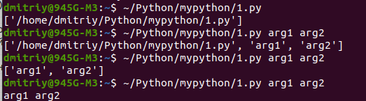

<html><head>
<style>
.menu {
       height: 100%;
       width: 145px;
       position: fixed; /* Фиксированная боковая панель (оставайтесь на месте при прокрутке) */
       background-color: Gray;  
      }
 .menu a {
  padding: 6px 8px 6px 5px;
  text-decoration: none;
  font-size: 15px;
  /*color: #818181;*/
  display: block;
          }     
.content {
           margin-left: 155px; /* То же, что и ширина боковой панели */
           padding: 0px 0px 0px 0px;
         }
</style>
</head><body>
<title>Примеры по работе с файлами</title>
<div class="menu">
<a href="python_base.html">Основы python</a>
<a href="python_example.html">Примеры</a>
<p>
<a href="#file">Файлы</a>
<a href="#text">Работа с текстом</a>
<a href="#regularn">Регулярные выражения</a>
<a href="#table">Работа с таблицами</a>
<a href="#xml">Работа с XML</a>
<a href="#parsing">Парсинг файлов</a>
<a href="#plot">Построение графиков</a>
<a href="#api">API</a>
Библиотеки:
<a href="#itertools">&nbsp;&nbsp; itertools.permutations</a>
<a href="#stdin">&nbsp;&nbsp; stdin</a>
<a href="#selenium">Selenium</a>
</div>
<div class="content">
<h3 align=center><a name="file">Файл, методы работы с файлами</h3>
Напишите программу, которая считывает из файла строку, соответствующую тексту, сжатому с помощью кодирования повторов, и
производит обратную операцию, получая исходный текст.
<pre>
with open('/home/dmitriy/Python/mypython/dataset_3363_2 (1).txt') as inf:
  for line in inf:
      line = line.strip()
      # print(line)
  simvol = ''
  num = ''
  str = ''
  for i in range(len(line)):
      ''' если символ является цифрой, тогда запоминаем ее в переменной num строкового типа
      если следующий символ снова цифра, тогда добавляем ее в num
      если же буква, тогда переменную символа simvol умножаем на int(num) и записывает эту строку в новый файл new_file.txt'''
      if '0' <= line[i] <= '9': # цифра
          num = num + line[i]
          if i == len(line) - 1: # последний символ
              str = str + simvol * int(num)
      else:  # буква
          # умножаем предыдущую букву на num и обнуляем num
          # print('simvol=',line[i], 'type(num)=',type(num),'num=',num)
          if i != 0:
              str = str + simvol * int(num)
          # print('stroka=', str)
          simvol = line[i]
          num = '0'
inf.close()
with open('/home/dmitriy/Python/mypython/dataset_3363_2_modify.txt', 'w') as ouf:
    ouf.write(str)</pre>
<b>Не моё:</b>
<pre>
with open('dataset_3363_2.txt', 'r') as f:
    s = f.readline().strip()
i = 0
while i < len(s):
    j = i + 1
    while j < len(s) and s[j].isdigit():
        j += 1
    print(s[i] * int(s[i+1:j]), end='')
    i = j</pre>
Первый символ - гарантированно буква.
Перебираем все последующие, пока они цифровые или пока не достигнут конец строки.<br>
После внутреннего цикла j либо указывает на следующую букву, либо на конец строки. В обоих случаях между s[i] и s[j] - цифры,
 составляющие нужное нам число повторов символа s[i].<br>
Печатаем символ нужное число раз, присваиваем i индекс следующей буквы для новой итерации цикла.    
<p>
<li> <b>Файл</b><br>
Напишите программу, которая считывает текст из файла (в файле может быть больше одной строки) и выводит самое частое слово в 
этом тексте и через пробел то, сколько раз оно встретилось. Если таких слов несколько, вывести лексикографически первое (можно 
использовать оператор < для строк).
<pre>
word = ''
d = {} 
maksimum = 0
spisok_max = {}
maks_word = ''
with open('/home/dmitriy/Python/mypython/dataset_3363_3.txt') as f:
  for line in f:
      line.strip() # удаляем служебные символы
      #print(line)
      for word in line.split():
          # заполняем словарь
          if word in d.keys():
              d[word] += 1
          else:
              d[word] =1 
# ищем максимальное количество слов
for key, value in d.items():
    if value > maksimum:
        spisok_max = {key:value}
        maksimum = value
    elif value == maksimum:
       spisok_max[key] = value
for key in spisok_max.keys():
    if key > maks_word:
        maks_word = key
print(maks_word, spisok_max[maks_word])
# Со строкой метод append не работает, чтобы добавить строку, используем оператор приращения.
# TypeError: can only concatenate str (not "list") to str: 
# TypeError: unsupported operand type(s) for +=: 'set' and 'list'
# for i in stroka переберет строку по буквам, чтобы по словам нужно использовать: for i in stroka.split()
</pre>
Ещё:
<pre>
<b>with open('dataset_3363_3.txt') as inf, open('MostPopularWord.txt','w') as ouf:
    maxc = 0
    s = inf.read().lower().strip().split()</b>
    s.sort()
    for word in s:
        counter = s.count(word)
        if counter > maxc:
            maxc = counter
            result_word = word
    ouf.write(result_word +' ' + str(maxc))</pre>
Без словаря, сразу читаем файл и сортируем список слов, чтобы потом первое найденное было лексиграфически впереди.
<br>
<b>Оказывается конструкция with является циклом.</b>
<pre>


--------------------------------------------------------------------------------------------------------------------


</pre>
<b>Чтение файла, импорт модуля, конструкция try/except/else</b>
<p>
Алиса зашифровала свою информацию с помощью библиотеки simple-crypt.<br>
Она представила информацию в виде строки, и затем записала в бинарный файл результат работы метода simplecrypt.encrypt.
Вам необходимо установить библиотеку simple-crypt, и с помощью метода simplecrypt.decrypt узнать, какой из паролей служит 
ключом для расшифровки файла с интересной информацией. Ответом для данной задачи служит расшифрованная интересная информация 
Алисы.
<p>
<table border=1 style="border-collapse:collapse;"  cellpadding=10><tr><td valign=top>
Моё:
<pre>
from simplecrypt import decrypt

with open('/home/dmitriy/Python/mypython/encrypted.bin', "rb") as inp:
    encrypted = inp.read()
    #print(encrypted)
with open('/home/dmitriy/Python/mypython/passwords.txt') as passw:
    for lst in passw:
        print(lst)
        try:
            s = decrypt(lst.strip(), encrypted)
        except Exception as e:
            print(f'Произошла ошибка: {e}')
            continue
        else:
            print('shifr=', s)</pre>
</td><td>
<pre>
import simplecrypt

encrypted = open("encrypted.bin", "rb").read()
passwords = open("passwords.txt").readlines()

for p in passwords:
    p = p.strip()
    try:
        s = simplecrypt.decrypt(p, encrypted)
    except simplecrypt.DecryptionException:
        continue

    print(s.decode("utf-8"))</pre>
</td></tr></table>
<p>
Еще:
<pre>
import urllib
from simplecrypt import decrypt

ciphertext = <b>urllib.urlopen('https://stepik.org/media/attachments/lesson/24466/encrypted.bin').read()</b>
passwords = urllib.urlopen('https://stepik.org/media/attachments/lesson/24466/passwords.txt')

for password in passwords:
    try:
        plaintext = decrypt(password.strip(), ciphertext)
    except:
        pass
    else:
        print(plaintext)</pre>
<p>
1. Здесь в случае возникновения исключения (ошибка программы просто из-за плохого пароля) в блоке try выполнение программы 
переходит в блок except, там continue, то есть выполняется следующий итератор цикла. В случае, если пароль хороший, то 
выполняется блок else.
<p>
2. Функция strip() без аргументов удаляет в начале и в конце строки пробел. На этом примере, когда смотрел пароли, пробелы не 
видел, но был невидимый пернос строки. Возможно его также удаляет.
<p>
===========================================================================================
<p>
Вам дается текстовый файл, содержащий некоторое количество непустых строк.<br>
На основе него сгенерируйте новый текстовый файл, содержащий те же строки в обратном порядке.
<p>
<table border=1 style="border-collapse:collapse;"  cellpadding=10><tr><td>
Моё:
<pre>
with open('/home/dmitriy/Python/mypython/1.txt') as f1:
    lst = f1.readlines() # вывели файл в список
    with open('/home/dmitriy/Python/mypython/2.txt', 'w') as f2:
        for i in range(-1, -len(lst) -1, -1):
            f2.write(lst[i].rstrip('\n') + "\n")
</pre>
</td></tr></table>
<table border=1 style="border-collapse:collapse;"  cellpadding=10><tr><td>
Не моё:
<pre>
with open('dataset_24465_4.txt', 'r') as fr, open('dataset_24465_4_w.txt', 'w') as fw:
    fw.writelines(fr.readlines()[::-1])</pre>
Ещё:
<pre>
lines = open("input.txt").readlines()
with open("output.txt", "w") as out:
    out.writelines(reversed(lines))
</pre>
</td></tr></table>
<pre>


========================================================================================================================


</pre>
<h3 align=center>Файл, методы, циклы, списки</h3>
19:50 - 21:30 (1 час и 40 минут)<br>
Имеется файл с данными по успеваемости абитуриентов. Он представляет из себя набор строк, где в каждой строке записана следующ
ая информация: <br>
Фамилия;Оценка_по_математике;Оценка_по_физике;Оценка_по_русскому_языку
<p>
Поля внутри строки разделены точкой с запятой, оценки — целые числа.
<p>
Напишите программу, которая считывает исходный файл с подобной структурой и для каждого абитуриента записывает его среднюю оце
нку по трём предметам на отдельной строке, соответствующей этому абитуриенту, в файл с ответом.
<p>
Также вычислите средние баллы по математике, физике и русскому языку по всем абитуриентам и добавьте полученные значения, разд
елённые пробелом, последней строкой в файл с ответом.
<table border=1 style="border-collapse:collapse;"  cellpadding=10><tr><td>
<pre>
d = {} # ключ - фамилия, значение - список из оценок
s = ''
num = 0
familia = []
ball = []
mathem = 0
phizik = 0
rus = 0
with open('/home/dmitriy/Python/mypython/dataset_3363_4.txt') as f:
    s = f.read().strip().split()
    for l in s:
        l = l.split(';')
        # print(l)
        for i in range(len(l)):
            if i % 4 == 0:
                familia.append(l[i])
                num = 0
            elif (i - 3) % 4 == 0:
                ball.append((num + int(l[i])) / 3)
                rus = rus + int(l[i])
            else:
                num = num + int(l[i])
                if (i - 1) % 4 == 0:
                    mathem = mathem + int(l[i])
                elif (i - 2) % 4 == 0:
                    phizik = phizik + int(l[i])
for i in ball:
    print(i)            
print(mathem/len(familia), phizik/len(familia), rus/len(familia))
</pre>
</td><td valign=top>
<b>Ещё:</b>
<pre>
koll, a1, b1, c1 = 0, 0, 0, 0
with open('dataset_3363_4.txt', 'r') as inf:
    for line in inf:
        line = line.strip().split(';')
        a, b, c = int(line[1]), int(line[2]), int(line[3])
        print((a+b+c)/3)
        koll += 1
        a1 += a
        b1 += b
        c1 += c
print((a1/koll), (b1/koll), (c1/koll))
</pre>
</td></tr></table>
<pre>


=========================================================================================================================

</pre>
<h3 align=center><a name="text">Работа с текстом</h3>
Вашей программе на вход подаются три строки s, a, b, состоящие из строчных латинских букв.
За одну операцию вы можете заменить все вхождения строки a в строку s на строку b.
<p>
Например, s = "abab", a = "ab", b = "ba", тогда после выполнения одной операции строка s перейдет в строку "baba", после 
выполнения двух и операций – в строку "bbaa", и дальнейшие операции не будут изменять строку s.
<p>
Необходимо узнать, после какого минимального количества операций в строке s не останется вхождений строки a. Если операций 
потребуется более 1000, выведите Impossible.
<p>
Выведите одно число – минимальное число операций, после применения которых в строке s не останется вхождений строки a, или 
Impossible, если операций потребуется более 1000.
<p>
<table border=1 style="border-collapse:collapse;" cellpadding=10><tr><td valign=top>
Моё:
<pre>
start_stroka = input()
enter_stroka = input()
shablon_stroka = input()
count = 0
if enter_stroka in start_stroka and enter_stroka in shablon_stroka:
        print('Impossible')
else:
    <font color=red>while count < 1001:</font> # лучше <b>while enter_stroka in start_stroka:</b>
        if enter_stroka in start_stroka:
            start_stroka = start_stroka.replace(enter_stroka, shablon_stroka)
            count += 1
        else:
            break
    if count < 1001:
        print(count)
    else:
        print('Impossible')
</pre>
</td><td valign=top>
Другое:
<pre>
s = input()
a = input()
b = input()

if a not in s:
    print(0)
elif a in b:
    print("Impossible")
else:
    ans = 0
    <font color=green>while a in s:</font>
        s = s.replace(a, b)
        ans += 1

    print(ans)</pre>
</td></tr></table>
<p>
Сначала хотел выполнить через рекурсивную функцию, но поскольку значение имел только последний вызов функции (хвостатая 
рекурсия), то выполнил итеративным способом.<br>
<b>Решения с рекурсией у других:</b>
<p>
<table border=1 style="border-collapse:collapse;"><tr><td valign=top>
№1
<pre>
def repl(s, a, b):
	if s.count(a) == 0:
		return 0
	return 1 + repl(s.replace(a, b), a, b)


s = input()
a = input()
b = input()
try:
	print(repl(s, a, b))
except RecursionError:
	print('Impossible')</pre>
</td>
<td v align=top>
№2
<pre>
def replacer(s: str, a: str, b: str, cnt: int) -> int:
    try:
        if a in s:
            new_s = s.replace(a, b)
            return replacer(new_s, a, b, cnt + 1)
        else:
            return cnt
    except RecursionError:
        return -1


s, a, b = [input() for _ in range(3)]
ans = replacer(s, a, b, 0)
print(ans if ans != -1 else 'Impossible')</pre>
</td></tr></table>
<p>
В первом примере базовым случаем является условие, когда нечего будет менять. Возврат функции равен счетчику. Когда достигли 
базового (конечного) условия, во всех вызванных функциях будут возврашать себя (счетчик), увеличивающийся на 1.
<p>
2 пример мне больще нравится. Здесь также базовое (конечное) условие, когда нечего менять. Но за счет того что count 
передается через аргумент функции, на базовом условии сразу получаем итоговый результат и через return его возвращаем. Внешние 
return также возвращают count. <b>Получается, что функция возвращает то, что возвращает конечный return.</b>
<pre>


-----------------------------------------------------------------------------------------------------------------------------


</pre>
Вашей программе на вход подаются две строки s и t, состоящие из строчных латинских букв.
<p>
Выведите одно число – количество вхождений строки t в строку s.
<pre>
s = input()
t = input()
count = 0
for i in range(0,len(s)):
    if t in s[i : i + len(t)]:
        count += 1
print(count)</pre>
<pre>


----------------------------------------------------------------------------------------------------------------------------


</pre>
Вам дана последовательность строк.<br>
Выведите строки, содержащие "cat" в качестве подстроки хотя бы два раза.
<table border=1 style="border-collapse:collapse;"  cellpadding=10><tr><td valign=top>
Моё:
<pre>
from sys import stdin
import re

lines = []
for line in stdin:
    if len(re.findall('cat', line)) >= 2:
        lines.append(line.rstrip('\n'))
for _ in lines:
    print(_)</pre>
</td><td valign=top>
Другое:
<pre>
import re
import sys

for line in sys.stdin:
    line = line.strip()
    if re.search(r"cat.*cat", line):
        print(line)</pre>
</td></tr></table>
<table border=1 style="border-collapse:collapse;"  cellpadding=10><tr><td valign=top>
Другое:
<pre>
import sys

print(*(s for s in sys.stdin if s.count('cat') > 1), sep='')
</pre>
</td></tr></table>
<pre>


-------------------------------------------------------------------------------------------------------------------


</pre>
Вам дана последовательность строк.<br>
Выведите строки, содержащие "cat" в качестве слова.
<table border=1 style="border-collapse:collapse;"  cellpadding=10><tr><td valign=top>
Моё:
<pre>
from sys import stdin
import re

for line in stdin:
    if re.findall(r'\bcat\b', line.rstrip().lstrip()):
        print(line.rstrip('\n'))</pre>
</td><td valign=top>
Другое:
<pre>
import re
import sys

for line in sys.stdin:
    line = line.rstrip()
    if re.search(r"\bcat\b", line):
        print(line)</pre>
</td></tr></table>
<pre>


===========================================================================================================================


</pre>
<a name="regularn"><h3 align=center>Регулярные выражения</h3>
<b>Метод search()</b><br>
Вам дана последовательность строк.<br>
Выведите строки, содержащие две буквы "z", между которыми ровно три символа.
<table border=1 style="border-collapse:collapse;" cellpadding=10><tr><td>
<pre>
import re
import sys

for line in <font color=red>sys.stdin</font>:
    line = line.strip()
    if <b>re.search(r"z...z", line)</b>:
        print(line)
</pre></td></tr></table>
<p>
Метод search ищет входит ли шаблон в строку. Если входит, то функция возвращает объект Match, иначе — None.
<pre>
-------------------------------------------------------------------------------------------------------------------------

</pre>
<b>Метод search() и \b</b><br>
Вам дана последовательность строк.<br>
Выведите строки, содержащие слово, состоящее из двух одинаковых частей (тандемный повтор).
<p>
<table border=1 style="border-collapse:collapse;" cellpadding=10><tr><td valign=top>
Моё:
<pre>
from sys import stdin
import re

for line in stdin:
    line = line.strip()
    if re.search(r'\b(.+)\1\b', line):
        print(line)

print(re.search(r'\b(.+)\1\b', "abcabc"))  # &lt;re.Match object; span=(0, 6), match='abcabc'>
print(re.search(r'\b(.+)\1\b', "abcabcd")) # 2 None
print(re.search(r'abc', "abcd"))           # &lt;re.Match object; span=(0, 3), match='abc'>
</pre></td></tr></table>
<p>
\b в начале и конце шаблона означает начало и конец слова, поэтому во 2 строке search вернул None.<br>
\1 - номер группы
<pre>
-------------------------------------------------------------------------------------------------------------------

</pre>
<b>Замена подстроки, метод sub</b><br>
В каждой строке замените все вхождения подстроки "human" на подстроку "computer" и выведите полученные строки.
<p>
<table border=1 style="border-collapse:collapse;" cellpadding=10><tr><td valign=top>
Моё:
<pre>
from sys import stdin
import re

for line in stdin:
    line = line.strip()
    print(re.sub('human', 'computer', line))
</pre></td></tr></table>
<pre>
-----------------------------------------------------------------------------------------------------------------------

</pre>
<b>Замена подстроки, метод sub</b><br>
В каждой строке замените первое вхождение слова, состоящего только из латинских букв "a" (регистр не важен), на слово "argh".
<p>
<table border=1 style="border-collapse:collapse;" cellpadding=10><tr><td>
<pre>
import sys
import re

[print(re.sub(r'\b[<b>aA]</b>+\b', 'argh', line.rstrip(), 1)) for line in sys.stdin]
</pre></td></tr></table>
<pre>
---------------------------------------------------------------------------------------------------------------------
</pre>
<b>Замена подстроки, метод sub, номер группы</b><br>
В каждой строке поменяйте местами две первых буквы в каждом слове, состоящем хотя бы из двух букв.<br>
Буквой считается символ из группы \w.
<p>
<table border=1 style="border-collapse:collapse;"  cellpadding=10><tr><td valign=top>
Моё:
<pre>
from sys import stdin
import re

for line in stdin:
    print(re.sub(r'\b(\w)(\w)', r'\2\1', line.strip()))</pre>
</td></tr></table>
<p>
\b - начало слова<br>
(\w)(\w) - это две группы, имеют номера 1 и 2.
<pre>
---------------------------------------------------------------------------------------------------------------------
</pre>
<b>Замена подстроки, метод sub, номер группы</b><br>
В каждой строке замените все вхождения нескольких одинаковых букв на одну букву.<br>
Буквой считается символ из группы \w.
<p>
<table border=1 style="border-collapse:collapse;" cellpadding=10><tr><td>
<pre>
from sys import stdin
import re

for line in stdin:
    print(re.sub(r'(\w)\1+', <font color=red>r'\1'</font>, line.strip()))
</pre></td></tr></table>
<p>
Первый аргумент функции sub - это шаблон в строке, который нужно заменить. Второй аргумент - это чем будем менять шаблон.
<p>
r'\1' эквивалентно re.search(...).group(1), первому выражению, разделенному круглыми скобками, внутри регулярного выражения.<br>
Группы нумеруют начиная с 1.
<pre>
------------------------------------------------------------------------------------------------------------------------
</pre>
Вашей программе на вход подаются две строки, содержащие url двух документов A и B.<br>
Выведите Yes, если из A в B можно перейти за два перехода, иначе выведите No.
<p>
Обратите внимание на то, что не все ссылки внутри HTML документа могут вести на существующие HTML документы.
<pre>
Sample Input 1:
<p>
https://stepik.org/media/attachments/lesson/24472/sample0.html
https://stepik.org/media/attachments/lesson/24472/sample2.html
Sample Output 1:

Yes</pre>
<p>
<table border=1 style="border-collapse:collapse;"  cellpadding=10><tr><td valign=top>
Моё:
<pre>
import requests
import re

url1 = input()
url2 = input().replace('stepik.org', 'stepic.org')

r = requests.get(url1).text
pattern = r'href="(\S*)"'
lst = re.findall(pattern, r.strip())
s = []
for i in lst:
    r = requests.get(i).text
    s +=re.findall(pattern, r.strip())
if url2 in s:
    print('Yes')
else:
    print('No')</pre>
</td><td>
Другое:
<pre>
import re
import requests

start_url = input()
end_url = input()

found = False

link_pattern = re.compile(r'<a[^>]*?href="(.*?)"[^>]*?>')

resp = requests.get(start_url).text
for url in link_pattern.findall(resp):
    cur_resp = requests.get(url).text
    if end_url in link_pattern.findall(cur_resp):
        found = True
        break

print("Yes" if found else "No")</pre>
</td></tr></table>
<p>
<i>Кто-нибудь, объясните мне, пожалуйста, почему link_pattern.findall(resp) выдает очищенный от метатегов &lt;a href= &lt;/
a&gt; URL адрес? Т.е. полным совпадением (Full match) для данного регулярного выражения считается адрес, окруженный метатегами 
&lt;a href= &lt;/a&gt;, а "очищенный" от метатегов адрес является группой (Group 1).<br>
Почему link_pattern.findall(resp)выдает группы (т.е. только то, что в регулярном выражении заключено в круглые 
скобки), а не полное совпадение шаблона (Full match)?
<p>
"Если в шаблоне есть группирующие скобки, то вместо списка найденных подстрок будет возвращён список кортежей, в каждом из 
которых только соответствие каждой группе." https://habr.com/ru/post/349860/#Gruppy_i_refindall</i>
<pre>


-----------------------------------------------------------------------------------------------------------------------


</pre>
Вашей программе на вход подается ссылка на HTML файл.<br>
Вам необходимо скачать этот файл, затем найти в нем все ссылки вида &lt;a ... href="..." ... &gt; и вывести список сайтов, на 
которые есть ссылка.
<br>Сайтом в данной задаче будем называть имя домена вместе с именами поддоменов. То есть, это последовательность символов, 
которая следует сразу после символов протокола, если он есть, до символов порта или пути, если они есть, за исключением 
случаев с относительными ссылками вида &lt;a href="../some_path/index.html"&gt;.
<p>
Сайты следует выводить в алфавитном порядке.
<pre>
Пример HTML файла:

&lt;a href="http://stepik.org/courses"&gt;
&lt;a href='https://stepik.org'&gt;
&lt;a href='http://neerc.ifmo.ru:1345'&gt;
&lt;a href="ftp://mail.ru/distib" &gt;
&lt;a href="ya.ru"&gt;
&lt;a href="www.ya.ru"&gt;
&lt;a href="../skip_relative_links"&gt;

Пример ответа:
mail.ru
neerc.ifmo.ru
stepik.org
www.ya.ru
ya.ru</pre>
<p>
<table border=1 style="border-collapse:collapse;"  cellpadding=10><tr><td valign=top>
Моё:
<pre>
import requests
import re

url = input()
f = requests.get(url).text
pattern = r'&lt;a(?:.+?)href=[\'\"](?:[a-z]+:\/\/)?([a-z][\w\-\.]+)'
lst = set(re.findall(pattern, f))
st = sorted(lst)
for i in st:
    print(i)
</pre>
</td></tr></table>
<table border=1 style="border-collapse:collapse;"  cellpadding=10><tr><td valign=top>
Другое:
<pre>
import requests
import re

page = requests.get(input())

url_pattern = re.compile(r'&lt;a.*?href=["|\'](.*?:\/\/)?(\w.*?)([/|:].*)?["|\'].*')
links = sorted(set([link[1] for link in url_pattern.findall(page.text)]))
print(*links, sep='\n')
</pre>
</td></tr></table>
<pre>

-------------------------------------------------------------------------------------------------------------------

</pre>
<b>Модуль re, функция findal для поиска по паттерну в строке, join - преобразование списка в строку</b><br>
В этой задаче мы реализуем алгоритм дешифровки строк, закодированных с помощью одного из самых простых  вариантов кодирования длин серий.<br>
На вход алгоритму подаётся строка, содержащая цифры и символы латинского алфавита. Эта строка разбивается на так называемые "серии", которые кодируются парой число-символ или просто символ (в таком случае число считается равным единице). Результат должен содержать эти серии в том же порядке, что они и встречаются в исходной строке, при этом каждая серия раскрывается в последовательность символов соответствующей длины.<br>
Например, рассмотрим строку:<br>
3ab4c2CaB<br>
Разобъём её на серии:<br>
3a b 4c 2C a B<br>
После чего преобразуем серии и получим исходную закодированную строку:<br>
aaabccccCCaB
<p>
<table border=1 style="border-collapse:collapse;" cellpadding=10><tr><td valign=top>
<pre>
import re

shifr_str = input()

pattern = <b>r'\d*[A-Za-z]{1}</b>'  # d* - любое количество цифр, [A-Za-z]{1} - любой символ из класса (множества A-Za-z) в коли-ве 1
lst = <b>re.findall(pattern, shifr_str)</b>
# print(lst)

for simvols in lst:
    letter = re.findall(r'[A-Za-z]{1}', simvols)
    if re.findall(r'\d*', simvols)[0] != '':
        print(''.join(letter) * int(re.findall(r'\d*', simvols)[0]), end='')
    else:
        print(''.join(letter) * 1, end='')
</pre></td></tr>
<tr><td valign=top>
<pre>
n = ''
for i in input():  # 3ab4c2CaB
    if i.isdigit():
        n += i
        continue
    print(i * int(n or 1), end = '')
    n = ''
</pre></td></tr></table>
<pre>
-----------------------------------------------------------------------------------------------------------------------------
</pre>
<b>Codewars 4 kyu, Find the unknown digit<br>
eval()</b><br>
Найти для выражений типа "??*??=302?" число вместо вопросительного знака. Если число двузначное, то первый знак, если не минус, не может быть 0.
<p>
<table border=1 style="border-collapse:collapse;" cellpadding=10><tr><td>
<pre>
import re

def solve_runes(runes):

    # <b>Вытаскиваем левый операнд, правый операнд и резалт</b> всё это можно было заменить функцией eval()
    lst1 = re.split(r'=', runes)                               #1
    result = lst1[1]
    if lst1[0][0] == '-':                                      # 2
        lst2 = re.split(r'([+*-])', lst1[0][1:], maxsplit=1)
        left_operand = '-' + lst2[0]
    else:
        lst2 = re.split(r'([+*-])', lst1[0], maxsplit=1)
        left_operand = lst2[0]
    operator = lst2[1]
    right_operand = lst2[2]
    print("runes=", runes)
    print("left_operand=", left_operand) 
    print("operator=", operator)
    print("right_operand=", right_operand)
    print("result=", result)
    print()
    
    lst_runes = [0,1,2,3,4,5,6,7,8,9]

    # <b>Исключаем, если нужно 0</b>
    pattern = r'(-?\?[\d|\?])'                          # 3
    if re.match(pattern, left_operand) or re.match(pattern, right_operand) or re.match(pattern, result):
        lst_runes.remove(0)
        
    all_numbers = left_operand + right_operand + result  # 4
    print("all_numbers=", all_numbers)
    for i in all_numbers:
        print("i=", i)
        if i.isdigit() and int(i) in lst_runes:
            lst_runes.remove(int(i))
            print("2lst_runes=", lst_runes)
    print("3lst_runes=", lst_runes)
    lst3 = lst_runes[:]
    for i in lst3:
        lo = int(left_operand.replace('?', str(i)))
        ro = int(right_operand.replace('?', str(i)))
        res = int(result.replace('?', str(i)))
        print("i=", i, "lo=", lo, "ro=", ro, "res=", res)
        if operator == '+' and lo + ro != res:
            lst_runes.remove(i)
        elif operator == '-' and lo - ro != res:
            #print("lo - ro=", lo - ro)
            lst_runes.remove(i)
        elif operator == '*' and lo * ro != res:
            lst_runes.remove(i)
        lst_runes.sort()
    
    return lst_runes[0] if len(lst_runes) != 0 else -1


#print(solve_runes("1+1=?"))          # 2
#print(solve_runes("123*45?=5?088"))  # 6, "Answer for runes = '123*45?=5?088' ")
#print(solve_runes("-19--45=5?"))     # -1, "Answer for runes = '19--45=5?' ")
#print(solve_runes("??*??=302?"))     # 5, "Answer for runes = '??*??=302?' ")
#print(solve_runes("?*11=??"))        # 2, "Answer for runes = '?*11=??' ")
print(solve_runes("-?56373--9216=-?47157"))        # 8, "Answer for runes = '??*1=??' ")
</pre></td></tr></table>
<p>
1 строка - расщепляю строку на список из двух элементов по '='. Второй элемент списка - это после знака равно.
<p>
2. Условие, что первый символ - это знак минус.
<p>
3. pattern = r'(-?\?[\d|\?])' - шаблон, чтобы возможно отсеять 0 из списка возможных цифр lst_runes.  Шаблон начинается с -? - это значит минус или его нет. Далее \? - это ?, его экранирую, чтобы не считался метасимволом.<br>
Функция match() ишет шаблон в начале строки.<br>
Если условие выполняется, то удаляю 0 из lst_runes.remove(0): lst_runes.remove(0)<br>
Метод remove() удаляет элемент из коллекции по его значению.
<p>
4. В all_numbers суммирую все символы. Далее смотрю каждый символ и если он является цифрой (isdigit()) и присутствует в списке lst_runes, то удаляю из этого списка: lst_runes.remove(int(i)) Далее вместо '?' подставляю элемент из lst_runes и если равенство не выполняется, то удаляю этот элемент. Итоговый список сортирую: lst_runes.sort() и если не пустой, то: return 1 элемент списка.
<p>
Не моё решение:
<p>
<table border=1 style="border-collapse:collapse;" cellpadding=10><tr><td>
<pre>
import re

def solve_runes(runes):
    for d in sorted(set("0123456789") - set(runes)):           # 1
        toTest = runes.replace("?",d)                          # 2
        if <font color=red>re.search(r'([^\d]|\b)0\d+'</font>, toTest): continue  # 3
        l,r = toTest.split("=")
        if eval(l) == eval(r): return int(d)                   # 4
    return -1
</pre></td></tr></table>
<p>
1. Получаем множество отсортированных возможных цифр:<br>
set("0123456789") равно {'1', '9', '8', '6', '5', '7', '0', '3', '4', '2'}<br>
Например: set("-?56373--9216=-?47157") равно {'1', '9', '6', '5', '7', '=', '-', '3', '4', '?', '2'}<br>
И set("0123456789") - set("-?56373--9216=-?47157") равно {'8', '0'}<br>
Сортируем.
<p>
2. Подставляем вместо "?" d - элемент множества возможных цифр.
<p>
3. <font color=red>re.search(r'([^\d]|\b)0\d+', toTest)</font><br>
Не понимаю, разве \b не должен находиться в начале или в конце шаблона? И он вроде как обозначает не символ, а позицию.<br>
И символ ^ что означает: начало шаблона или исключение следующего символа?
<p>
4. Функция eval принимает строку в аргументе, как математическую формулу.<br>
Мощная штука для этого примера. Разницу можно видеть по размеру моего решения и чужого.
<pre>

=======================================================================================================================

</pre>
<a name="table"><h3 align=center>Работа с таблицами</h3>
Вам дана частичная выборка из датасета зафиксированных преступлений, совершенных в городе Чикаго с 2001 года по настоящее 
время.
<br>Одним из атрибутов преступления является его тип – Primary Type.
<br>Вам необходимо узнать тип преступления, которое было зафиксировано максимальное число раз в 2015 году.
<br>Файл с данными: Crimes.csv
<p>
<table border=1 style="border-collapse:collapse;" cellpadding=10><tr><td valign=top>
Моё:
<pre>
import csv
import re
from collections import Counter

d = {}
lst = []
with open('/home/dmitriy/Python/mypython/Crimes.csv') as f:
    reader = csv.reader(f)
    for row in reader:
        if re.search(r'\d\d/\d\d/2015', row[2]):
            lst.append(row[5])
print(Counter(lst))
</pre>
</td><td valign=top>
Другое:
<pre>
from collections import Counter as c

with open('Crimes.csv') as f:
 data = csv.reader(f)
 print(c( row[5] for row in data <b>if '2015' in row[2]</b> ))
</pre>
Ошибка: нет import csv
<br>
------------------------------------------------------------
<br>
Другое:
<pre>
import csv

with open("Crimes.csv") as f:
     reader = csv.reader(f)
     crimes = []
     for row in reader:
         if "2015" in row[2]:
             crimes.append(row[5])
     print(max(crimes, key=crimes.count))</pre>
</td></tr></table>
<pre>


==================================================================================================================


</pre>
<a name="xml"><h3 align=center>Работа с данными XML-формата</h3>
Вам дано описание пирамиды из кубиков в формате XML.<br>
Кубики могут быть трех цветов: красный (red), зеленый (green) и синий (blue).<br>
Для каждого кубика известны его цвет, и известны кубики, расположенные прямо под ним.<br>
Пример:
<pre>
&lt;cube color="blue"&gt;
  &lt;cube color="red"&gt;
    &lt;cube color="green"&gt;
    &lt;/cube&gt;
  &lt;/cube&gt;
  &lt;cube color="red"&gt;
  &lt;/cube&gt;
&lt;/cube&gt;
</pre> 
Введем понятие ценности для кубиков. Самый верхний кубик, соответствующий корню XML документа имеет ценность 1. Кубики, 
расположенные прямо под ним, имеют ценность 2. Кубики, расположенные прямо под нижележащими кубиками, имеют ценность 3. И т. д.
<br>Ценность цвета равна сумме ценностей всех кубиков этого цвета.
<br>Выведите через пробел три числа: ценности красного, зеленого и синего цветов.
<pre>
Sample Input:
&lt;cube color="blue"&gt;&lt;cube color="red"&gt;&lt;cube color="green"&gt;&lt;/cube&gt;&lt;/cube&gt;&lt;cube 
color="red"&gt;&lt;/cube&gt;&lt;/cube&gt;
Sample Output:
4 3 1
</pre>
<table border=1 style="border-collapse:collapse;"  cellpadding=10><tr><td valign=top>
<b>Моё:</b>
<pre>
import xml.etree.ElementTree as ET
 
<font color=red>red_box = 0
green_box = 0
blue_box = 0</font>
root = ET.fromstring(input())

def search_cube(element, level):
    global red_box
    global blue_box
    global green_box
    for subelement in element.findall('cube'):
        if subelement.attrib['color'] == 'red':
            red_box += level
        elif subelement.attrib['color'] == 'green':
            green_box += level
        else:
            blue_box += level
    level += 1    
    for subelement in element.findall('cube'):
        search_cube(subelement, level)
        

if root.attrib['color'] == 'red':
    red_box = 1
elif root.attrib['color'] == 'green':
    green_box = 1
else:
    blue_box = 1
search_cube(root, 2)
print(red_box, green_box, blue_box)
</pre>
</td><td valign=top>
Другое:
<pre>
from xml.etree import ElementTree

root = ElementTree.fromstring(input())
<font color=green>colors = {"red": 0, "green": 0, "blue": 0}</font>

def getcubes(root, value):
    colors[root.attrib['color']] += value
    for child in root:
        getcubes(child, value+1)

getcubes(root,1)
print(colors["red"], colors["green"], colors["blue"])
</pre>
<p>
В отличии от моего:<br>
1. Вместо 3 переменных создал словарь. Это позволило заменить блок условий одной строчкой <i>colors[root.attrib['color']] += 
value</i>
<p>
2. Корневой узел разбирается в функции. Создает целостность кода.
</td></tr></table>
<pre>

------------------------------------------------------------------------------------------------------------------------

</pre>
<b>etree.ElementTree</b><br>
В OpenStreetMap XML встречаются теги node, которые соответствуют некоторым точкам на карте. Ноды могут не только обозначать какой-то точечный объект, но и входить в состав way (некоторой линии, возможно замкнутой) и не иметь собственных тегов. Для доступного по ссылке https://stepik.org/media/attachments/lesson/245678/map1.osm фрагмента карты посчитайте, сколько node имеет хотя бы один вложенный тэг tag, а сколько - не имеют. В качестве ответа введите два числа, разделённых пробелом.
<p>
<table border=1 style="border-collapse:collapse;" cellpadding=10><tr><td>
<pre>
import xml.etree.ElementTree as ET

tree = ET.parse('map1 .osm')
root = tree.getroot()

not_tag = 0
yes_tag = 0
for i in root.findall('node'):  # находит все теги node
    tag = i.find('tag')  # внутри node находит тег tag, если не находит, то возвращает None
    if tag != None:
        yes_tag +=1
    else:
        not_tag +=1

print(yes_tag, not_tag)
</pre></td></tr></table>
<pre>

-----------------------------------------------------------------------------------------------------------------------

</pre>
<b>Чтение url-адреса, urllib.request, xml.etree.ElementTree, поиск атрибутов</b><br>
Вася решил открыть АЗС (заправку). Чтобы оценить уровень конкуренции он хочет изучить количество заправок в интересующем его районе. Вася скачал интересующий его кусок карты OSM https://stepik.org/media/attachments/lesson/245681/map2.osm и хочет посчитать, сколько на нём отмечено точечных объектов (node), являющихся заправкой. В качестве ответа вам необходимо вывести одно число - количество АЗС.<br>
Заправки аходятся внутри тега tag и имеют атрибуты k=amenity и v=fuel
<p>
<table border=1 style="border-collapse:collapse;" cellpadding=10><tr><td>
<pre>
import urllib.request
import xml.etree.ElementTree as ET

url = "https://stepik.org/media/attachments/lesson/245681/map2.osm"

with urllib.request.urlopen(url) as response:
    xml_data = response.read()

#print(type(xml_data))  # &lt;class 'bytes'>
root = ET.fromstring(xml_data)

#print(root)  # &lt;Element 'osm' at 0x7f3189bd4ae0>

count = 0
for node in root.findall('node'):
    tag = node.find('tag') 
    if tag != None:
        if <b>tag.get('k') == 'amenity' and tag.get('v') == 'fuel':</b>
            count += 1

print(count)
</pre></td>
<td valign=top>
<pre>
import xml.etree.ElementTree as ET

root = ET.parse('map2.osm').getroot()
nodes = <b>root.findall("./node/tag[@k='amenity'][@v='fuel']")</b>
print(len(nodes))
</pre>
root.findall("./node/tag[@k='amenity'][@v='fuel']") возвращает список объектов tag
</td></tr></table>
<p>
Атрибуты ищем через метод get
<pre>

-------------------------------------------------------------------------------------------------------------------------

</pre>
<b>Создание xml-файла с внутренними тегами</b><br>
Задача через питоновский скрипт создать html страницу с выводом таблицы умножения.
<p>
<table border=1 style="border-collapse:collapse;" cellpadding=10><tr><td>
<pre>
from xml.etree import ElementTree

root = ElementTree.Element("html")

body_teg = ElementTree.SubElement(root, "body")

table_teg = ElementTree.SubElement(body_teg, "table")
for strk in range(1, 11):
    tr_teg = ElementTree.SubElement(table_teg, "tr")
    for stlb in range(1, 11):
        td_teg = ElementTree.SubElement(tr_teg, "td")
        td_teg.text = str(strk * stlb)

tree = ElementTree.ElementTree(root)
tree.write("test.html")  # записываем дерево в файл
</pre></td></tr></table>
<pre>

------------------------------------------------------------------------------------------------------------------------

</pre>
<b>Добавление атрибутов</b><br>
Предыдущее задание, но числа в виде ссылок:
<p>
<table border=1 style="border-collapse:collapse;" cellpadding=10><tr><td>
<pre>
from xml.etree import ElementTree

root = ElementTree.Element("html")

body_teg = ElementTree.SubElement(root, "body")

table_teg = ElementTree.SubElement(body_teg, "table")
for strk in range(1, 11):
    tr_teg = ElementTree.SubElement(table_teg, "tr")
    for stlb in range(1, 11):
        td_teg = ElementTree.SubElement(tr_teg, "td")
        a_teg = ElementTree.SubElement(td_teg, "a")
        a_teg.set('href','http://' + str(strk * stlb) + '.ru')
        a_teg.text = str(strk * stlb)

tree = ElementTree.ElementTree(root)
tree.write("test.html")
</pre></td></tr></table>
<pre>

===========================================================================================================================

</pre>
<a name="parsing"><h3 align=center>Парсинг файлов (Selenium, Beautiful Soup, pandas, xlrd)</h3>
<b>Написание веб-скрапера с использованием BeautifulSoup и requests:</b><br>
– Выберите веб-сайт с данными, которые вы хотели бы собрать.<br>
– Напишите веб-скрапер с использованием библиотеки BeautifulSoup для извлечения данных.<br>
– Сохраните извлеченные данные в удобном формате (например, CSV).<br>
Решение: Для этой задачи давайте рассмотрим пример веб-скрапинга данных о книгах с веб-сайта Books to Scrape(http://books.toscrape.com/).<br>
Пример кода для веб-скрапинга данных о книгах и сохранения их в формате CSV:
<p>
<table border=1 style="border-collapse:collapse;" cellpadding=10><tr><td>
<pre>
import requests
from bs4 import BeautifulSoup
import pandas as pd
# URL веб-сайта для скрапинга
url = 'http://books.toscrape.com/'
# Отправка GET-запроса
response = requests.get(url)
# Проверка успешности запроса
if response.status_code == 200:
    # Использование BeautifulSoup для парсинга HTML-страницы
    soup = BeautifulSoup(response.text, 'html.parser')
    # Нахождение блоков с информацией о книгах
    book_blocks = soup.find_all('article', class_='product_pod')
    # Списки для хранения данных
    titles = []
    prices = []
    ratings = []
    # Итерация по блокам и извлечение данных
    for book_block in book_blocks:
        title = book_block.h3.a['title']
        price = book_block.select('div p.price_color')[0].text
        rating = book_block.select('p[class^="star-rating"]')[0]['class'][1]
        titles.append(title)
        prices.append(price)
        ratings.append(rating)
    # Создание Pandas DataFrame
    df = pd.DataFrame({
    'Title': titles,
    'Price': prices,
    'Rating': ratings,
    })
   # Сохранение данных в CSV-файл
   df.to_csv('books_data.csv', index=False)
   print("Данные успешно скрапированы и сохранены в 'books_data.csv'.")
else:
    print(f"Ошибка {response.status_code}: Невозможно получить данные с веб-сайта.")
<pre></td></tr></table>
<p>
Этот код пройдет по страницам веб-сайта с книгами, извлечет информацию о названии, цене и рейтинге книг, создаст Pandas
DataFrame и сохранит данные в CSV-файл "books_data.csv". Пожалуйста, учтите, что использование веб-скрапинга должно
соответствовать политике использования веб-сайта.
<pre>

------------------------------------------------------------------------------------------------------------------------

</pre>
<b>xlrd, pandas, statistics</b><br>
Вася планирует карьеру и переезд. Для это составил таблицу, в которой для каждого региона записал зарплаты для разных интересные ему профессий. Таблица доступна по ссылке https://stepik.org/media/attachments/lesson/245267/salaries.xlsx. Выведите название региона с самой высокой медианной зарплатой (медианой называется элемент, стоящий в середине массива после его упорядочивания) и, через пробел, название профессии с самой высокой средней зарплатой по всем регионам.
<p>
<table border=1 style="border-collapse:collapse;" cellpadding=10><tr><td>
<pre>
import xlrd3

d = {}
d1 = {}
wb = xlrd3.open_workbook('salaries.xlsx')  # возвращает &lt;xlrd3.xlsx.BetterBook object at 0x7f878694bfd0>
<font color=red>sheet_names = wb.sheet_names()</font>  # ['Лист1'], возвращает список листов файла, не нужен
sh = wb.sheet_by_name(sheet_names[0])      # Sheet  0:&lt;Лист1>

for stroka_sh in range(1, sh.nrows):
    #print(sh.row_values(stroka_sh))
    d[sh.row_values(stroka_sh)[0]] = sorted(sh.row_values(stroka_sh)[1:])
    #print(sh.row_values(stroka_sh)[0], d[sh.row_values(stroka_sh)[0]])

max_salary = 0
region =''
for key, val in d.items():
    if d[key][3] > max_salary:
        max_salary = d[key][3]
        region = key

print(region, max_salary)

for stolb_sh in range(1, sh.ncols):
    #print(sh.col_values(stolb_sh))
    d1[sh.col_values(stolb_sh)[0]] = sum(sh.col_values(stolb_sh)[1:]) / len(sh.col_values(stolb_sh)[1:])
#print(d1)

profy_salary = 0
profy = ''
for i in d1:
    if d1[i] > profy_salary:
       profy_salary = d1[i] 
       profy = i

print(profy, profy_salary)
print(region, profy)
</pre></td></tr>
<tr><td>
Через библиотеку statistics:
<pre>
import xlrd

from statistics import median, mean

wb = xlrd.open_workbook('salaries.xlsx')
sh = wb.sheet_by_index(0)
d = {sh.cell_value(row,0): median(sh.row_values(row)[1:]) for row in range(1,9)}
e = {sh.cell_value(0,col): mean(sh.col_values(col)[1:]) for col in range(1,8)}
print(max(d, key=lambda k: d[k]), max(e, key=lambda k: e[k]))
</pre></td></tr>
<tr><td>
Через модуль pandas
<pre>
import pandas as pd


data = pd.read_excel('salaries.xlsx', index_col=0)
print(data.median(axis=1).idxmax(), data.mean(axis=0).idxmax())
<pre></td></tr></table>
<pre>

------------------------------------------------------------------------------------------------------------------------

</pre>
<b>xlrd, pandas, сортировка словаря сначала по убыванию значения, а потом если значения равны, то в алфавитном порядке по ключу</b><br>
Васю назначили завхозом в туристической группе и он подошёл к подготовке ответственно, составив справочник продуктов с указанием калорийности на 100 грамм, а также содержание белков, жиров и углеводов на 100 грамм продукта. Ему не удалось найти всю информацию, поэтому некоторые ячейки остались незаполненными (можно считать их значение равным нулю). Также он использовал какой-то странный офисный пакет и разделял целую и дробную часть чисел запятой. Таблица доступна по ссылке https://stepik.org/media/attachments/lesson/245290/trekking1.xlsx<br>
Вася хочет минимизировать вес продуктов и для этого брать самые калорийные продукты. Помогите ему и упорядочите продукты по убыванию калорийности. В случае, если продукты имеют одинаковую калорийность - упорядочите их по названию. В качестве ответа необходимо сдать названия продуктов, по одному в строке.
<p>
<table border=1 style="border-collapse:collapse;" cellpadding=10><tr><td>
XLRD:
<pre>
import xlrd3

wb = xlrd3.open_workbook('trekking1.xlsx')
sheet_names = wb.sheet_names()
sh = wb.sheet_by_name(sheet_names[0]) 

d = {}
for stroka_sh in range(1, sh.nrows):
    #print(sh.row_values(stroka_sh))
    d[sh.row_values(stroka_sh)[0]] = sh.row_values(stroka_sh)[1]

sort_obj = <b>sorted(d, key=lambda k: (-d[k], k))</b>  # возвращает список ключей словаря d
for i in sort_obj:
    print(i)
</pre></td></tr></table>
<p>
sorted(d, key=lambda k: (-d[k], k)): (-1 * d[k]) разворачиваем список по убыванию калорийности, и при совпадении оставляем правильный порядок сортировки по алфавиту.
<p>
Можно использовать еще itemgetter.
<p>
Решение на pandas:
<p>
<table border=1 style="border-collapse:collapse;" cellpadding=10><tr><td>
<pre>
import pandas as pd

tabpd = pd.read_excel("trekking1.xlsx")

tabpd_sorted = tabpd.<b>sort_values(by=['ККал на 100', 'Unnamed: 0']</b>, ascending=[False, True]) # сортируем по двум столбцам

#print(tabpd_sorted['Unnamed: 0'])  # выводит вместе с индексом строк, не то что мне нужно

#print(tabpd_sorted[['Unnamed: 0']].values)  # выводит как список списков, также не то что мне нужно

for i in tabpd_sorted['Unnamed: 0']:  # вот так правильно.
    print(i)
</pre></td></tr></table>
<pre>

----------------------------------------------------------------------------------------------------------------------------

</pre>
Откатил на более старую версию xlrd, поэтому теперь: import xlrd<br>
<b>xldr, pandas, объединение датафреймов (merge()</b><br>
Васю назначили завхозом в туристической группе и он подошёл к подготовке ответственно, составив справочник продуктов с указанием калорийности на 100 грамм, а также содержание белков, жиров и углеводов на 100 грамм продукта. Ему не удалось найти всю информацию, поэтому некоторые ячейки остались незаполненными (можно считать их значение равным нулю). Также он использовал какой-то странный офисный пакет и разделял целую и дробную часть чисел запятой. Таблица доступна по ссылке https://stepik.org/media/attachments/lesson/245290/trekking2.xlsx<br>
Вася составил раскладку по продуктам на один день (она на листе "Раскладка") с указанием названия продукта и его количества в граммах. Посчитайте 4 числа: суммарную калорийность и граммы белков, жиров и углеводов. Числа округлите до целых вниз и введите через пробел.
<p>
<table border=1 style="border-collapse:collapse;" cellpadding=10><tr><td>
XLRD:
<pre>
import xlrd

wb = xlrd.open_workbook('trekking2.xlsx')
sheet_names = wb.sheet_names()
sh0 = wb.sheet_by_name(sheet_names[0]) 
spravka = {sh0.row_values(i)[0] : sh0.row_values(i)[1:] for i in range(1, sh0.nrows)}

sh1 = wb.sheet_by_name(sheet_names[1])
summarn_kal = 0
belok = 0
uglevod = 0
fat = 0

for i in range(1, sh1.nrows):
    food = sh1.row_values(i)[0]
    massa = sh1.row_values(i)[1]
    summarn_kal += massa * spravka[food][0] / 100
    if spravka[food][1] == '':
        spravka[food][1] = 0
    if spravka[food][2] == '':
        spravka[food][2] = 0
    if spravka[food][3] == '':
        spravka[food][3] = 0
    belok += massa * spravka[food][1] / 100
    uglevod += massa * spravka[food][3] / 100
    fat += massa * spravka[food][2] / 100

print(int(summarn_kal), int(belok), int(fat), int(uglevod))
</pre></td></tr>
<tr><td>
Не моё:
<pre>
import xlrd, requests
res = requests.get('https://stepik.org/media/attachments/lesson/245290/trekking2.xlsx')
wb = xlrd.open_workbook(file_contents=res.content)
sh_spr = wb.sheet_by_name(wb.sheet_names()[0])
sh_ras = wb.sheet_by_name(wb.sheet_names()[1])
res = [0,0,0,0]
for i in range(1, sh_ras.nrows):
    n, p = sh_ras.row_values(i)
    for j in range(1, sh_spr.nrows):
        if n == sh_spr.row_values(j)[0]:
            s = [x*p/100 if x else 0 for x in sh_spr.row_values(j,1)]   
            res = [x+y for x,y in zip(res, s)]
print(*map(int, res))
</pre></td></tr>
<tr><td>
pandas
<pre>
import pandas as pd

sh1 = pd.read_excel("trekking2.xlsx", sheet_name=0).fillna(0)
sh2 = pd.read_excel("trekking2.xlsx", sheet_name=1).fillna(0)

#df1 = pd.merge(sh1, sh2,  left_on='Unnamed: 0', right_on='Продукт') 

df1 = sh1.rename(columns={"Unnamed: 0": "Продукт"})

#df1 = pd.merge(df1, sh2, on='Продукт')
df2 = df1.merge(sh2, on='Продукт')

df2.iloc[:, 1:5] = df2.iloc[:, 1:5].mul(df2['Вес в граммах']/100, axis=0)
print(df2)
print(*[int(x) for x in df2.iloc[:,1:5].sum()])
</pre></td></tr></table>
<pre>

-----------------------------------------------------------------------------------------------------------------------

</pre>
<b>xlrd pandas</b><br>
Васю назначили завхозом в туристической группе и он подошёл к подготовке ответственно, составив справочник продуктов с указанием калорийности на 100 грамм, а также содержание белков, жиров и углеводов на 100 грамм продукта. Ему не удалось найти всю информацию, поэтому некоторые ячейки остались незаполненными (можно считать их значение равным нулю). Также он использовал какой-то странный офисный пакет и разделял целую и дробную часть чисел запятой. Таблица доступна по ссылке https://stepik.org/media/attachments/lesson/245290/trekking3.xlsx<br>
Вася составил <b>раскладку по продуктам на весь поход</b> (она на листе "Раскладка") с указанием номера дня, названия продукта и его количества в граммах. Для каждого дня посчитайте 4 числа: суммарную калорийность и граммы белков, жиров и углеводов. Числа округлите до целых вниз и введите через пробел. Информация о каждом дне должна выводиться в отдельной строке.
<p>
<table border=1 style="border-collapse:collapse;" cellpadding=10><tr><td>
XLRD:
<pre>
import xlrd

wb = xlrd.open_workbook('trekking3.xlsx')
sh0 = wb.sheet_by_name(wb.sheet_names()[0]) 
sh1 = wb.sheet_by_name(wb.sheet_names()[1])

summarn_kal = 0
belok = 0
uglevod = 0
fat = 0

spravka = {sh0.row_values(i)[0] : sh0.row_values(i)[1:] for i in range(1, sh0.nrows)}

d = {}
d1 = {}
for i in range(1, sh1.nrows):
    line = sh1.row_values(i)
    day = int(line[0])
    if day not in d:  # если в словаре нет такого ключа
        d[day] = [line[1:]]
    else:  # если такой ключ уже есть
        d[day].append(line[1:])  # добавляем значение в конец списка
    
print(d)
print("kal bel fat uglev")
for day in d.keys():
    kalor = 0
    belok = 0
    uglevod = 0
    fat = 0
    for i in range(len(d[day])):
        food = d[day][i][0]
        massa = d[day][i][1] / 100
        kalor += massa * spravka[food][0]
        if spravka[food][1] == '': spravka[food][1] = 0
        belok += massa * spravka[food][1]
        if spravka[food][3] == '': spravka[food][3] = 0
        uglevod += massa * spravka[food][3]
        if spravka[food][2] == '': spravka[food][2] = 0
        fat += massa * spravka[food][2]
    print(int(kalor), int(belok), int(fat), int(uglevod))
</pre></td></tr>
<tr><td>
Не моё:
<pre>
import urllib.request
import xlrd
proxy_support = urllib.request.<font color=red>ProxyHandler({'http' : 'http://192.168.50.107:3130',
                                             'https': 'http://192.168.50.107:3130'})
opener = urllib.request.build_opener(proxy_support)
urllib.request.install_opener(opener)</font>
bt = urllib.request.urlopen("https://stepik.org/media/attachments/lesson/245290/trekking3.xlsx").read()

wb = xlrd.open_workbook(file_contents=bt)
sh = wb.sheet_by_name("Справочник")
m_inf = {sh.row_values(i)[0]: list(map(lambda x: float(x if x!='' else 0),sh.row_values(i)[1:5])) for i in range(1,sh.nrows)}

sh = wb.sheet_by_name("Раскладка")

ans = {}
for i in range(1, sh.nrows):
    day = int(sh.row_values(i)[0])
    if sh.row_values(i)[0] in ans:
        ans[day][0] += m_inf[sh.row_values(i)[1]][0] * sh.row_values(i)[2] / 100
        ans[day][1] += m_inf[sh.row_values(i)[1]][1] * sh.row_values(i)[2] / 100
        ans[day][2] += m_inf[sh.row_values(i)[1]][2] * sh.row_values(i)[2] / 100
        ans[day][3] += m_inf[sh.row_values(i)[1]][3] * sh.row_values(i)[2] / 100
    else:
        ans[day]  = [m_inf[sh.row_values(i)[1]][0] * sh.row_values(i)[2] / 100,
                                     m_inf[sh.row_values(i)[1]][1] * sh.row_values(i)[2] / 100,
                                     m_inf[sh.row_values(i)[1]][2] * sh.row_values(i)[2] / 100,
                                     m_inf[sh.row_values(i)[1]][3] * sh.row_values(i)[2] / 100]

for x in [(x[0],list(map(int,x[1]))) for x in ans.items()]:
    print(*x[1])
</pre></td></tr>
<tr><td>
pandas:
<pre>
import pandas as pd

url = 'https://stepik.org/media/attachments/lesson/245290/trekking3.xlsx'
sheet_1 = pd.read_excel(url, sheet_name=0, index_col=0).fillna(0)
sheet_2 = pd.read_excel(url,	sheet_name=1, index_col=[0])  # параметр index_col=[0] делает нулевой столбец 'День' индексным
for day in sheet_2.index.unique():  # атрибут index выдает индекс меток, а функция unique() сокращает его до уникальных 
  ration = pd.concat([sheet_2.loc[day].groupby('Продукт').sum(), sheet_1], axis=1, join='inner')
  
  print(*ration.apply(lambda x: x.iloc[1:] * x.iloc[0] / 100, axis=1).sum(axis=0).astype('int'))
</pre></td></tr>
<tr><td>
Пример умножения столбцов без всяких mul
<pre>
import pandas as pd

kall = pd.read_excel('trekking3.xlsx', sheet_name=0)
menu = pd.read_excel('trekking3.xlsx', sheet_name=1)

kall.rename(columns={'Unnamed: 0': 'Продукт'}, inplace=True)
ration = pd.merge(menu, kall, on='Продукт')
ration['total kal'] = ration['Вес в граммах'] / 100 * ration['ККал на 100']
ration['total bel'] = ration['Вес в граммах'] / 100 * ration['Б на 100']
ration['total j'] = ration['Вес в граммах'] / 100 * ration['Ж на 100']
ration['total ug'] = ration['Вес в граммах'] / 100 * ration['У на 100']
result = ration.groupby('День').agg('sum')
res = result.iloc[:, 5:12].values.tolist()
for i in res:
    print(*[int(j) for j in i], sep=' ')
</pre></td></tr></table>
<pre>

------------------------------------------------------------------------------------------------------------------------

</pre>
<b>pandas, чтение всех файлов с каталога, добавление датафрейма в виде строки к датафрейму через concat, запись в файл</b><br>
Главный бухгалтер компании "Рога и копыта" случайно удалил ведомость с начисленной зарплатой. К счастью, у него сохранились расчётные листки всех сотрудников. Помогите по этим расчётным листкам восстановить зарплатную ведомость. Архив с расчётными листками доступен по ссылке https://stepik.org/media/attachments/lesson/245299/rogaikopyta.zip (вы можете скачать и распаковать его вручную или самостоятельно научиться делать это с помощью скрипта на Питоне).<br>
Ведомость должна содержать 1000 строк, в каждой строке должно быть указано ФИО сотрудника и, через пробел, его зарплата. Сотрудники должны быть упорядочены по алфавиту.
<p>
<table border=1 style="border-collapse:collapse;" cellpadding=10><tr><td>
<pre>
import os
import pandas as pd
 
vedomost = pd.DataFrame({'ФИО': [], 'Начисление': []})

for file in <b>os.listdir</b>("./rogaikopyta/"): # метод чтения файлов из каталога
    #print(file)
    if not file.startswith("~") and file.endswith(".xlsx"): # чтобы не возникало ошибки из-за временного файла ~tmp.xlsx
        df = pd.read_excel('./rogaikopyta/'+file)
        new_row = pd.DataFrame({'ФИО' : [df.at[0, 'Unnamed: 1']], 'Начисление' : [int(df.at[0, 'Unnamed: 3'])]})
        vedomost = pd.concat([vedomost, new_row], ignore_index=True)

v = vedomost.sort_values(by="ФИО")

#v.to_excel('1vedomost.xlsx', index=False)
v.to_csv('v1.txt', index=None, sep=' ')
</pre></td></tr></table>
<p>
new_row - создаём датафрейм из нужных данных файла
<p>
vedomost = pd.concat([vedomost, new_row], ignore_index=True) - присоединяем new_row к итоговому датафрейму vedomost</td></tr>
<p>
<table border=1 style="border-collapse:collapse;" cellpadding=10><tr><td>
Не мои решения:<br>
pandas
<pre>
import pandas as pd
import zipfile
import requests
import io


sheet = pd.Series()
url = 'https://stepik.org/media/attachments/lesson/245299/rogaikopyta.zip'
r = requests.get(url)

with r, zipfile.ZipFile(io.BytesIO(r.content)) as archive:
	for member in archive.infolist():
		slip = pd.read_excel(io.BytesIO(archive.read(member)))
		sheet.loc[slip.iloc[0, 1]] = int(slip.iloc[0, 3])

with open('salaries.txt', 'w') as salaries:
	salaries.write('\n'.join(sheet.sort_index().reset_index(). \
		apply(lambda x: f'{x.iloc[0]} {x.iloc[1]}', axis=1)))
</pre></td></tr>
<tr><td>
XLRD
<pre>
import xlrd, xlwt, requests, zipfile, io
res = requests.get(' https://stepik.org/media/attachments/lesson/245299/rogaikopyta.zip')
zfile = zipfile.ZipFile(io.BytesIO(res.content), 'r')
ww = xlwt.Workbook() 
ws = ww.add_sheet('zp')
l = []
for x in zfile.infolist():
    wb = xlrd.open_workbook(file_contents=zfile.read(x))
    sh = wb.sheet_by_name(wb.sheet_names()[0])
    l += [(sh.row_values(1)[1], sh.row_values(1)[3])]
for i, s in enumerate(sorted(l)):
    ws.write(i, 0, s[0])
    ws.write(i, 1, s[1])
ww.save('zp.xlsx')
</pre></td></tr></table>
<pre>


=========================================================================================================================

</pre>
<a name="plot"><h3 align=center>Построение графиков</h3>
<b>Модуль matplotlib.pyplot</b><br>
Если вам нужно нарисовать всего один график для ваших данных, то самым простым решением может оказаться вывод результатов вашей программы с разделением отдельных значений в строке с помощью табуляции (символа \t), их копирование в Excel или его аналог и построение графика.<br>
Однако, в случае если вам нужно строить очень много графиков, то такой способ не годится и нужно научиться строить их непосредственно с помощью Python. Одной из самых популярных библиотек для построения графиков является matplotlib, возможности которой во многом даже превосходят возможности редакторов электронных таблиц.<br>
Большинство нужных нам функций находятся в matplotlib.pyplot<br>
Посмотрим на простой пример, который сохраняет в файл sin.png график функции sin(x) на отрезке от 0 до 10:
<p>
<table border=1 style="border-collapse:collapse;" cellpadding=10><tr><td>
<pre>
import matplotlib.pyplot as plt # подключаем библиотеку с коротким названием, чтобы не писать каждый раз много букв
import math

fig = plt.figure() # создаем график

plt.axis([0, 10, -1.5, 1.5]) # на оси x будет изображаться участок от 0 до 10, а на оси y от -1.5 до 1.5

plt.xlabel('x') # подпись оси x
plt.ylabel('sin(x)') # подпись оси y

xs = [] # здесь будут параметры функции (x координаты изображаемых точек)
sin_vals = [] # здесь будут значения функции (y координаты изображаемых точек)

x = 0.0
while x < 10.0: # заполняем списки
    sin_vals.append(math.sin(x))
    xs.append(x)
    x += 0.01

plt.plot(xs, sin_vals) # создаем график: первый аргумент - список x-координат, второй - соответствующие y-координаты

fig.savefig('sin.png') # сохраняем график в файл
</pre></td></tr></table>
<pre>

============================================================================================================================

</pre>
<a name="api"><h3 align=center>Интеграция данных с API:</h3>
Задача: Интеграция данных с API:<br>
– Выберите публичное API (например, OpenWeatherMap, GitHub API, Twitter API).<br>
– Используйте библиотеку `requests` для получения данных из API.<br>
– Преобразуйте полученные данные в удобный формат (например, Pandas DataFrame) и выполните простой анализ.<br>
Решение: Для этой задачи давайте воспользуемся OpenWeatherMap API для получения текущей погоды (https://pogrommist.ru/openweathermap/).<br>
Пример кода для интеграции с OpenWeatherMap API, получения данных о погоде и выполнения простого анализа с использованием
Pandas:
<p>
<table border=1 style="border-collapse:collapse;" cellpadding=10><tr><td>
<pre>
import requests
import pandas as pd
# Ваш API ключ OpenWeatherMap (зарегистрируйтесь на сайте, чтобы получить ключ)
api_key = 'your_api_key'
# Город для получения погоды (замените на интересующий вас город)
city = 'London'
# Формирование URL для запроса к OpenWeatherMap API
url = f'http://api.openweathermap.org/data/2.5/weather?q={city}&appid={api_key}'
# Получение данных с API
response = requests.get(url)
# Проверка успешности запроса
if response.status_code == 200:
    # Преобразование данных в формат JSON
    weather_data = response.json()
    # Создание Pandas DataFrame
    df = pd.DataFrame({
    'City': [weather_data['name']],
    'Temperature (Celsius)': [weather_data['main']['temp'] – 273.15], #
    Конвертация в градусы Цельсия
    'Weather Condition': [weather_data['weather'][0]['description']], 'Humidity': [weather_data['main']['humidity']],
    'Wind Speed (m/s)': [weather_data['wind']['speed']],
   })
# Вывод данных и выполнение простого анализа
print("Данные о погоде в", city)
print(df)
# Пример анализа: вывод предупреждения о низкой температуре
if df['Temperature (Celsius)'].iloc[0] < 5:
    print("\nПредупреждение: Низкая температура. Рекомендуется надеть теплую одежду.")
else:
    print(f"Ошибка {response.status_code}: Невозможно получить данные о погоде.")
</pre></td></tr></table>
<p>
Не забудьте заменить `'your_api_key'` на ваш API ключ
OpenWeatherMap. Этот код получает данные о текущей погоде для заданного города, преобразует их в DataFrame и выполняет простой
анализ.
<pre>

==========================================================================================================================

</pre>
<a name="library"><h2 align=center>Библиотеки</h2>
<b>Codewars 3 kyu</b><br>
<a name="itertools"><b>Модуль  permutations из библиотеки itertools</b><br>
Получить из слова весь возможный список слов и вывести номер слова в этом отсортированном списке.
<p>
<table border=1 style="border-collapse:collapse;" cellpadding=10><tr><td>
<pre>
<b>from itertools import permutations</b>

def list_position(word):
    list_words = []
    for i in permutations(word):
        list_words.append(''.join(i))
        
    list_words = list(set(list_words))
    list_words.sort()
    return list_words.index(word)+1

#list_position('ABAB')
#list_position('BAAA')
print(list_position('QUESTION'))
</pre></td></tr></table>
<p>
<a href="https://kotoff.net/article/python/97-generacija-vsevozmozhnyh-kombinacij-iz-nabora-simvolov-kombinatorika-v-python-itertools.html">Ссылка</a><br>
Модуль  permutations формирует список слов из входного слова.
<p>
Решение без импорта модуля:
<p>
<table border=1 style="border-collapse:collapse;" cellpadding=10><tr><td>
<pre>
def list_position(word):
    list_words = []
    list_word = list(word)
    s = ''
    get_simvol(list_word, s, list_words, 0)    
        
    return list_words


def get_simvol(list_word, s, list_words, recurs):
    recurs +=1
    i = 0
    <b>while i < len(list_word):</b>
        #print("recurs=", recurs)
        #print("До удаления list_word=", list_word, "s=", s)
        <b>s1 = s
        list_word1 = list_word[:]</b>    # без этой строки list_word везде равен последнему list_word = []
        s1 += list_word1.pop(i)
        #print("После удаления элемента из list_word1, list_word=", list_word, "и list_word1=", list_word1, "s=", s, "s1=", s1)
        if list_word1 != []:
            get_simvol(list_word1, s1, list_words, recurs)
            i +=1
        else:
            list_words.append(s1)
            #print("Добавляем=", s1)
            return  list_words

print(list_position('12345'))
</pre></td></tr></table>
<p>
1. Почему i выходит за range(0, 1)<br>
Мы список сократили с двух до одного элемента, но переменная i по-видимому живет независимой жизнью, как в первой итерации запомнила, что range(0, 2), так этим и живет даже когда реальный range(0, 1)<br>
Решение выполнить перебор через цикл <b>while</b> .
<p>
2. Вернулись в рекурсию, но в строке:<br>
while i < len(list_word)<br>
list_word теперь изменился, а нужен как до изменения в теле цикла.<br>
Решение: list_word1 = list_word[:] переместил до удаления элемента и элемент теперь удаляю из list_word1 В итоге list_word не меняется.
<p>
3. Возвращаемся в рекурсию, s равен значению после удаления элемента из list_word1 , а нужно чтобы  равнялся как до удаления.
<p>
2 и 3 проблемы одинаковые, связанные с тем, что переменная из условия цикла меняется в теле цикла из-за этого проблемы.<br>
<font color=brown size=5>Никогда не менять переменную из условия цикла в теле цикла</font>.

Напишите программу, которая подключает модуль math и, используя значение числа π из этого модуля, находит для переданного ей на
стандартный ввод радиуса круга периметр этого круга и выводит его на стандартный вывод.
<pre>
from math import pi
print(float(input()) * pi * 2)
</pre>
<pre>


-----------------------------------------------------------------------------------------------------------------------


</pre>
Напишите программу, которая запускается из консоли и печатает значения всех переданных аргументов на экран (имя скрипта 
выводить не нужно). Не изменяйте порядок аргументов при выводе.
<p>
Для доступа к аргументам командной строки программы подключите модуль sys и используйте переменную argv из этого модуля.
<pre>
import sys
print(*sys.argv[1::])</pre>
Метод sys.argv выдаст список, где первый элемент - это имя вызвавшей программы, а следующие - это аргументы программы. Посколь
ку нам не нужно имя программы, то к списку применяем срез.
<br><br>
Первую и вторую команду применили без среза.<br>
3 команду без звездочки внутри print()
<pre>


--------------------------------------------------------------------------------------------------------------------------


</pre>
Скачайте файл. В нём указан адрес другого файла, который нужно скачать с использованием модуля requests и посчитать число 
строк в нём.
<p>
Используйте функцию get для получения файла.
<p>
После получения файла вы можете проверить результат, обратившись к полю text. Если результат работы скрипта не принимается, 
проверьте поле url на правильность. Для подсчёта количества строк разбейте текст с помощью метода splitlines.
<table border=1 style="border-collapse:collapse;"  cellpadding=10><tr><td>
<pre>
import requests
# Прочитаем url со скачанного файла
with open('/home/dmitriy/Python/mypython/dataset_3378_2.txt') as f:
    s = f.read()
    # print(s)  #  адрес страницы, которую нужно скачать
r = requests.get(s)  # простой get-запрос
#print('Ответ сервера:', '\n', r.text.splitlines()) # вывод ответа от сервера
#print('Ответ сервера:', '\n', r.text)
for i in r.text.splitlines():
    print(i)
print('количество строк=', len(r.text.splitlines()))
</pre>
</td></tr></table>
<font color=red>SyntaxError: unexpected character after line continuation character</font><br>
Данная ошибка означает, что где-то болтается '\'  вне строки. После того, как в print('Ответ сервера:', <font color=red>\n
</font>, r.text) <b>\n</b> заключил в кавычки, ошибка исчезла.
<p>
r = requests.get(s).splitline()  # простой get-запрос<br>
<font color=red>AttributeError: 'Response' object has no attribute 'splitline'</font><br>
Ошибку устранил, когда метод splitline() применил к объекту r.text, а не в команде <b>r = requests.get(s).splitline()</b>, 
которая вызывала ошибку.
<pre>


----------------------------------------------------------------------------------------------------------------------


</pre>
Имеется набор файлов, каждый из которых, кроме последнего, содержит имя следующего файла.
Первое слово в тексте последнего файла: "We".
<p>
Скачайте предложенный файл. В нём содержится ссылка на первый файл из этого набора.
<p>
Все файлы располагаются в каталоге по адресу:
https://stepik.org/media/attachments/course67/3.6.3/
<p>
Загрузите содержимое последнего файла из набора, как ответ на это задание.
<p>
<table border=1 style="border-collapse:collapse;"  cellpadding=10><tr><td>
<pre>
url = 'https://stepik.org/media/attachments/course67/3.6.3/'
import requests
with open('/home/dmitriy/Python/mypython/dataset_3378_3.txt') as f:
    u = f.read()
    # u = u[len(url):]
    #print('Адрес 1 файла из набора:', url+u)
    print('Адрес 1 файла из набора:', u)
    # u = requests.get(url + u)
    u = requests.get(u)
k = 0 # счетчик файлов
while True:
    if u.text.split()[0] == 'We':
        break
    u = requests.get(url + u.text)
    print('k=', k, 'адрес следующего файла:', url+u.text)
    k +=1
print('Последний файл:\n\n', u.text)
</pre>
</td></tr></table>
<table border=1 style="border-collapse:collapse;"  cellpadding=10><tr><td>
Не моё:
<pre>
import requests
url, name = 'https://stepik.org/media/attachments/course67/3.6.3/', '699991.txt'
while <b>name[:2] != 'We':</b>
    name = requests.get(url + name).text
print(name)</pre>
Еще:
<pre>
import requests
with open('dataset_3378_3.txt') as txt:
    a = txt.readline().strip()
print(a)
a = str(requests.get(a).text)
b = 'https://stepik.org/media/attachments/course67/3.6.3/'
while 'we' not in a:
    print(a)
    <b>a = requests.get(b + a).text</b>
print(a)
</pre>
</td></tr></table>
<font color=red>u = requests.get(str(url+u))<br>
TypeError: can only concatenate str (not "Response") to str</font><br>
Так и не смог решить проблему, извращенно сначало первый из набора отдельно вытащил url из файла и только к следующим через 
цикл посылал запрос. Похоже надо было так: <b>u = requests.get(url + u).text</b>
<pre>


-------------------------------------------------------------------------------------------------------------------------


</pre>
В первой строке дано три числа, соответствующие некоторой дате date -- год, месяц и день.<br>
Во второй строке дано одно число days -- число дней.<br>
Вычислите и выведите год, месяц и день даты, которая наступит, когда с момента исходной даты date пройдет число дней, равное 
days.<br>
Примечание: Для решения этой задачи используйте стандартный модуль datetime.
Вам будут полезны класс datetime.date для хранения даты и класс datetime.timedelta для прибавления дней к дате.
<p>
<table border=1 style="border-collapse:collapse;"  cellpadding=10><tr><td rowspan=3 valign=top>
Моё:
<pre>
from datetime import datetime as dt, timedelta

first_date=dt.strptime(input(), '%Y %m %d')
end_date = first_date + timedelta(int(input()))
end_date1 = end_date.strftime('%Y %m %d')
date = end_date1.split()
for i in date:
    print(int(i), end=' ')</pre>
</td>
<td>
Другое:
<pre>
import datetime
inp = datetime.datetime.strptime(input(), "%Y %m %d")
inp += datetime.timedelta(days=int(input())) 
print(f'{inp.year} {inp.month} {inp.day}')

</pre>
</td></tr>
<tr><td>
Другое:
<pre>
import datetime
y, m, d = map(int, input().split())
days = int(input())
current = datetime.date(year=y, month=m, day=d)
current += datetime.timedelta(days=days)
print("{} {} {}".format(current.year, current.month, current.day))</pre>
</td></tr>
<tr>
<td>
Ещё:
<pre>
import datetime
<b>(y,m,d) = [int(n) for n in input().split()]</b>
d = datetime.date(y, m, d)+ datetime.timedelta(int(input()))
print(d.year, d.month, d.day)</pre>
</td></tr></table>
<p>
1. Скажите, пожалуйста, почему datetime.datetime...? А если datetime.strptime, то "datetime не имеет атрибута strptime"
<br>
Потому что метод класса datetime, который преобразует строку в datetime, есть операция datetime.strptime(date_string, format). 
То есть, чтобы корректно написать операцию переформатирования введенной строки в формат даты, мы сначала прописываем класс 
datetime, затем через точку метод datetime.strptime().. в скобках - соответствующие аргументы
<pre>


----------------------------------------------------------------------------------------------------------------------


</pre>
<a name='os'><b>Модуль os</b><br>
Вам дана в архиве (ссылка) файловая структура, состоящая из директорий и файлов.
<br>Вам необходимо распаковать этот архив, и затем найти в данной файловой структуре все директории, в которых есть хотя бы 
один файл с расширением ".py".
<p>
<table border=1 style="border-collapse:collapse;"  cellpadding=10><tr><td>
Моё:
<pre>
from os import getcwd, walk, chdir

chdir('/home/dmitriy/Python/mypython/main')
lst = set()
for root, directories, filenames in walk(getcwd()):
    for filename in filenames:
        if filename.endswith('.py'):
            lst.add(root[30::])
for x in sorted(lst):
    print(x)</pre>
</td>
<td valign=top>
Другое:
<pre>
import os

for cur_dir, subdirs, files in os.walk("main"):
    for file in files:
        if file.endswith(".py"):
            print(cur_dir)
            break
</pre>
</td></tr></table>
<p>
1. os.walk() идет по директориям в алфавитном порядке. За счет этого можно не сортировать итоговый список.<br>
2. chdir - переход на нужную папку<br>
getcwd() - текущая папка<br>
walk(dir) - выдает генератор - итератор, где его элемент состоит из строки (каталог), списка входящих каталогов и еще один 
список из файлов. <br>
3. lst.add(root[30::]) - срез, чтобы обрезать лишний путь к каталогу.
<pre>


</pre>
<a name="selenium"><h3 align=center>Пакет Selenium</h3>
<b>Поиск через xpath</b><br>
На таинственной странице скрыты фрагменты артефакта — всего их 100. Они зашифрованы и размещены во вторых абзацах каждого из 200 блоков текста.
<p>
<table border=1 style="border-collapse:collapse;"  cellpadding=10><tr><td>
<pre>
from selenium import webdriver
from selenium.webdriver.common.by import By

browser = webdriver.Chrome()
browser.get('http://parsinger.ru/selenium/3/3.html')
result = 0

<b>all_p2 = browser.find_elements(By.XPATH, "//div/p[2]")</b>
for el in all_p2:
    result += int(el.text)

print(result)
</pre></td></tr></table>
<p>
1. На строке: resultat += int(el.find_element(By.XPATH, './p[2]').text) ошибка:
<font color=red>
<pre>
selenium.common.exceptions.NoSuchElementException: Message: no such element: Unable to locate element:
 {"method":"xpath","selector":"./p[2]"}
</pre></font>
<p>
2. all_p2 = browser.find_elements(By.XPATH, "//div/p[2]")<br>
Формируем список из домов. Дом - 2 параграф внутри каждого тега div .
<pre>
-------------------------------------------------------------------------------------------------------------------------

</pre>
<b>Получение значения атрибута из вебэлемента или метод get_attribute()</b><br>
Ваша цель — активировать только те чек-боксы, значение атрибута value входит в список numbers.
<p>
<table border=1 style="border-collapse:collapse;" cellpadding=10><tr><td>
<pre>
from selenium import webdriver
from selenium.webdriver.common.by import By

numbers = [1, 2, 3, 4, 8, 9, 11, 12, 13, 14, 15, 16, 17, 22, 23, 28, 29, 33, 34, 38, 
39, 43, 44, 48, 49, 51, 52, 53, 54, 55, 56, 57, 58, 61, 62, 63, 64, 68, 69, 73, 
74, 78, 79, 83, 84, 88, 89, 91, 92, 97, 98, 101, 104, 108, 109, 113, 114, 118, 
119, 123, 124, 128, 129, 131, 132, 137, 138, 140, 141, 144, 145, 148, 149, 153, 
154, 158, 159, 163, 164, 165, 168, 169, 171, 172, 177, 178, 180, 181, 184, 185,
187, 188, 189, 190, 192, 193, 194, 195, 197, 198, 199, 200, 204, 205, 206, 207, 
208, 209, 211, 212, 217, 218, 220, 221, 224, 225, 227, 228, 229, 230, 232, 233, 
234, 235, 237, 238, 239, 240, 245, 246, 247, 248, 249, 251, 252, 253, 254, 255, 
256, 257, 258, 260, 261, 264, 265, 268, 269, 273, 274, 278, 279, 288, 289, 291,
292, 293, 294, 295, 296, 297, 300, 301, 302, 303, 304, 305, 308, 309, 313, 314, 
318, 319, 328, 329, 331, 332, 339, 340, 341, 342, 343, 344, 345, 346, 348, 349, 
353, 354, 358, 359, 368, 369, 371, 372, 379, 380, 385, 386, 408, 409, 411, 412, 
419, 420, 425, 426, 428, 429, 433, 434, 438, 439, 444, 445, 446, 447, 448, 451, 
452, 459, 460, 465, 466, 467, 468, 469, 470, 472, 473, 474, 475, 477, 478, 479, 
480, 485, 486, 487, 488, 491, 492, 499, 500, 505, 506, 508, 509, 513, 514, 518, 519]

browser = webdriver.Chrome()
browser.get('http://parsinger.ru/selenium/5/5.html')

all_checks = browser.find_elements(By.CLASS_NAME, "check") # 1
for el in all_checks:
    if int(el.<b>get_attribute('value')</b>) in numbers:
        el.click()                                         # 4

browser.find_element(By.CLASS_NAME, 'btn').click()

print(browser.find_element(By.ID, 'result').text)

browser.quit()
</pre></td></tr></table>
<p>
Можно строки с 1 по 4 заменить на [el.click() for el in browser.find_elements(By.CLASS_NAME,'check') if int(el.get_attribute('value')) in numbers]
<pre>
--------------------------------------------------------------------------------------------------------------------------

</pre>
<b></b><br>
Откройте выпадающий список и выберите элемент с числом, которое у вас получилось на предыдущем этапе. Нажмите на кнопку на странице, если значение верное, вы получите код. Скопируйте число, которое появится на странице после нажатия на кнопку.
<p>
<table border=1 style="border-collapse:collapse;" cellpadding=10><tr><td>
<pre>
from selenium import webdriver
from selenium.webdriver.common.by import By

browser = webdriver.Chrome()
browser.get('http://parsinger.ru/selenium/6/6.html')

number = 12434107696 * 3 * 2 + 1
all_options = browser.find_elements(By.TAG_NAME, "option")
for el in all_options:
    if int(el.text) == number:
        el.click()
        break

browser.find_element(By.CLASS_NAME, 'btn').click()

print(browser.find_element(By.ID, 'result').text)

browser.quit()
</pre></td></tr></table>
<pre>
--------------------------------------------------------------------------------------------------------------------------

</pre>
<b>Скриншоты</b><br>
<p>
<table border=1 style="border-collapse:collapse;" cellpadding=10><tr><td>
<pre>
from selenium import webdriver
from selenium.webdriver.common.by import By
import time

browser = webdriver.Chrome()
browser.get('https://parsinger.ru/selenium/6/6.2.1/index.html')
    
#browser.find_element(By.ID, 'this_pic').save_screenshot("11.png")  # этот метод видимо устарел
browser.find_element(By.ID, 'this_pic').<b>screenshot</b>("11.png")
browser.quit()
</pre></td></tr></table>
<pre>
----------------------------------------------------------------------------------------------------------------------------

</pre>
<b>Поиск cookie</b>
<pre>
1️⃣ Зайти на сайт-тренажёр с помощью Selenium.
2️⃣ Получить список всех cookies.
3️⃣ Найти название песни.
4️⃣ Вставить название в поле для проверки и нажать кнопку «Проверить».
5️⃣ Извлечь девиз одного известного персонажа из Dota 2из элемента с id="result"
6️⃣ Вставить девиз в поле ниже, между кавычками.
</pre>
<p>
<table border=1 style="border-collapse:collapse;" cellpadding=10><tr><td>
<pre>
from selenium import webdriver
from selenium.webdriver.common.by import By

with webdriver.Chrome() as browser:
    browser.get('https://parsinger.ru/selenium/6/6.3/index.html')
    #cookies = <b>browser.get_cookies()</b>  # запоминаем все куки
    #print("all_cook=", cookies)
    browser.find_element(By.ID, 'phraseInput').send_keys('Who let the dogs out')
    browser.find_element(By.ID, 'checkButton').click()
    print(browser.find_element(By.ID, 'result').text)
</pre></td></tr></table>
<pre>
---------------------------------------------------------------------------------------------------------------------------

</pre>
<b>Куки</b>
<ol>
<li> Зайдите на сайт-тренажёр с помощью Selenium.
<li> Установите cookie с именем "secretKey" и значением "selenium123".
<li> Обновите страницу. Если всё сделано правильно, появится пароль в элементе с id="password".
<li> Извлеките пароль .text
</ol>
<p>
<table border=1 style="border-collapse:collapse;" cellpadding=10><tr><td>
<pre>
from selenium import webdriver
from selenium.webdriver.common.by import By
from pprint import pprint

browser = webdriver.Chrome()
browser.get('https://parsinger.ru/selenium/6/6.3.3/index.html')
browser.<b>add_cookie({"name": "secretKey", "value": "selenium123"}</b>)
pprint(browser.get_cookies())
browser.refresh()
print(browser.find_element(By.ID, 'password').text)
browser.quit()
</pre></td></tr></table>
<p>
Вывод:
<pre>
[{'domain': 'parsinger.ru',
  'httpOnly': False,
  'name': 'secretKey',
  'path': '/',
  'sameSite': 'Lax',
  'secure': True,
  'value': 'selenium123'}]
Пароль: J4m3s-B0nd-007
</pre>
<pre>
-----------------------------------------------------------------------------------------------------------------------------

</pre>
<b>Selenium, прокрутка страницы до элемента</b><br>
<ol>
<li> Откройте сайт-тренажёр с помощью Selenium.
<li> Прокрутите страницу вниз до кнопки "Финиш!". Используйте scrollIntoView()метод прокрутки к элементу с id="target".
<li> Нажмите на кнопку "Финиш!".
<li> Извлеките секретный ключ.
<li> Вставьте пароль в поле ниже, между кавычками.
</ol>
<p>
<table border=1 style="border-collapse:collapse;" cellpadding=10><tr><td>
<pre>
from selenium import webdriver
from selenium.webdriver.common.by import By

browser = webdriver.Chrome()
browser.get('https://parsinger.ru/selenium/6/6.5/index.html')
button = browser.find_element(By.ID, 'target')
browser.<b>execute_script("return arguments[0].scrollIntoView(true);", button</b>)
button.click()
print(browser.find_element(By.ID, 'secret-key').text)
browser.quit()
</pre></td></tr></table>
<pre>
----------------------------------------------------------------------------------------------------------------------------

</pre>
<b>Selenium, быстрое нажатие кнопок, алерт</b>
<ol>
<li> Откройте указанную веб-страницу с помощью Selenium. 
<li> Операция 'Чистый Лист': На странице расположены 100 текстовых полей с текстом. Ваша задача — пройтись по каждому и удалить его содержимое. Причём быстро, у вас всего 5 секунд!
<li> Завершающий этап: После того как все поля будут очищены, нажмите на кнопку на странице.
<li> Секретный Код: Скопируйте число, которое появится во всплывающем alert-окне, с помощью Selenium.
<li> Результат: Вставьте полученное число в поле ответа степик.
</ol>
<p>
<table border=1 style="border-collapse:collapse;" cellpadding=10><tr><td>
<pre>
from selenium import webdriver
from selenium.webdriver.common.by import By

browser = webdriver.Chrome()
browser.get('https://parsinger.ru/selenium/5.5/1/1.html')
fields = browser.find_elements(By.TAG_NAME, 'input')

for i in range(100):
    fields[i].clear()

browser.find_element(By.ID, 'checkButton').click()
time.sleep(5)
alert = browser.switch_to.alert
print(alert.text)

browser.quit()
</pre></td></tr></table>
<p>
<font color=red>Не успеваю.</font>
<pre>
----------------------------------------------------------------------------------------------------------------------------

</pre>
<b>Selenium, куки, извлечение числа из строки</b>
<ul>
<li> Запустите ваш кибер-копатель и отправьтесь на заданный сайт.
<li> Особая задача сбора: Соберите только те "печеньки", имена которых имеют чётные числа после символа "_". Например, если cookie имеет имя "session_12", число "12" является чётным, и это именно то, что вам нужно.
<li> Анализ и суммирование: Суммируйте числовые значения(value) этих особых "печенек". Это сумма будет вашим ключом.
<li> Ввод ответа: После расшифровки вставьте ваш ключ в специальное поле для ответов на степик.
</ul>
<p>
<table border=1 style="border-collapse:collapse;" cellpadding=10><tr><td>
<pre>
from selenium import webdriver
from selenium.webdriver.common.by import By
import re

browser = webdriver.Chrome()
browser.get('https://parsinger.ru/methods/3/index.html')

cookies = browser.get_cookies()
result = 0
for cook in cookies:
    if int(<b>re.findall(r'\d+', cook['name'])[-1]</b>) % 2 == 0:
        result += int(cook['value'])
print(result)
browser.quit()
</pre></td></tr></table>
<pre>
--------------------------------------------------------------------------------------------------------------------------

</pre>
<b>Selenium, xpath, alert</b>
<ul>
<li> Стартовая Позиция: Используя Selenium, откройте заданный веб-сайт. Убедитесь, что ваша машина готова к операции.
<li> Секунды на Счетчике: У вас есть ровно 5 секунд, чтобы пройтись по ячейкам на странице и очистить только те, которые доступны для редактирования.
<li> Проверка: Нажмите на кнопку "Проверить" на странице.
<li> Секретный код: Из всплывающего алерт-окна скопируйте код и вставьте его в поле для ответа.
</ul>
<p>
<table border=1 style="border-collapse:collapse;" cellpadding=10><tr><td>
<pre>
from selenium import webdriver
from selenium.webdriver.common.by import By
import time

browser = webdriver.Chrome()
browser.get('https://parsinger.ru/selenium/5.5/2/1.html')

elements = browser.find_elements(<b>By.XPATH, '//*[@data-enabled="true"]'</b>)
for el in elements:
    el.clear() 
browser.find_element(By.ID, 'checkButton').click()
#time.sleep(5)
print(browser.<b>switch_to.alert</b>.text)
browser.quit()
</pre></td></tr>
<tr><td>
С комментариями и как ждать алерт
<pre>
from selenium import webdriver
from selenium.webdriver.common.by import By
from selenium.webdriver.support.ui import WebDriverWait
from selenium.webdriver.support import expected_conditions as EC

URL = 'https://parsinger.ru/selenium/5.5/2/1.html'

with webdriver.Chrome() as browser:
    browser.get(URL)
    targets = browser.find_elements(By.CLASS_NAME, 'text-field')
    for elem in targets:
        if not elem.get_attribute("disabled"):
            elem.clear()

    button = browser.find_element(By.ID, 'checkButton')
    button.click()

    # Ждем появления алерта
    <b>WebDriverWait(browser, 5).until(EC.alert_is_present())</b>

    # Переключаемся на алерт
    alert = browser.switch_to.alert

    # Получаем текст из алерта
    alert_text = alert.text

    # Выводим текст алерта для проверки
    print(alert_text)

    # Закрываем алерт
    alert.accept()  # нажать "ОК", аналог click() для алертов
</pre></td></tr></table>
<pre>
---------------------------------------------------------------------------------------------------------------------------

</pre>
<b>Selenium, открытие ссылки</b>
<ul>
<li> Откройте основной сайт с помощью Selenium. С этой точки начнётся ваша экспедиция в поисках "Бессмертного Печенюшка".
<li> Следование за линками: На основной странице будет 42 ссылки. Открывайте каждую из них, чтобы исследовать и выяснить, какой из cookies имеет самый долгий срок жизни.
<li> Вычисление жизнеспособности: Для каждой открытой страницы анализируйте срок жизни её cookie ['expiry']. Сохраняйте эти данные для последующего сравнения.
<li> Коронация Бессмертного: После проверки всех 42 страниц определите, на какой из них находится cookie с самым долгим сроком жизни. С этой страницы извлеките число которое лежит в  теге &lt;p id="result">INT&lt;/p>.
</ul>
<table border=1 style="border-collapse:collapse;" cellpadding=10><tr><td>
<pre>
from selenium import webdriver
from selenium.webdriver.common.by import By

browser = webdriver.Chrome()
browser.get('https://parsinger.ru/methods/5/index.html')
#print("first_adres=", browser.<b>execute_script("return document.documentURI;")</b>)  # url html-страницы
links = browser.find_elements(By.CLASS_NAME, 'urls')  # по атрибуту href не кликаются
max_number = 0
page = 0
for i, el in enumerate(links):
    <b>el.click()</b>     # открытие ссылки
    if browser.get_cookies()[0]['expiry'] > max_number:
        max_number = browser.get_cookies()[0]['expiry']
        page = i + 1
    browser.back()

#browser.find_element(By.XPATH, "//a[page]") # почему не работает
browser.find_element(By.LINK_TEXT, str(page)).click()

print(browser.find_element(By.ID, 'result').text)

browser.quit()
</pre></td></tr></table>
<pre>
--------------------------------------------------------------------------------------------------------------------------

</pre>
<b>Selenium, метод чекбоксов .is_selected()</b><br>
Пройдитесь по всем 100 текстовым полям и соберите числа только из тех, которые имеют рядом "checked" чекбоксы.
<p>
<table border=1 style="border-collapse:collapse;" cellpadding=10><tr><td>
<pre>
from selenium import webdriver
from selenium.webdriver.common.by import By

browser = webdriver.Chrome()
browser.get('https://parsinger.ru/selenium/5.5/3/1.html')

result = 0
cheks = browser.find_elements(By.CLASS_NAME, 'parent')
for el in cheks:
    if el.find_element(By.TAG_NAME, 'input').<b>is_selected()</b>:
        result += int(el.text)
print(result)
browser.quit()
</pre></td></tr></table>
<pre>
------------------------------------------------------------------------------------------------------------------------------

</pre>
<b>Selenium, xpath</b><br>
На странице находятся 100 текстовых полей: 50 серых и 50 синих. Ваша задача — перенести числа из серых полей в синие.
<p>
<table border=1 style="border-collapse:collapse;" cellpadding=10><tr><td>
<pre>
from selenium import webdriver
from selenium.webdriver.common.by import By

browser = webdriver.Chrome()
browser.get('https://parsinger.ru/selenium/5.5/4/1.html')
<font color=gray>
'''
for i in range(1, 51):
    print(i)
    gray_but = browser.find_element(By.XPATH, '//div[@class="parent"]<b>[' + str(i) + ']</b>/textarea[@color="gray"]')
    blue_but = browser.find_element(By.XPATH, '//div[@class="parent"][' + str(i) + ']/textarea[@color="blue"]')
    blue_but.send_keys(gray_but.text)
    gray_but.clear()
    browser.find_element(By.XPATH, '//div[@class="parent"][' + str(i) + ']/button').click()
'''
</font>
parents = browser.find_elements(By.CLASS_NAME, 'parent')
for box in parents:
    gray_el = box.find_element(By.XPATH, 'textarea[@color="gray"]')
    blue_el = box.find_element(By.XPATH, 'textarea[@color="blue"]')
    button = box.find_element(By.TAG_NAME, 'button')
    blue_el.send_keys(gray_el.text)
    gray_el.clear()
    button.click()
       
while True:
    pass
</pre></td></tr></table>
<p>
Хотел сначала решить задачу через индексацию родительских блоков, но видимо из-за того что атрибут class меняет свое значение с "parent" на "parent success" берется только каждый второй блок из всех родителей. Судя по нижнему решению не нужно было начинать путь с тега div, сразу переходить к textarea .
<p>
Не моё решение, через индексацию:
<p>
<table border=1 style="border-collapse:collapse;" cellpadding=10><tr><td>
<pre>
from selenium import webdriver

driver = webdriver.Chrome()


def test_color_sync():
    driver.get("https://parsinger.ru/selenium/5.5/4/1.html")
    for i in range(1, len(driver.find_elements('class name', 'parent')) + 1):
        green = driver.find_element('xpath', f'(//*[@color="gray"])[{i}]')
        num = green.text
        green.clear()
        blue = driver.find_element('xpath', f'(//*[@color="blue"])[{i}]')
        blue.clear()
        blue.send_keys(num)
        driver.find_element('xpath', f'(//button)[{i}]').click()

    driver.find_element("id", 'checkAll').click()
    print(driver.find_element('id', 'congrats').text)
</pre></td></tr></table>
<pre>
----------------------------------------------------------------------------------------------------------------------------

</pre>
<b>Selenium, выбор пункта из выпадающего меню (тег select, метод select_by_visible_text()), выбор тега по видимому тексту (функция contains(text()), поиск по неполному значению начала атрибута starts-with</b><br>
<ol>
<li> Загрузка Страницы: Откройте страницу с помощью Selenium. 
<li> Коды Цветов: Получите цвет в формате HEX из каждого элемента <span>.
<li> Выбор в Списке: В выпадающем списке в каждом контейнере найдите и выберите тот же HEX цвет что и у родительского контейнера.
<li> Кнопочная Магия: Найдите и нажмите на кнопку, у которой атрибут data-hex совпадает с HEX цветом родительского контейнера.
<li> Чек-Бокс Челлендж: Поставьте галочку в чек-боксе на странице.
<li> Текстовое Поле: Вставьте в текстовое поле тот же HEX-цвет, который имеет фон родительского контейнера.
<li> Подтверждение: Нажмите на кнопку "Проверить": если вставлен корректный HEX, то на кнопке появится "ОК".
<li> Повторение: Повторите все эти шаги для каждого найденного на странице контейнера.
<li> Финальный Шаг: После выполнения всех действий, нажмите на кнопку "Проверить все элементы", кнопка расположена в самом низу, появится alert если все условия соблюдены.
<li> Секретный Код: Из алерт-окна получите числовой код и вставьте его в поле ответа степик.
</ol>
<p>
<table border=1 style="border-collapse:collapse;" cellpadding=10><tr><td>
<pre>
from selenium import webdriver
from selenium.webdriver.common.by import By
<b>from selenium.webdriver.support.select import Select</b>

browser = webdriver.Chrome()
browser.get('https://parsinger.ru/selenium/5.5/5/1.html')

boxs = browser.find_elements(By.XPATH, '<font color=brown><b>//div[starts-with(@style, "background")]</b></font>') # с неполным значением атрибута
checkboxes = browser.find_elements(By.XPATH, '//input[@type="checkbox"]')
poles = browser.find_elements(By.XPATH, "//input[@type='text']")
check_buttons = browser.find_elements(By.XPATH, <b>"//button[contains(text(), 'Проверить')]"</b>)
kvadrats = browser.find_elements(By.XPATH, '//button[@data-hex]')

for i in range(len(boxs)):
    color = boxs[i].find_element(By.TAG_NAME, 'span').text
    <b>menu_colors = Select(boxs[i].find_element(By.TAG_NAME, 'select'))
    menu_colors.select_by_visible_text(color)</b>                          # выбираем пункт в выпадающем меню
    
    # Кликаем на квадрат
    srez_kvadrats = kvadrats[i*10 : i*10 + 10]
    for kvadrat in srez_kvadrats:
        if kvadrat.get_attribute('data-hex') == color:
            kvadrat.click()
    
    # Кликаем на чекбокс
    checkboxes[i].click()
    
    # Заполняем поле
    poles[i].send_keys(color)     # так работает
    
    #boxs[i].find_element(By.XPATH, '//input[@type="text"]').send_keys(color)  # а так не работает, почему?
    check_buttons[i].click()                      # кнопка Проверить
    
browser.find_element(By.XPATH, "//button[contains(text(), 'Проверить все элементы')]").click()

print(browser.switch_to.alert.text)
while True:
    pass
</pre></td></tr></table>
<p>
1. Почему click() не работает для элементов select , checkbox, при переходе на 2 блок кликает на первом блоке. Такое впечатление, что селениуму плевать какой мы бокс выбрали или box содержит два бокса<br>
Тег select (выпадающее меню), пункт из него выбирается сначало созданием экземпляра класса Select, а потом применить к нему метод select_by_visible_text .<br>
С чекбоксом проблему решил определением списка за пределами цикла checkboxes и внутри цикла обращение к нужному чеку по индексу. <font color=red>Проблема была, когда в цикле внутри box искал чекбокс:
<pre>
boxs = browser.find_elements(By.XPATH, '//div[starts-with(@style, "background")]')
for i in range(len(boxs)):
   boxs[i].find_element(By.XPATH, '//div/input[@type="checkbox"]').click()
</pre>
Почему кликал из второго бокса в первом?<br>
Посмотрел на странице из 50 контейнеров, в этом случае то же самое, 50 итераций, но постоянно долбил в чекбокс на 1 контейнере. Как будто каждый бокс даже с i=49 состоит из нескольких боксов начиная с первого.</font><br>
Правильно бы было: boxs[i].find_element(By.XPATH, 'input[@type="checkbox"]').click()<br>
Если бы посмотрел внимательно код страницы, то увидел бы что чекбокс не входит в блок внутреннего тега div . Но тогда непонятно что By.XPATH, '//div/input[@type="checkbox"]' какой-то элемент находила.<br>
<font size=4 color=blue>Наверное эта ошибка из-за невнимательности была причиной моих мучений с этой задачей.</font> 
<p>
2. Почему в коде:
<pre>
boxs = browser.find_elements(By.XPATH, '//div[starts-with(@style, "background")]')
for i in range(len(boxs)):
    kvadrats = boxs[i].find_elements(By.XPATH, '//button[@data-hex]')
        for kvadrat in kvadrats:  # 500 kvadrat (кнопок), почему?
</pre>
Почему в каждой итерации i kvadrats состоит из 500 кнопок со всех box (контейнеров), а не с одного box[i] ?<br>
Посмотрел количество элементов в kvadrats, их 500, типа как boxs[i] - это не отдельный контейнер на странице, а все 50 контейнеров. Почему?<br>
Правильная строка для определения списка кнопок: kvadrats = boxs[i].find_elements(By.XPATH, 'div/button[@data-hex]') вместо kvadrats = boxs[i].find_elements(By.XPATH, 'font color=red>//</font>div/button[@data-hex]') или kvadrats = boxs[i].find_elements(By.XPATH, '//button[@data-hex]')<br>
Непонятно:<br>
kvadrats = boxs[i].find_elements(By.XPATH, '/div/button[@data-hex]') - 0 элементов<br>
kvadrats = boxs[i].find_elements(By.XPATH, '//div/button[@data-hex]') - 500 элементов<br>
<font color=green>kvadrats = boxs[i].find_elements(By.XPATH, 'div/button[@data-hex]')</font>   - верно, 10 элементов<br>
   #kvadrats = boxs[i].find_elements(By.XPATH, '//button[@data-hex]')  - не верно, 500 элементов<br>
Почему?
<p>
Другое решение:
<p>
<table border=1 style="border-collapse:collapse;" cellpadding=10><tr><td>
<pre>
from selenium import webdriver
from selenium.webdriver.common.by import By

link = 'https://parsinger.ru/selenium/5.5/5/1.html'

chrome_options = webdriver.ChromeOptions()
chrome_options.add_argument('--headless')

with webdriver.Chrome(options=chrome_options) as driver:
    driver.get(link)
    for element in driver.find_elements(By.XPATH, '//div[@id="main-container"]/div'):
        target_color = element.find_element(By.TAG_NAME, 'span').text
        element.find_element(By.CSS_SELECTOR, f'select option[value="{target_color}"]').click()
        element.find_element(By.CSS_SELECTOR, f'div>button[data-hex="{target_color}"]').click()
        element.find_element(By.CSS_SELECTOR, 'input[type="checkbox"]').click()
        element.find_element(By.CSS_SELECTOR, 'input[type="text"]').send_keys(target_color)
        element.find_element(By.XPATH, './button').click()
    driver.find_element(By.CSS_SELECTOR, 'body > button').click()
    print(driver.switch_to.alert.text)
</pre></td></tr></table>
<p>
Выбирает пункт из select без использования класса Select.
<p>
Другое:
<p>
<table border=1 style="border-collapse:collapse;" cellpadding=10><tr><td>
<pre>
from selenium import webdriver
from selenium.webdriver.common.by import By
from selenium.webdriver.support.ui import Select
import time

with webdriver.Chrome() as browser:
    browser.get('https://parsinger.ru/selenium/5.5/5/1.html')
    cont = browser.find_element(By.ID,'main-container')
    elements = cont.find_elements(By.CSS_SELECTOR,'div[style]')
    for element in elements:
        rgb = element.find_element(By.TAG_NAME,'span').text
        element.find_element(By.CSS_SELECTOR, 'input[type=checkbox]').click()
        element.find_element(By.CSS_SELECTOR, 'input[type=text]').send_keys(rgb)
        <b>select = Select(element.find_element(By.TAG_NAME, 'select'))
        select.select_by_value(rgb)</b>       # выбираем из селектора
        element.find_element(By.CSS_SELECTOR, f'button[data-hex="{rgb}"]').click() # непонятно почему без вложенного div
        element.find_element(By.XPATH, './/button[text()="Проверить"]').click()

    browser.find_element(By.XPATH, '/ html / body / button').click()
    alert = print(browser.switch_to.alert.text)
    time.sleep(2)
</pre></td></tr></table>
<p>
element.find_element(By.CSS_SELECTOR, f'button[data-hex="{rgb}"]').click() # непонятно почему без вложенного div<br>
Похоже способ поиска CSS_SELECTOR ищет просто по совпадению 2 аргумента с местом в странице, а XPATH - это путь к нужному месту.
<pre>
--------------------------------------------------------------------------------------------------------------------------

</pre>
<b>Selenium, список из одинаковых тегов без атрибутов внутри другого тега, cookies, refresh, извлечение числа из строки</b>
<ol>
<li> Переход на сайт: Используйте Selenium для того, чтобы перейти на целевой веб-сайт.
<li> Загрузка данных: Загрузите 100 комплектов cookies (под спойлерм внизу степа), присланных хакерской группой. Каждый cookie принадлежит одному из хакеров противоборствующей группы.
<li> Обновление страницы: Используйте browser.refresh() для того, чтобы применить новые cookies.
<li> Анализ и Вербовка: Пройдитесь по всем кукам и определите самого молодого и перспективного хакера — того, кто (1)младше всех и (2)знает больше всего языков программирования.
<li> Извлечение данных: После того, как вы определите, кто из хакеров наиболее перспективен, извлеките "value" из его cookie.
<li> Завершающий этап: Вставьте полученное значение cookie['value'] в поле для ответов на Степике.
</ol>
<p>
<table border=1 style="border-collapse:collapse;" cellpadding=10><tr><td>
<pre>
from selenium import webdriver
from selenium.webdriver.common.by import By
#from pprint import pprint
import re
import cook

#pprint(cook.cookies)

browser = webdriver.Chrome()
browser.get('https://parsinger.ru/selenium/5.6/1/index.html')

youngest = None
max_skills = 0
index = 0
most_kuka = ''
for i in range(len(cook.cookies)):
#for i in range(85, 89):
    browser.add_cookie({'name': cook.cookies[i]['name'], 'value': cook.cookies[i]['value']})
    browser.refresh()
    age = <b>re.search(r'\d+', browser.find_element(By.ID, 'age').text)</b> # извлечение числа
    index +=1
    skills = <b>browser.find_elements(By.XPATH, '//ul[@id="skillsList"]/li')</b> # список из li внутри тега ul
    print("index=", index, " age=", age[0], " count_skills=", len(skills), " current_kuka=", cook.cookies[i]['value'])
    '''
    print("----------------------")
    for el in skills:
        print(el.text)
    print("----------------------")
    '''
    if (youngest == None or youngest > age[0] or (youngest == age[0] and max_skills < len(skills))):
        youngest = age[0]
        max_skills = len(skills)
        most_kuka = cook.cookies[i]['value']
        print("Самый: index=", index, " youngest=", age[0], " max_skills=", max_skills, " most_kuka=", most_kuka)
    browser.delete_all_cookies()

print("END____Самый: youngest=", youngest, " max_skills=", max_skills, " most_kuka=", most_kuka)
</pre></td></tr></table>
<pre>
-------------------------------------------------------------------------------------------------------------------------

</pre>
<b>Selenium, прокрутка страницы</b><br>
Задача: с помощью Selenium выполните прокрутку страницы.
<ol>
<li> Зайдите на сайт-тренажёр с помощью Selenium.
<li> Вычислите высоту страницы.
<li> Прокрутите страницу на значение, полученное в шаге 2.
<li> Извлеките появившийся пароль. Пароль появится в виде текста в элементе с id="secret-container".
<li> Вставьте пароль в поле ниже, между кавычками.
</ol>
<p>
<table border=1 style="border-collapse:collapse;" cellpadding=10><tr><td>
<pre>
import time
from selenium import webdriver
from selenium.webdriver.common.by import By

browser = webdriver.Chrome()
browser.get('https://parsinger.ru/selenium/7/7.1/index.html')
height = browser.<b>execute_script("return document.body.scrollHeight")</b>  # высота страницы
print(height)
browser.<b>execute_script(f"window.scrollBy(0,{height})")</b>  # прокрутка на высоту height в пикселях.
time.sleep(3)
print(browser.find_element(By.ID, 'secret-container').text)
</pre></td></tr></table>
<p>
<i>
Пришлось промурыжиться , тк не хотел использовать time.sleep - тк это не профессионально и нужно стараться меньше применять его... Вот, может кому пригодиться!!!, узнал про <b>text_to_be_present_in_element</b><br>
Короче это условие ожидания (Expected Condition), которое проверяет, содержит ли указанный элемент определенный текст. Применяется в WebDriverWait, чтобы дождаться появления нужного текста в элементе.<br>
Синтаксис:
<pre>
from selenium.webdriver.support.expected_conditions import text_to_be_present_in_element

WebDriverWait(driver, timeout).until(

    text_to_be_present_in_element((By.&lt;LOCATOR>, 'selector'), 'ожидаемый текст')

)
</pre>
Параметры:
<ul>
<li> (By.&lt;LOCATOR>, 'selector') — локатор элемента (например, By.ID, 'myElement').

<li> 'ожидаемый текст' — строка, которую ожидаем внутри элемента.

<li> timeout — максимальное время ожидания (например, 5 секунд).
</ul>
Возвращает:
<ul>
<li> True, если текст появился в элементе.

<li> False, если текст не появился за указанное время (timeout).
</ul>
Как применить в решении задачи:
<pre>
WebDriverWait(driver, 5).until(
    text_to_be_present_in_element((By.ID, 'secret-container'), "Пароль")
)
</pre>
@Alexander, можно еще так, когда например точно не знаешь, какой там текст:</i>
<p>
<table border=1 style="border-collapse:collapse;" cellpadding=10><tr><td>
<pre>
from selenium.webdriver.common.by import By
<b>from selenium.webdriver.support.wait import WebDriverWait</b>

from selenium_scripts.browser_setup import browser

with browser:
    browser.get('https://parsinger.ru/selenium/7/7.1/index.html')

    page_height = browser.execute_script('return document.body.scrollHeight')
    browser.execute_script(f'window.scrollTo(0, {page_height})')

    password = browser.find_element(By.CSS_SELECTOR, '#secret-container')
    <b>WebDriverWait(browser, 5).until(lambda _: password.text.strip() != '')</b>
    print(password.text.split()[1].strip())
</pre></td></tr></table>
<pre>
---------------------------------------------------------------------------------------------------------------------------

</pre>
<b>Selenium, прокрутка страницы, Try/except</b><br>
Задача: с помощью Selenium заполните все поля и получите пароль.
<ol>
<li> Зайдите на сайт-тренажёр с помощью Selenium.
<li> Заполните любым текстом каждое появляющееся поле. После ввода текста нажмите Enter, чтобы подтвердить заполнение поля.
<li> После заполнения каждого поля нажмите ArrowDown, чтобы перейти к следующему полю. Новые поля будут появляться динамически.
<li> Повторяйте процесс, пока не будет заполнено 100 полей.
<li> После заполнения всех полей и подтверждения, пароль появится в элементе с id="hidden-password".
<li> Извлеките текст пароля и вставьте его в поле ниже между кавычками.
</ol>
<p>
<table border=1 style="border-collapse:collapse;" cellpadding=10><tr><td>
<pre>
import time
from selenium.webdriver import Keys
from selenium import webdriver
from selenium.webdriver.common.by import By
from selenium.webdriver.support.wait import WebDriverWait
from selenium.webdriver.support import expected_conditions as EC
from selenium.common.exceptions import TimeoutException

with webdriver.Chrome() as browser:
    browser.get('https://parsinger.ru/selenium/7/7.2/index.html')
    list_input = [] 

    while True:
        tags_input = browser.find_elements(By.TAG_NAME, 'input')
        for input in tags_input:
            if input not in list_input:
                input.send_keys("A")        # вводим в поле A
                input.send_keys(Keys.ENTER) # нажимаем клавишу ENTER
                input.send_keys(Keys.ARROW_DOWN) # нажимаем клавишу вниз, чтобы перейти к следующему input
                #time.sleep(1)
                list_input.append(input)
                try:
                    password = WebDriverWait(browser, 1).until(EC.presence_of_element_located((By.ID, 'hidden-password')))
                except TimeoutException:
                    password = None
                # Условие выхода из бесконечного цикла
                if password:
                    break
print("555")
print(password.text)
</pre></td></tr></table>
<p>
Пытался решить, когда количество элементов неизвестно с помощью Try/except, но почему-то не получается даже на вывод 555.
<p>
Keys.ARROW_DOWN равносильна Keys.Down
<p>
Другое:
<p>
<table border=1 style="border-collapse:collapse;" cellpadding=10><tr><td>
<pre>
while True:
    fields = browser.find_elements(By.XPATH, '//div[@data-filled="false"]/../input')
    if not fields: break
    fields[0].send_keys("lol", Keys.ENTER, Keys.DOWN)
print(browser.find_element(By.ID, "hidden-password").text)
</pre></td></tr></table>
<p>
Непонятно, как по списку fields идём. Наверное, когда переходим к ниже полю с помощью Keys.DOWN, то список формируется начиная с этого поля.
<p>
Теперь как у автора решения выхода с бесконечного цикла:
<p>
<table border=1 style="border-collapse:collapse;" cellpadding=10><tr><td>
<pre>
from selenium import webdriver
from selenium.webdriver import Keys
from selenium.webdriver.common.by import By
from selenium.webdriver.support.ui import WebDriverWait
from selenium.webdriver.support import expected_conditions as EC
from selenium.common.exceptions import TimeoutException


url = r'https://parsinger.ru/selenium/7/7.2/index.html'
# Создание объекта ChromeOptions
options_chrome = webdriver.ChromeOptions()
# Добавление аргументов командной строки
options_chrome.add_argument("--headless=new")  # фоновый режим работы
options_chrome.add_argument('--disable-client-side-phishing-detection')  # Отключает обнаружение фишинга на клиентской стороне
options_chrome.add_argument('--disable-cache')  # Отключает кэш браузера

# Инициализация драйвера Chrome с указанными опциями
# with webdriver.Chrome(options=options_chrome) as browser:  # фоновый режим
with webdriver.Chrome() as browser:  # интерактивный режим
    browser.get(url)
    #time.sleep(1)
    list_input = []  # Инициализируем пустой список для хранения обработанных элементов ввода
    while True:  # Начинаем бесконечный цикл по видимым интерактивным элементам input
        # Ищем все видимые элементы input на веб-странице и добавляем их в список input_tags
        input_tags = [x for x in browser.find_elements(By.TAG_NAME, 'input')]

        # Обходим каждый элемент input в списке
        for input_tag in input_tags:
            # Проверяем, не обрабатывали ли мы уже этот элемент ранее
            if input_tag not in list_input:
                input_tag.send_keys('text')  # Добавляем текст в поле
                input_tag.send_keys(Keys.ENTER)  # Нажимаем на клавишу ENTER
                input_tag.send_keys(Keys.DOWN)  # Отправляем клавишу "Вниз"
                # browser.execute_script("return arguments[0].scrollIntoView(true);", input_tag)
                # input_tag.click()  # Кликаем на элемент
                #time.sleep(.3)
                list_input.append(input_tag)  # Добавляем элемент в список обработанных элементов
                # password = browser.find_element(By.ID, 'hidden-password')

        # Этот механизм проверяет наличие элемента password в течение заданного времени
        # password = WebDriverWait(browser, 10).until(EC.presence_of_element_located((By.ID, 'hidden-password')))
        try:
            password = WebDriverWait(browser, .3).until(
                EC.presence_of_element_located((By.ID, 'hidden-password'))
            )  # Этот механизм проверяет наличие элемента в течение заданного времени
        except TimeoutException:
            password = None
        # Условие выхода из бесконечного цикла
        if password:
            break
    print(password.text)
</pre></td></tr></table>
<p>
Оказывается надо было просто за пределы if вынести блок Try/except .
<pre>
--------------------------------------------------------------------------------------------------------------------------

</pre>
<b>Selenium, drag_and_drop_by_offset, перетаскивание объекта</b><br>
Перетащить объект
<p>
<table border=1 style="border-collapse:collapse;" cellpadding=10><tr><td>
<pre>
from selenium import webdriver
from selenium.webdriver.common.by import By
<b>from selenium.webdriver.common.action_chains import ActionChains</b>

browser= webdriver.Chrome()
browser.get("http://parsinger.ru/selenium/7/7.3.1/index.html")

# Найти элемент на странице с использованием локатора By
head = browser.find_element(By.ID, "draggable")
basseyn = browser.find_element(By.ID, 'target')
location = basseyn.location  #получение координаты элемента 'x':290 'y': 1322
print("location=", location)

# Использование ActionChains для выполнения перетаскивания элемента
<b>actions = ActionChains(browser)</b>

Переместить блок вверх на 170px
<b>actions.drag_and_drop_by_offset(head, 0, -170).perform()</b>

print(browser.find_element(By.ID, 'password').text)
</pre></td></tr></table>
<pre>
---------------------------------------------------------------------------------------------------------------------------

</pre>
<b>Selenium, двойной клик double_click</b>
<p>
<table border=1 style="border-collapse:collapse;" cellpadding=10><tr><td>
<pre>
from selenium import webdriver
from selenium.webdriver.common.by import By
from selenium.webdriver.common.action_chains import ActionChains

browser= webdriver.Chrome()
browser.get("https://parsinger.ru/selenium/7/7.3.2/index.html")

# Найти элемент на странице с использованием локатора By
head = browser.find_element(By.ID, "dblclick-area")

# Использование ActionChains для выполнения для двойного клика
action = ActionChains(browser)
action.double_click(head).perform()
print(browser.find_element(By.ID, 'passwordContainer').text)
</pre></td></tr></table>
Сначала сделал без perform() и самому приходилось два раза кликать, с perform скрипт сам дважды кликает.
<pre>
---------------------------------------------------------------------------------------------------------------------------

</pre>
<b>Selenium, нажатие комбинации клавиш</b>
<p>
<table border=1 style="border-collapse:collapse;" cellpadding=10><tr><td>
<pre>
from selenium import webdriver
from selenium.webdriver.common.by import By
from selenium.webdriver.common.action_chains import ActionChains
from selenium.webdriver import Keys

browser= webdriver.Chrome()
browser.get("https://parsinger.ru/selenium/7/7.3.3/index.html")

# Использование ActionChains для нажатия комбинации клавиш
actions = ActionChains(browser)
actions.key_down(Keys.CONTROL).key_down(Keys.ALT).key_down(Keys.SHIFT).key_down('T').perform()
actions.key_up(Keys.CONTROL).key_up(Keys.ALT).key_up(Keys.SHIFT).key_up('T').perform()
print(browser.find_element(By.XPATH, '//*[@key="access_code"]').text)
</pre></td></tr></table>
<pre>
--------------------------------------------------------------------------------------------------------------------------

</pre>
<b>Selenium, вызов контекстного меню</b>
<p>
<table border=1 style="border-collapse:collapse;" cellpadding=10><tr><td>
<pre>
from selenium import webdriver
from selenium.webdriver.common.by import By
from selenium.webdriver.common.action_chains import ActionChains

browser= webdriver.Chrome()
browser.get("https://parsinger.ru/selenium/7/7.3.4/index.html")

# Использование ActionChains для вызова контекстного меню
actions = ActionChains(browser)
element = browser.find_element(By.ID, 'context-area')
actions.<b>context_click(element).perform()</b>

#element.find_element(By.CSS_SELECTOR, "[data-action='get_password']")  # Message: no such element: Unable to locate element
browser.find_element(By.CSS_SELECTOR, "[data-action='get_password']").click()
#element.find_element(By.XPATH, '//div[@data-action="get_password"]').click()  # работает
print(browser.find_element(By.XPATH, '//*[@key="access_code"]').text)
</pre></td></tr></table>
<p>
Непонятно почему если искать пункт в меню через CSS_SELECTOR, то искать в browser, а не в element, если через XPATH, то можно через element.
<pre>
---------------------------------------------------------------------------------------------------------------------------

</pre>
<b>Selenium, прокрутка внутренних окошек</b>
<p>
<table border=1 style="border-collapse:collapse;" cellpadding=10><tr><td>
<pre>
from selenium import webdriver
from selenium.webdriver.common.by import By
from selenium.webdriver.common.action_chains import ActionChains
from selenium.webdriver import Keys
import time

browser= webdriver.Chrome()
browser.get("https://parsinger.ru/selenium/7/7.3.5/index.html")

# Использование ActionChains для выполнения различных действий
actions = ActionChains(browser)
left_cont = browser.find_element(By.XPATH, '//div[@class="scroll-container"]')
right_cont = browser.find_element(By.XPATH, '//div[@class="scroll-container"][2]')
actions.<b>click(left_cont).key_down(Keys.END).key_up(Keys.END)</b>.perform() # сначала фокусируемся, потом нажимаем END и опускаем её
actions.click(right_cont).key_down(Keys.END).key_up(Keys.END).perform()
time.sleep(3)
print(browser.find_element(By.XPATH, '//*[@key="access_code"]').text)
</pre></td></tr></table>
<p>
Можно было так:
<pre>
actions.click(left_container).send_keys(Keys.END).perform()
</pre>
<pre>
---------------------------------------------------------------------------------------------------------------------------

</pre>
<b>Selenium, прокрутка страницы с помощью scroll_by_amount(x,y), CSS_SELECTOR</b><br>
 Задача:
<ol>
<li> Перейдите на сайт-тренажёр с помощью Selenium.
<li> Используя метод scroll_by_amount(x, y), прокрутите страницу вниз и считайте код, который появится спустя 3 секунды.
<li> Прокрутите страницу ещё раз, введите полученный на предыдущем шаге код и нажмите кнопку «Проверить».
<li> Если всё выполнено правильно, появится пароль. Вставьте этот пароль в поле ответа степик.
</ol>
<p>
<table border=1 style="border-collapse:collapse;" cellpadding=10><tr><td>
<pre>
from selenium import webdriver
from selenium.webdriver.common.by import By
<b>from selenium.webdriver.common.action_chains import ActionChains</b>
import time

browser= webdriver.Chrome()
browser.get("https://parsinger.ru/selenium/7/7.4.1/index.html")

# Использование ActionChains для прокрутки страницы
actions = ActionChains(browser)
actions.<b>scroll_by_amount(delta_x=0, delta_y=1000)</b>.perform()
time.sleep(4)

# вытаскиваем из div <b>class</b>="coutdown" код
kod = browser.find_element(By.<b>CSS_SELECTOR, 'div .countdown')</b>.text.split()[1] # точка означает class
#kod = browser.find_element(By.XPATH, '//div[@class="countdown"]').text       # тоже верно

# прокручиваем страницу на 1000 пикселей вниз
actions.scroll_by_amount(delta_x=0, delta_y=1000).perform()

# в поле (тег <b>input type="text"</b>) вводим код
#browser.find_element(By.<font color=red>CSS_SELECTOR, '<b>input .text</b>'</font>).send_keys(kod)  # {"method":"css selector","selector":"input .text"}
#browser.find_element(By.<font color=red>CSS_SELECTOR, '<b>input type="text"</b>'</font>).send_keys(kod) # An invalid or illegal selector was specified
browser.find_element(By.CSS_SELECTOR, <font color=green>'input[type="text"]</font>').send_keys(kod)

# жмем кнопку с тегом button
browser.find_element(By.TAG_NAME, 'button').click()

# Читаем пароль из div id="final-key"
#print(browser.find_element(By.<font color=red>CSS_SELECTOR, '<b>div[#final-key]</b>'</font>).text)     # An invalid or illegal selector was specified
print(browser.find_element(By.CSS_SELECTOR, 'div[id="final-key"]').text)
</pre></td></tr></table>
<pre>
---------------------------------------------------------------------------------------------------------------------------

</pre>
<b>Selenium, скроллинг контейнера</b><br>
Infinite scroll (Бесконечный скролл)
<p>
<table border=1 style="border-collapse:collapse;" cellpadding=10><tr><td>
<pre>
from selenium import webdriver
from selenium.webdriver.common.by import By
from selenium.webdriver.common.keys import Keys
from selenium.webdriver.common.action_chains import ActionChains

browser= webdriver.Chrome()
browser.get("http://parsinger.ru/infiniti_scroll_1/")
actions = ActionChains(browser)

# Контейнер div class="scroll-container" id="scroll-container"
conteiner = browser.find_element(By.CSS_SELECTOR, 'div[id="scroll-container"')

list_span = []
total = 0
while True:
    spans = [x for x in browser.find_elements(By.CSS_SELECTOR, 'span[id]') if x.text != '']  # 1
    for i in range(len(spans)):
        if spans[i] not in list_span:
            print("span.text=", spans[i].text)
            total += int(spans[i].text)
            list_span.append(spans[i])
    if spans[i].get_attribute('class') == 'last-of-list': break

    # Для скроллинга мышкой щелкаю по контейнеру и нажимаю клавишу END
    actions.click(conteiner).key_down(Keys.END).key_up(Keys.END).perform()

print(total)
</pre></td></tr></table>
<p>
Почему на 13 span пустой?<br>
Потому что в spans попали только видимые на странице и чуть ниже. Всего у меня 18 элементов, но не пустых только первые 12, а начиная с 13, они видимо начинаются пустые.<br>
Поэтому в 1 строке я создаю список из не пустых span.
<pre>
-----------------------------------------------------------------------------------------------------------------------------

</pre>
<b>Selenium, прокрутка контейнера из 100 элементов без чекбоксов</b><br>
Задача
<ol>
<li> Инициализация: Откройте заданный веб-сайт с помощью Selenium.
<li> Техника скроллинга: Сайт содержит список из 100 элементов, которые появляются только при скроллинге. Стандартные элементы типа чекбоксов или другие элементы для "зацепления" тут отсутствуют.
<li> Навигация: Прокрутите страницу до самого низа, используя ActionChains.
<li> Сбор информации: Извлеките все числовые значения из появившихся элементов и сложите их.
<li> Отправка результата: Вставьте полученную сумму в соответствующее поле для ответа на степик.
</ol>
<p>
<table border=1 style="border-collapse:collapse;" cellpadding=10><tr><td>
<pre>
from selenium import webdriver
from selenium.webdriver.common.by import By
from selenium.webdriver.common.keys import Keys
from selenium.webdriver.common.action_chains import ActionChains
import time

browser= webdriver.Chrome()
browser.get("http://parsinger.ru/infiniti_scroll_2/")
action = ActionChains(browser)

# Контейнер div class="scroll-container" id="scroll-container"
container = browser.find_element(By.CSS_SELECTOR, 'div[id="scroll-container"')

'''
# Попробуем через скрипт execute_script
<font color=gray>
height_cont = browser.execute_script('return arguments[0].scrollHeight', container)
print("height_cont=", height_cont)
#container.execute_script(f'window.scrollBy(0, {height_cont})')  # 'WebElement' object has no attribute 'execute_script'
#browser.execute_script(f'window.scrollBy(0, {height_cont})')     # ничего не произошло
#browser.execute_script('arguments[0].scrollTop = arguments[0].scrollHeight', container) # прокрутил не до конца
browser.execute_script(f'scrollBy(0, {height_cont})', container)</font>  # ничего не произошло
# <font color=red>Непонятный синтаксис через execute_script</font>
'''

'''
Через методы из класса ActionChains:
# Попробуем прокрутить контейнер нажатием клавиши END. 
while True:          
    <font color=green><b>action.click(container).key_down(Keys.END).key_up(Keys.END).perform()</b></font>
# успешно прокрутил до конца.
'''

# Через метод move_to_element
result = 0
list_p = []
while True:
    lst_p = [p for p in browser.find_elements(By.CSS_SELECTOR, 'p[id]') if p.text != '']
    for p in lst_p:
        if p not in list_p:
            print(p.text)
            result +=int(p.text)
            list_p.append(p)
    if p.get_attribute('class') == 'last-of-list': break
    action.move_to_element(p).perform()   # <b>намного медленнее чем если давит клавиши END или PAGE_DOWN</b>

print("result=", result)
</pre></td></tr></table>
<p>
Сейчас думаю, лучше было бы прокрутить до конца контейнер, а потом без проблем считать список абзацев и сумму чисел.
<p>
Другой вариант:
<p>
<table border=1 style="border-collapse:collapse;" cellpadding=10><tr><td>
<pre>
from selenium import webdriver
from selenium.webdriver.common.by import By
from selenium.webdriver.common.keys import Keys
from selenium.webdriver.common.action_chains import ActionChains

with webdriver.Chrome() as browser:
    browser.get('https://parsinger.ru/infiniti_scroll_2/')
    actions = ActionChains(browser)
    scroll_lst = browser.find_element(By.CSS_SELECTOR, '#scroll-container')
    <b>while not browser.find_elements(By.CSS_SELECTOR, '.last-of-list'):</b> # сразу условие для выхода из цикла
        <font color=green><b>actions.key_down(Keys.PAGE_DOWN, scroll_lst).perform()</b></font>

    print(sum([int(el.text) for el in browser.find_elements(By.CSS_SELECTOR, '#scroll-container p') if el.text.isdigit()]))
</pre></td></tr></table>
<pre>
-----------------------------------------------------------------------------------------------------------------------------

</pre>
<b>Selenium, нажатие левой кнопкой мыши по элементу, пауза и отпускание</b>
<p>
<table border=1 style="border-collapse:collapse;" cellpadding=10><tr><td>
<pre>
from selenium import webdriver
from selenium.webdriver.common.by import By
from selenium.webdriver.common.action_chains import ActionChains
import math

browser= webdriver.Chrome()
browser.get("https://parsinger.ru/selenium/5.7/5/index.html")
actions = ActionChains(browser)

buttons = browser.find_elements(By.TAG_NAME, 'button')

for el in buttons:
    t = math.ceil(float(el.text))
    actions.<b>click_and_hold(el).pause(t).release(el)</b>.perform()

print(browser.switch_to.alert.text)
</pre></td></tr></table>
<p>
<ol>
<li> click_and_hold(el) - нажимаем левую кнопку мыши на el
<li> pause(t) - держим паузу t секунд
<li> release(el) - отпускаем нопку мыши.
<li> switch_to.alert - фокусируем курсор на всплывающее окно
</ol>
<pre>
----------------------------------------------------------------------------------------------------------------------------

</pre>
<b>Selenium, прокрутка контейнера без атрибута в последнем элементе</b><br>
Задача: пролайкать каждую карточку и собрать сумму чисел.
<ol>
<li> Зайдите на сайт-тренажёр с помощью Selenium.
<li> Нажмите лайк на каждой карточке и считайте появившееся число (имеет зеленый цвет).
<li> Вставьте сумму всех считанных чисел в поле ниже на степик, между кавычками.
</ol>
<p>
<table border=1 style="border-collapse:collapse;" cellpadding=10><tr><td>
<pre>
from selenium import webdriver
from selenium.webdriver.common.by import By
from selenium.webdriver.common.keys import Keys
from selenium.webdriver.common.action_chains import ActionChains
import time

browser= webdriver.Chrome()
browser.get("https://parsinger.ru/selenium/7/7.5/index.html")
action = ActionChains(browser)

container = browser.find_element(By.CSS_SELECTOR, 'div[id="container"]')
# Прокрутим контейнер в низ, проблема в том что нет атрибута последнего элемента, чтобы выйти из бесконечного цикла
i = 0
summa = 0
while True:
    # чтобы не проверять обходили ли этот лайк, возьмем срез от списка
    cont_likes = browser.find_elements(By.CSS_SELECTOR, 'div .like-container')<font color=green><b>[i*5:(i*5+5)]</b></font>
    print("len(cont_likes)=", len(cont_likes))
    if len(cont_likes) == 0:
        break
    for like in cont_likes:
        # лайк ставить в span class="like-btn"
        #like.find_element(By.CSS_SELECTOR, <font color=red>'span .like-btn')</font>.click() # неверно
        like.find_element(By.CSS_SELECTOR, 'span[class="like-btn"]').click()
        time.sleep(0.5)
        #summa += like.find_element(By.CSS_SELECTOR, <font color=red>'span .big-number')</font>.text # что-то неверно
        summa += int(like.find_element(By.CSS_SELECTOR, 'span[class="big-number"]').text)
    action.click(container).key_down(Keys.END).key_up(Keys.END).perform()  # жмем END чтобы прокрутить контейнер
    time.sleep(1)
    i +=1

print("summa=", summa)
</pre></td></tr></table>
<pre>
----------------------------------------------------------------------------------------------------------------------------

</pre>
<b>Selenium, открытие вкладок</b><br>
Задача: Открыть 2 вкладки в новом окне, считать их title, преобразовать числа, и вставить полученное число на степик.
<ol>
<li> С помощью Selenium запустите сначала браузер с пустой вкладкой about:blank.
<li> Используйте метод .new_window("tab") откройте сайт 1 в новой вкладке.
<li> Получите из title числовое значение, затем удалите из него все числа 4, 3, 9,  сохраните обработанное число в num1.
<li> Откройте сайт 2 в новой вкладке тем же методом.
<li> Получите из title числовое значение, затем удалите из него все числа 7, 8, 0,  сохраните обработанное число в num2.
<li> Суммируйте полученные ранее числа num1 + num2, полученное значение вставьте в поле ниже на степик.
</ol>
<p>
<table border=1 style="border-collapse:collapse;" cellpadding=10><tr><td>
<pre>
from selenium import webdriver

browser= webdriver.Chrome()
# Открыли вкладку с адресом about:blank
browser.get(<b>"about:blank"</b>)

# Откроем новую вкладку и в ней страницу с сайта
browser.<b>switch_to.new_window('tab')</b>
browser.get("https://parsinger.ru/selenium/8/8.1/site1/")
#print(browser.title)
num1 = int(browser.title.translate({ord(i): None for i in '349'}))
#print(new_title)

browser.switch_to.new_window('tab')
browser.get("https://parsinger.ru/selenium/8/8.1/site2/")
num2 = int(browser.title.translate({ord(i): None for i in '780'}))
print(num1 + num2)
</pre></td></tr></table>
<pre>
----------------------------------------------------------------------------------------------------------------------------

</pre>
<b>Selenium, открытие переключение вкладок</b>
<ol>
<li> С помощью Selenium запустите браузер и откройте главную страницу сайта-тренажера
<li> На главной странице соберите 5 ссылок и откройте их в новых вкладках.
<li> Спустя 3 сек, на каждой странице появится по 3 числа, соберите их и получите сумму всех чисел.
<li> Вернитесь на главную страницу и вставьте полученное значение в поле и нажмите кнопку "Проверить"
<li> Если вы все сделали правильно, система выдаст пароль. Считайте его и введите на степик в поле ниже между кавычками.
</ol>
<p>
<table border=1 style="border-collapse:collapse;" cellpadding=10><tr><td>
<pre>
from selenium import webdriver
from selenium.webdriver.common.by import By

browser= webdriver.Chrome()
browser.get("https://parsinger.ru/selenium/8/8.1.2/index.html")
descript = browser.current_window_handle

summa = 0
urls = [x.get_attribute("href") for x in browser.find_elements(By.CSS_SELECTOR, 'a')]
for url in urls:
    browser.switch_to.new_window('tab')
    browser.get(url)
    time.sleep(3)
    summa += sum([int(n.text) for n in browser.find_elements(By.CSS_SELECTOR, 'div .number')])

# Переключаемся на первую вкладку
browser.switch_to.window(descript)
# В поле id=sumInput введем summa
browser.find_element(By.ID, "sumInput").send_keys(summa)
# Давим копку с id=checkButton
browser.find_element(By.ID, "checkButton").click()
# Считаем  пароль с тега с id=passwordDisplay
print(browser.find_element(By.ID, "passwordDisplay").text)
</pre></td></tr></table>
<p>
Почему когда ссылки вытаскивал из href внутри цикла, то получал, что не существует элемент. Возможно, что из-за того что находимся на другой странице.
<pre>
---------------------------------------------------------------------------------------------------------------------------

</pre>
<b>Selenium, вычисление размеров окна браузера</b><br>
Задача: Получить секретный пароль через правильное вычисление суммы размеров окна браузера.
<ol>
<li> С помощью Selenium зайдите на сайт-тренажер.
<li> Получите размеры окна браузера.
<li> Сложите значения.
<li> Введите полученную сумму в поле на сайте тренажере и нажмите кнопку «Проверить».
<li> Если ответ верный (с учетом небольшого допуска), на странице отобразится секретный пароль.
<li> Вставьте пароль в поле ниже на степик.
</ol>
<p>
<table border=1 style="border-collapse:collapse;" cellpadding=10><tr><td>
<pre>
from selenium import webdriver
from selenium.webdriver.common.by import By

browser= webdriver.Chrome()
browser.get("https://parsinger.ru/selenium/8/8.2.2/index.html")
sizes = browser.<b>get_window_size()</b>
print(sizes)     # {'width': 1050, 'height': 977}
number = sizes['height'] + sizes['width']

browser.find_element(By.ID, 'answer').send_keys(number)
browser.find_element(By.ID, 'checkBtn').click()
 
while True:
    pass
</pre></td></tr></table>
<pre>
-----------------------------------------------------------------------------------------------------------------------------

</pre>
<b>Selenium, модальные окна</b><br>
Задача: Получить секретный пароль через правильное взаимодействие с различными типами модальных окон.
<ol>
<li> С помощью Selenium зайдите на сайт-тренажер.
<li> На главной странице находятся три кнопки, каждая из которых вызывает модальное окно.
<li> Выполните следующие действия:
Для окна Alert – кликните по кнопке и вызовите метод accept(), чтобы закрыть окно.
<p>
Для окна Prompt – кликните по соответствующей кнопке, введите точный текст «Alert»(не текст из окна Alert, а просто слово Alert) через .send_keys() , затем подтвердите ввод методом .accept()
<p>
Для окна Confirm – кликните по кнопке и нажмите ОК
<li> Если все модальные окна обработаны правильно, на странице динамически отобразится секретный пароль.
<li> Считайте пароль из DOM и вставьте его в поле ниже на платформе Stepik.
</ol>
<p>
<table border=1 style="border-collapse:collapse;" cellpadding=10><tr><td>
<pre>
from selenium import webdriver
from selenium.webdriver.common.by import By
import time

browser= webdriver.Chrome()
browser.get("https://parsinger.ru/selenium/8/8.3.1/index.html")

# Вызовем окно-алерт и нажмем ОК в нём.
browser.find_element(By.ID, 'alertButton').click()
alert = browser.<b>switch_to.alert</b>
time.sleep(2)
alert.<b>accept()</b>

# Откроем окно типа Promt и введем в него "Alert"
browser.find_element(By.ID, 'promptButton').click()
prompt = browser.switch_to.alert
prompt.<b>send_keys("Alert")</b>
prompt.accept()

# Вызвать окно типа confirm и в нём нажать ОК
browser.find_element(By.ID, 'confirmButton').click()
confirm = browser.switch_to.alert
confirm.accept()
 
while True:
    pass
</pre></td></tr></table>
<pre>
----------------------------------------------------------------------------------------------------------------------------

</pre>
<b>Selenium, вход и выход из фрейма</b><br>
<ol>
<li> С помощью Selenium зайдите на сайт-тренажёр.
<li> На главной странице находится iframe 1, внутри которого расположена кнопка, при нажатии на которую, появиться следующий iframe 2, внутри которого так же будет кнопка при нажатии которой появляется новый iframe 3, и так до iframe 4 в котором будет лежать пароль.
<li> Для каждого iframe выполните следующие действия:
<ul>
<li> Переключитесь в iframe 1 .switch_to.frame(тут селектор iframe) и нажмите кнопку «Разблокировать следующий уровень».
<li> Вернитесь в основной контент .switch_to.default_content(), затем переключитесь в iframe 2 и снова нажмите кнопку.
<li> Повторите процесс для iframe 3.
<li> После активации iframe 4, получите секретный пароль, который появится на экране.
</ul>
<li> Считайте код из DOM и вставьте его в поле ниже на платформе Stepik.
</ol>
<p>
<table border=1 style="border-collapse:collapse;" cellpadding=10><tr><td>
<pre>
from selenium import webdriver
from selenium.webdriver.common.by import By

browser= webdriver.Chrome()
browser.get("https://parsinger.ru/selenium/8/8.4.2/index.html")

for n in range(1, 4):
    frame = browser.find_element(By.ID, f'frame{n}')
    browser.<b>switch_to.frame</b>(frame)
    browser.find_element(By.CSS_SELECTOR, 'button[class="unlock-button"]').click()
    # Выходим из фрейма в основное содержимое страницы
    browser.<b>switch_to.default_content()</b>

# Прокрутим страницу в самый низ , чтобы увидеть пароль
browser.execute_script("window.scrollTo(0, document.body.scrollHeight);")

while True:
    pass
</pre></td></tr></table>
<p>
browser.find_element(<font color=red>By.CSS_SELECTOR, 'button .unlock-button'</font>).click()  # {"method":"css selector","selector":"button .unlock-button"}
<p>
browser.find_element(By.<font color=red>CSS_SELECTOR, 'button[.unlock-button]'</font>).click() # invalid selector: An invalid or illegal selector was specified
<pre>
-----------------------------------------------------------------------------------------------------------------------------

</pre>
<b>Selenium, алерт типа промпт</b>
<ol>
<li> Место преступления: Откройте указанный сайт с помощью Selenium.
<li> Улики на месте: На сайте вы найдете список пин-кодов. Однако среди них лишь один правильный.
<li> Расшифровка: Для проверки каждого пин-кода используйте кнопку "Проверить". При верном пин-коде вы получите секретный код.
<li> Доклад о проведенной работе: Вставьте полученный секретный код в специальное поле для на степик.
</ol>
<p>
<table border=1 style="border-collapse:collapse;" cellpadding=10><tr><td>
<pre>
from selenium import webdriver
from selenium.webdriver.common.by import By

browser= webdriver.Chrome()
browser.get("https://parsinger.ru/selenium/5.8/3/index.html")

spans = browser.find_elements(By.TAG_NAME, 'span')
for sp in spans:
    number = sp.text
    print("number=", number)
    browser.find_element(By.CSS_SELECTOR, 'input[type="button"]').click()
    # Переключимся на prompt 
    prompt = browser.switch_to.alert
    <font color=red><b># print("sp.text=", sp.text)</b></font> # здесь будет ошибка
    print("after_alert_number=", number)
    prompt.send_keys(number)
    prompt.accept()
    if browser.find_element(By.ID, 'result').text != 'Неверный пин-код': break

print(browser.find_element(By.ID, 'result').text)
</pre></td></tr></table>
<p>
Если пытаться прочитать содержимое основной страницы в режиме алерта, то возникнет ошибка.
<pre>
----------------------------------------------------------------------------------------------------------------------------

</pre>
<b>Selenium, изменение размеров браузера, рабочая область браузера и полная, itertools.product</b><br>
Цель: Определить уникальное сочетание размеров из двух списков, которое активирует скрытый контент на странице.
<ol>
<li> Инициализация: Используя Selenium, откройте заданный сайт.
<li>  Анализ списков размеров: У вас есть два списка размеров – window_size_x и window_size_y.
<li>  Тестирование: Примените каждое сочетание размеров из этих списков к окну вашего браузера.
<li> Поиск результата: После каждой установки размера проверяйте содержимое элемента с идентификатором id="result" на странице.
<li> Извлечение данных: Как только найдете уникальное сочетание, при котором на странице появляется число, скопируйте его и вставьте в поле для ответа.
</ol>
<p>
<table border=1 style="border-collapse:collapse;" cellpadding=10><tr><td>
<pre>
from selenium import webdriver
from selenium.webdriver.common.by import By
from itertools import product
#from pprint import pprint
import time

browser= webdriver.Chrome()
browser.get("http://parsinger.ru/window_size/2/index.html")

window_size_x = [616, 648, 680, 701, 730, 750, 805, 820, 855, 890, 955, 1000]
window_size_y = [300, 330, 340, 388, 400, 421, 474, 505, 557, 600, 653, 1000]
list_sizes = product(window_size_x, window_size_y, repeat=1)
#print("list_sizes:")
#pprint(list(list_sizes)) # возвращает список кортежей
diff_x = 44   # размеры боковых рамок браузера = 44 пикселя, размер панели 183 пикселя
diff_y = 183

for ecran in list_sizes:
    # вещественные числа в размерах:
    #browser.set_window_size(615.5, 400.6)  # работает
    
    browser.<b>set_window_size</b>(ecran[0]+diff_x, ecran[1]+diff_y)
    sz = browser.<b>get_window_size()</b>  # возвращает полные размеры браузера

    # рабочие размеры окна
    work_sizes = browser.<b>execute_script("return {width: window.innerWidth, height: window.innerHeight}"</b>)
    
    print("из списка=", ecran, f"рабочие размеры: {work_sizes['width']} {work_sizes['height']}")
    print()

    time.sleep(1)  # без этой задержки не успеет прочитать текст пароля
    if browser.find_element(By.ID, 'result').text:
        print(browser.find_element(By.ID, 'result').text)
        break
</pre></td></tr></table>
<pre>
----------------------------------------------------------------------------------------------------------------------------

</pre>
<b>Selenium, переключение на вкладку</b>
<ol>
<li> Погружение: Откройте сайт с помощью Selenium.
<li> Активация тайных порталов: Нажимая на каждую из 10 кнопок, вы активируете ворота в другую вкладку. Это ваш шанс найти одну из частей кода.
<li> Исследование: В каждой новой вкладке ищите в title число — ваш ключ к решению.
<li> Сбор информации: Соберите все 10 чисел и сложите их.
<li> Завершение миссии: Вставьте итоговую сумму в поле для ответа на исходной странице.
</ol>
<p>
<table border=1 style="border-collapse:collapse;" cellpadding=10><tr><td>
<pre>
from selenium import webdriver
from selenium.webdriver.common.by import By
from pprint import pprint

browser= webdriver.Chrome()
browser.get("http://parsinger.ru/blank/3/index.html")
print("start=", browser.current_window_handle)
list_input = browser.find_elements(By.CSS_SELECTOR, 'input[type="button"]')

for el in list_input:
    el.click()

summa = 0
descriptors = browser.window_handles
print("descriptors:")
pprint(descriptors)
for deskr in descriptors[1:]:
    browser.<b>switch_to.window(deskr)</b>
    summa += int(browser.title)

print("summa=", summa)
</pre></td></tr></table>
<pre>
----------------------------------------------------------------------------------------------------------------------------

</pre>
<b>Selenium, открытие и переключение на вкладку</b>
<ol>
<li> Подготовка: Загрузите список сайтов, на которых скрыты коды.
<li> Открытие вкладок: Используя Selenium, откройте каждый сайт в отдельной вкладке.
<li> Поиск кодов: Пройдитесь по всем вкладкам и найдите чекбокс. Нажмите на него, чтобы получить код.
<li> Обработка данных: Для каждого полученного кода найдите его квадратный корень.
<li> Суммирование: Сложите все полученные корни.
<li> Финальное преобразование: Округлите конечную сумму до 9 знаков после запятой.
<li> Результат: Вставьте полученное значение в поле для ответа.
</ol>
<p>
<table border=1 style="border-collapse:collapse;" cellpadding=10><tr><td>
<pre>
from selenium import webdriver
from selenium.webdriver.common.by import By
import time

sites = ['http://parsinger.ru/blank/1/1.html', 'http://parsinger.ru/blank/1/2.html', 'http://parsinger.ru/blank/1/3.html',
         'http://parsinger.ru/blank/1/4.html', 'http://parsinger.ru/blank/1/5.html', 'http://parsinger.ru/blank/1/6.html',]

browser= webdriver.Chrome()

summa = 0

for url in sites:
    browser.switch_to.new_window('tab')
    browser.get(url)
    # checkbox = div class="check_box"
    browser.find_element(By.CSS_SELECTOR, 'div[class="check_box"]').click()
    time.sleep(0.5)
    # число span id="result"
    number = int(browser.find_element(By.ID, 'result').text) ** 0.5
    summa += number

print("{:.9f}".format(summa))
</pre></td></tr></table>
<p>
Можно было воспользоваться встроенной функцией округления: <b>round</b>(result, 9)
<pre>
-----------------------------------------------------------------------------------------------------------------------------

</pre>
<b>Selenium, <font color=brown>необязательное появление алерта</font>, try/except</b>
<ol>
<li> Погружение в кибермир: Используя Selenium, перейдите на указанный сайт.
<li> Поиск зеркальных комнат: На сайте вы обнаружите 9 iframe. В каждом из них скрыта кнопка.
<li> Сбор информации: Нажмите на кнопку в каждом iframe, чтобы получить число. Но помните, с вероятностью 1/9 это число окажется тем самым ключом к сейфу.
<li> Открытие тайны: Вставьте полученное число в поле для проверки. Если удача на вашей стороне, то это число откроет перед вами секретный код в alert.
<li> Вставьте полученный код из alert в поле ответа степик.
</ol>
<p>
<table border=1 style="border-collapse:collapse;" cellpadding=10><tr><td>
<pre>
from selenium import webdriver
from selenium.webdriver.common.by import By
<b><font color=green>from selenium.common.exceptions import NoAlertPresentException</font></b>
import time

browser= webdriver.Chrome()
browser.get("https://parsinger.ru/selenium/5.8/5/index.html")

# frame iframe id="iframe1"
frames = browser.find_elements(By.CSS_SELECTOR, 'iframe')

descr = browser.current_window_handle

for fram in frames:
    # кнопка button onclick="showNumber()"
    # text p id="numberDisplay"
    browser.switch_to.frame(fram)
    browser.find_element(By.CSS_SELECTOR, 'button').click()
    time.sleep(0.5)
    number = int(browser.find_element(By.ID, 'numberDisplay').text)

    # Выходим из фрейма
    browser.switch_to.default_content()
    
    # Ввести число в input type="text" id="guessInput"
    # Нажать на кнопку button id="checkBtn"
    browser.find_element(By.ID, 'guessInput').send_keys(number)
    browser.find_element(By.ID, 'checkBtn').click()

    #browser.switch_to.alert  # NoAlertPresentException: Message: no such alert
    <b><font color=green>
    try:
        alert = browser.switch_to.alert
        print(alert.text)
        alert.accept()
        break
    except NoAlertPresentException:
        # очищаем поле
        browser.find_element(By.ID, 'guessInput').clear()</font></b>
</pre></td></tr></table>
<p>
Чтобы обрабатывалось исключение NoAlertPresentException, его сначала надо импортировать.<br>
В блоке try все последовательно выполняется, если не будет исключения, но если возникает, то выполнение переходит в блок except.
<p>
Можно было попроще, без импортирования:
<pre>
try:
    modal_title = browser.switch_to.alert
    print(modal_title.text)
    break
except:
    pass
</pre>
<pre>
-----------------------------------------------------------------------------------------------------------------------------

</pre>
<b>Selenium, явное ожидание</b><br>
Задача: Получить секретный пароль, используя WebDriverWait.
<ol>
<li> С помощью Selenium зайдите на сайт-тренажёр.
<li> На странице находятся 5 кнопок, первые 4 из которых активируется через случайный промежуток времени.
<li> Используйте WebDriverWait, чтобы дождаться активации каждой кнопки и нажать её.
<li> Финальная кнопка станет активной после нажатия всех предыдущих и откроет секретный пароль.
<li> Считайте пароль и вставьте его в поле ниже на платформе Stepik.
</ol>
<p>
<table border=1 style="border-collapse:collapse;" cellpadding=10><tr><td>
<pre>
from selenium import webdriver
from selenium.webdriver.common.by import By
<b>from selenium.webdriver.support.wait import WebDriverWait
from selenium.webdriver.support import expected_conditions as EC</b>

browser= webdriver.Chrome()
browser.get("https://parsinger.ru/selenium/9/9.1.1/index.html")

# Список кнопок button id="button1"
buttons = browser.find_elements(By.CSS_SELECTOR, 'button')
for button in buttons:
    <b>wait = WebDriverWait(browser, 13)
    wait.until(EC.element_to_be_clickable(button)).click()</b>

while True:
    pass
</pre></td></tr></table>
<pre>
------------------------------------------------------------------------------------------------------------------------------

</pre>
<b>Selenium, условие проверки заголовка title_is()</b><br>
Задача: Дождаться правильного title и получить секретный пароль.
<ol>
<li> С помощью Selenium зайдите на сайт-тренажёр.
<li> Нажмите кнопку "INITIATE SCAN" для запуска сканирования.
<li> Title страницы начнёт динамически изменяться (пример: "Scanning..." → "Processing..." → "Access Granted").
<li> Используйте WebDriverWait с title_is("Access Granted"), чтобы дождаться нужного заголовка.
<li> Как только title изменится на "Access Granted", пароль появится на странице.
<li> Считайте пароль из DOM и вставьте его в поле ниже на Stepik.
</ol>
<p>
<table border=1 style="border-collapse:collapse;" cellpadding=10><tr><td>
<pre>
from selenium import webdriver
from selenium.webdriver.common.by import By
from selenium.webdriver.support.wait import WebDriverWait
from selenium.webdriver.support import expected_conditions as EC

browser= webdriver.Chrome()
browser.get("https://parsinger.ru/selenium/9/9.2.1/index.html")

# Нажать на кнопку button id="startScan"
browser.find_element(By.ID, 'startScan').click()

# ждём 40 секунд, чтобы заголовок стал равен "Access Granted"
if <b>WebDriverWait(browser, 40).until(EC.title_is("Access Granted")</b>):
    # пароль скорее здесь div class="password-value" id="passwordValue"
    print(browser.find_element(By.ID, 'passwordValue').text)
</pre></td></tr></table>
<pre>
----------------------------------------------------------------------------------------------------------------------------

</pre>
<b>Selenium, неявные ожидания (implicit wait)</b><br>
Задача: Автоматизация последовательного нажатия динамических кнопок
<ol>
<li> Используйте .implicitly_wait()  для неявного ожидания.
<li> С помощью Selenium зайдите на сайт-тренажёр.
<li> Нажмите на  5 динамических кнопок (id="dynamicButton").
<li> После нажатия всех 5 кнопок отобразится пароль в id="secretPassword".
<li> Считайте пароль из DOM и вставьте его в поле ниже на Stepik.
</ol>
<p>
<table border=1 style="border-collapse:collapse;" cellpadding=10><tr><td>
<pre>
from selenium import webdriver
from selenium.webdriver.common.by import By

browser= webdriver.Chrome()
browser.get("http://parsinger.ru/selenium/9/9.3.1/index.html")
browser.<b>implicitly_wait(7)</b>

#Жмем стартовую кнопку id="startButton"
browser.find_element(By.ID, 'startButton').click()

# Далее поочередно 5 кнопок с id="dynamicButton"
for _ in range(5):
    browser.find_element(By.ID, 'dynamicButton').click()

# Пароль в id="secretPassword"
print(browser.find_element(By.ID, 'secretPassword').text)
</pre></td></tr></table>
<pre>
-----------------------------------------------------------------------------------------------------------------------------

</pre>
<b>Selenium, условие по url</b>
<ol>
<li> Перейдите на главную страницу сайта-тренажёра через Selenium.
<li> Перейти по кнопке  "Правильный путь".
<li> Используя WebDriverWait и EC.url_to_be(), дождитесь смены ссылки на https://parsinger.ru/selenium/9/9.4.3/final.html?key=secure, и только после этого извлекайте пароль.
<li> Вставьте пароль в поле ниже на платформе Stepik.
</ol>
<p>
<table border=1 style="border-collapse:collapse;" cellpadding=10><tr><td>
<pre>
from selenium import webdriver
from selenium.webdriver.common.by import By
from selenium.webdriver.support.wait import WebDriverWait
from selenium.webdriver.support import expected_conditions as EC

browser= webdriver.Chrome()
browser.get("https://parsinger.ru/selenium/9/9.4.3/index.html")

# Сначало сформируем список тега a, всего 5 и жмем последнюю
browser.find_elements(By.TAG_NAME, 'a')[-1].click()

# Ждем когда url поменяется на "https://parsinger.ru/selenium/9/9.4.3/final.html?key=secure"
<b>WebDriverWait(browser, 10).until(EC.url_to_be(</b>"https://parsinger.ru/selenium/9/9.4.3/final.html?key=secure"))

while True:
    pass
</pre></td></tr></table>
<p>
Последнюю кнопку можно было найти так: browser.find_element(By.LINK_TEXT, 'Правильный путь')
<pre>
----------------------------------------------------------------------------------------------------------------------------

</pre>
<b>Selenium, url</b>
<ol>
<li> С помощью Selenium зайдите на сайт-тренажёр.
<li> На сайте есть кнопка "Искать бананы", которая при нажатии рандомно открывает копию страницы с другим URL.
<li> Используйте метод .url_contains("...") дождитесь пока в URL будет эта строка текста "qLChv49", это будет сигналом, что вы попали на страницу с бананами.
<li> Кликните по кнопке "Проверить улов" и извлеките пароль из тега &lt;p>.
</ol>
<p>
<table border=1 style="border-collapse:collapse;" cellpadding=10><tr><td>
<pre>
from selenium import webdriver
from selenium.webdriver.common.by import By
from selenium.webdriver.support.wait import WebDriverWait
from selenium.webdriver.support import expected_conditions as EC

browser= webdriver.Chrome()
browser.get("http://parsinger.ru/selenium/9/9.4.1/3VT6JyXnI7EQqG0632xSAQyD4Z.html")

url = browser.current_url
button = browser.find_element(By.ID, 'searchLink')
button.click()
while True:
   button = browser.find_element(By.ID, 'searchLink')
   print(button.get_attribute('href'))
   if "qLChv49" in button.get_attribute('href'):
       button.click()
       break

WebDriverWait(browser, 10).until(EC.url_contains("qLChv49"))
# Жмём кнопку id=checkButton
browser.find_element(By.ID, 'checkButton').click()
print(browser.find_element(By.TAG_NAME, 'p').text)
</pre></td></tr></table>
<p>
Через try/except:
<p>
<table border=1 style="border-collapse:collapse;" cellpadding=10><tr><td>
<pre>
from selenium import webdriver
from selenium.webdriver.common.by import By
from selenium.webdriver.support import expected_conditions as EC
from selenium.webdriver.support.ui import WebDriverWait

with webdriver.Chrome() as browser:
    browser.get("https://parsinger.ru/selenium/9/9.4.1/3VT6JyXnI7EQqG0632xSAQyD4Z.html")
    while True:
        try:
            WebDriverWait(browser, 1).until(EC.url_contains("qLChv49"))
            break
        except:
            browser.find_element(By.ID, 'searchLink').click()
    browser.find_element(By.ID, 'checkButton').click()
    print(browser.find_element(By.ID, 'result').text)
</pre></td></tr></table>
<p>
Без Wait
<p>
<table border=1 style="border-collapse:collapse;" cellpadding=10><tr><td>
<pre>
browser.get(link)
predicate = <b>EC.url_contains("qLChv49")</b>
while not predicate(browser):
    browser.find_element(By.LINK_TEXT, "Искать бананы").click()
browser.find_element(By.ID, "checkButton").click()
print(browser.find_element(By.TAG_NAME, 'p').text)
browser.quit()
</pre></td></tr></table>
<pre>
----------------------------------------------------------------------------------------------------------------------------

</pre>
<b>Selenium, .url_matches(), регулярные выражения</b><br>
Допустим, у нас есть много ссылок двух видов, по которым нужно собирать данные, и мы заранее не знаем их все, либо они генерируются автоматически в query-параметрах, например, id у товаров.<br>
Примеры URL, которые встречаются:<br>
https://parsinger.ru/selenium/9/9.4.2/ok/ok_7825915236.html<br>
https://parsinger.ru/selenium/9/9.4.2/neok/neok_7825915236.html<br>
Задача: Мы хотим, чтобы наш скрипт обрабатывал только ссылки вида:<br>
https://parsinger.ru/selenium/9/9.4.2/ok/ok_любые_цифры.html<br>
А все другие страницы игнорировал.<br>
 Решение:<br>
Для этого пишем регулярное выражение (паттерн), с которым будем сравнивать URL.
<pre>
^https://parsinger\.ru/selenium/9/9\.4\.2/ok/ok_\d+\.html$
</pre>
Пошаговый разбор:
<ol>

<li> ^ — начало строки<br>
Гарантирует, что URL начинается строго с https://parsinger.ru/..., а не содержит этот текст внутри.
<p>
<li> https://parsinger\.ru/selenium/9/9\.4\.2/ — фиксированный путь<br>
Это постоянная часть URL.<br>
Все точки (.) экранируем \. (иначе . означает «любой символ»).
<p>
<li> ok/ — директория ok/
<p>
<li> ok_ — обязательный префикс перед числом
<p>
<li> \d+ — числовой идентификатор<br>
\d означает любая цифра (0-9).<br>
+ означает одну или более цифр (например, _123, _456789).
<p>
<li> \.html — окончание .html
<p>
<li> $ — конец строки<br>
Указывает, что после .html ничего больше нет.
</ol>
<pre>
-----------------------------------------------------------------------------------------------------------------------------

</pre>
<b>Selenium, url</b><br>
Задача: Автоматизируйте процесс сбора чисел с быстро сменяющихся страниц и получите пароль!
<ol>
<li> Запуск тренажёра<br>
Перейдите на главную страницу тренажёра c помощью Selenium. Нажмите кнопку "START". После этого начнётся автоматическая смена страниц каждую секунду.
<li> Сбор чисел<br>
На каждой странице в &lt;div class="number"> будет появляться число. Используйте url_matches() для отслеживания нужных страниц, создайте паттерн(в теории из прошлого урока). Страницы которые подходят: https://parsinger.ru/selenium/9/9.4.2/ok/ok_7825915236.html цифры в URL могут быть любыми. При условии если паттерн совпал, собирайте цифры, можно сразу суммировать их.
<li> Определение финальной страницы<br>
Через 20 секунд откроется последняя страница с URL, содержащим "index_2". На этой странице появится поле ввода и кнопка "Проверить".
<li> Подсчёт и ввод суммы<br>
Просуммируйте все числа, собранные с ok страниц. Введите полученный результат в поле и нажмите "Проверить".
<li> Получение пароля<br>
Если сумма введена правильно, появится пароль.
</ol>
<p>
<table border=1 style="border-collapse:collapse;" cellpadding=10><tr><td>
<pre>
from selenium import webdriver
from selenium.webdriver.common.by import By
from selenium.webdriver.support.wait import WebDriverWait
from selenium.webdriver.support import expected_conditions as EC

browser= webdriver.Chrome()
browser.get("https://parsinger.ru/selenium/9/9.4.2/index.html")

# Кнопка id=startButton
browser.find_element(By.ID, 'startButton').click()

summa = 0
url = ''
while not "index_2" in browser.current_url: 
    try:
        WebDriverWait(browser, 1).until(EC.url_matches(r"^https://parsinger\.ru/selenium/9/9\.4\.2/ok/ok_\d+\.html$"))
        # Условие, чтобы не суммировать несколько раз одну и туже страницу
        if url != browser.current_url:
            #print(browser.current_url)
            # Число в div class="number"
            summa += int(browser.find_element(By.CSS_SELECTOR, 'div[class="number"]').text)
            # Запомним url, чтобы более не суммировать
            url = browser.current_url
        
    except:
        continue

# Поле input type="number" id="sumInput"
browser.find_element(By.ID, 'sumInput').send_keys(summa)
# Кнопка button id="checkButton"
browser.find_element(By.ID, 'checkButton').click()

while True:
    pass
</pre></td></tr></table>
<p>
1. Иногда в момент поиска элемента текущей является neok. Что делать?<br>
Можно избежать этого добавлением паузы в 1 секунду последней строкой в блоке try .
<p>
2. Часто возникает ошибка "Message: aborted by navigation: loader has changed while resolving nodes" Поиск выдал информацию, что такая ошибка возникает из-за версии webdriver 132, как у меня.
<p>
Но изменил код на:
<p>
<table border=1 style="border-collapse:collapse;" cellpadding=10><tr><td>
<pre>
from selenium import webdriver
from selenium.webdriver.common.by import By
from selenium.webdriver.support.wait import WebDriverWait
from selenium.webdriver.support import expected_conditions as EC

browser= webdriver.Chrome()
browser.get("https://parsinger.ru/selenium/9/9.4.2/index.html")

# Кнопка id=startButton
browser.find_element(By.ID, 'startButton').click()

summa = 0
while True: 
    try:
        WebDriverWait(browser, 1).until(EC.url_matches(r"^https://parsinger\.ru/selenium/9/9\.4\.2/ok/ok_\d+\.html$"))
        # Число в div class="number"
        summa += int(browser.find_element(By.CSS_SELECTOR, 'div[class="number"]').text)
        now_url = browser.current_url
        print(now_url)
        <b>WebDriverWait(browser, 2).until(EC.url_changes(now_url))</b> # вместо time.sleep(1)
    except:
        if browser.current_url == "https://parsinger.ru/selenium/9/9.4.2/index_2.html": break

# Поле input type="number" id="sumInput"
browser.find_element(By.ID, 'sumInput').send_keys(summa)
# Кнопка button id="checkButton"
browser.find_element(By.ID, 'checkButton').click()

while True:
    pass
</pre></td></tr></table>
<p>
3 раза проверил и выдал верный результат. Почему? Потому, что следующая итерация только после изменения url
<pre>
----------------------------------------------------------------------------------------------------------------------------

</pre>
<b>Selenium, присутствие элемента</b><br>
Получить ID для трекинга посылки.
<ol>
<li> Запустите Selenium и откройте сайт-тренажёр.
<li> Дождитесь появления кода отслеживания.
<li> Извлеките ID из элемента и выведите его в консоль.
<li> Вставьте ID-код отслеживания в поле ниже на платформе Stepik.
</ol>
<p>
<table border=1 style="border-collapse:collapse;" cellpadding=10><tr><td>
<pre>
from selenium import webdriver
from selenium.webdriver.common.by import By
from selenium.webdriver.support.wait import WebDriverWait
from selenium.webdriver.support import expected_conditions as EC
import time

browser= webdriver.Chrome()
browser.maximize_window()
browser.get("https://parsinger.ru/selenium/9/9.5.1/index.html")


# div id="parcel-info" class="visible"
locator = (By.CSS_SELECTOR, 'div[id="parcel-info"]')
WebDriverWait(browser, 10).until(EC.presence_of_element_located(locator))

while True:
    pass
</pre></td></tr></table>
<p>
WebDriverWait(browser, 10).until(EC.presence_of_element_located(locator)) как будто возвращает вебэлемент.
<pre>
-----------------------------------------------------------------------------------------------------------------------------

</pre>
<b>Selenium, ожидание появления элементов</b><br>
Кнопка "Проверить" видна на странице с самого начала, но при использовании Selenium она не будет кликабельна, пока все товары не загрузятся. Для получения пароля нужно подсчитать общую сумму всех товаров и ввести её в поле проверки.
<ol>
<li> Запустите Selenium и откройте сайт-тренажёр.
<li> Нажмите на кнопку "Load Products" для начала загрузки товаров.
<li> Дождитесь, пока все товары станут видимыми, используя WebDriverWait + .visibility_of_all_elements_located().
<li> Подсчитайте общую сумму всех товаров (сложите цены всех товаров).
<li> Введите полученную сумму в поле ввода и нажмите кнопку "Проверить".
<li> Извлеките появившийся пароль и вставьте его в поле на платформе Stepik.
</ol>
<p>
<table border=1 style="border-collapse:collapse;" cellpadding=10><tr><td>
<pre>
from selenium import webdriver
from selenium.webdriver.common.by import By
from selenium.webdriver.support.wait import WebDriverWait
from selenium.webdriver.support import expected_conditions as EC

browser= webdriver.Chrome()
browser.maximize_window()
browser.get("https://parsinger.ru/selenium/9/9.5.3/index.html")

#button id="showProducts"
browser.find_element(By.ID, 'showProducts').click()
locator = (By.CSS_SELECTOR, 'div[class="product"]')
WebDriverWait(browser, 10).until(EC.<b>visibility_of_all_elements_located(locator)</b>)
summa = sum([int(pr.text[1:].replace(',', '')) for pr in browser.find_elements(By.CSS_SELECTOR, 'div[class="price"]')])
# field div id="passwordBlock"
browser.find_element(By.ID, 'sumInput').send_keys(summa)
browser.find_element(By.ID, 'checkSum').click()
print(WebDriverWait(browser, 10).until(EC.<b>visibility_of_element_located((By.ID, 'secretMessage'))</b>).text)
</pre></td></tr></table>
<pre>
------------------------------------------------------------------------------------------------------------------------------

</pre>
<b>Selenium, ожидание текста</b><br>
Задача: Получить секретный код, который появляется при достижении курсом доллара определенного значения.
<ol>
<li> Запустите Selenium и откройте сайт-тренажёр с мониторингом курса валют.
<li> Дождитесь, когда курс доллара (USD) достигнет значения "75.50 ₽".
<li> После достижения целевого курса дождитесь появления элемента с секретным кодом.
<li> Извлеките секретный код из элемента.
<li> Вставьте полученный секретный код в поле ниже на платформе Stepik.
</ol>
<p>
<table border=1 style="border-collapse:collapse;" cellpadding=10><tr><td>
<pre>
from selenium import webdriver
from selenium.webdriver.common.by import By
from selenium.webdriver.support.wait import WebDriverWait
from selenium.webdriver.support import expected_conditions as EC

browser= webdriver.Chrome()
browser.maximize_window()
browser.get("https://parsinger.ru/selenium/9/9.6.1/index.html")

# курс доллара td id="usd-rate"
locator = (By.ID, 'usd-rate')
# Ждём когда текст внутри локатора примет определённое значение
WebDriverWait(browser, 40).until(EC.text_to_be_present_in_element(locator, "75.50 ₽"))

# Ждём появления секретного элемента
secret = WebDriverWait(browser, 10).until(EC.presence_of_element_located((By.ID, "secret-code")))

print(secret.text)
</pre></td></tr></table>
<pre>
-----------------------------------------------------------------------------------------------------------------------------

</pre>
<b>Selenium, ожидание определенного значения атрибута</b>
<ol>
<li> Открыть сайт-тренажёр через Selenium.
<li> Использовать WebDriverWait + EC.text_to_be_present_in_element_attribute(), чтобы дождаться изменения атрибута src у изображения костюма (он изменится на success).
<li> После изменения кликнуть по костюму, чтобы активировать его.
<li> Если активация успешна, на сайте появится секретный пароль.
<li> Извлечь пароль и вставить его в поле ниже на Stepik.
</ol>
<p>
<table border=1 style="border-collapse:collapse;" cellpadding=10><tr><td>
<pre>
from selenium import webdriver
from selenium.webdriver.common.by import By
from selenium.webdriver.support.wait import WebDriverWait
from selenium.webdriver.support import expected_conditions as EC

browser= webdriver.Chrome()
browser.maximize_window()
browser.get("https://parsinger.ru/selenium/9/9.6.3/index.html")

#Ждём когда в img id="main-image" атрибут src будет содержать success
locator = (By.ID, 'main-image')
WebDriverWait(browser, 20).until(EC.<b>text_to_be_present_in_element_attribute(locator, 'src', 'success')</b>)

# Жмём на костюм
browser.find_element(By.ID, 'main-image').click()

while True:
    pass
</pre></td></tr></table>
<pre>
------------------------------------------------------------------------------------------------------------------------------

</pre>
<b>Selenium, ожидание появления атрибута</b>
<ol>
<li> Открыть сайт-тренажёр через Selenium.
<li> Используйте WebDriverWait и element_attribute_to_include, чтобы дождаться появления атрибута "confirmed" у элемента с id="booking-number".
<li> После появления атрибута введите номер бронирования, отображаемый на странице, в соответствующее поле.
<li> Нажмите кнопку "Проверить статус".
<li> Извлечь пароль и вставить его в поле ниже на Stepik.
</ol>
<p>
<table border=1 style="border-collapse:collapse;" cellpadding=10><tr><td>
<pre>
from selenium import webdriver
from selenium.webdriver.common.by import By
from selenium.webdriver.support.wait import WebDriverWait
from selenium.webdriver.support import expected_conditions as EC

browser= webdriver.Chrome()
browser.maximize_window()
browser.get("https://parsinger.ru/selenium/9/9.6.4/index.html")

#Ждём когда у id="booking-number" появится атрибут "confirmed"
locator = (By.ID, 'booking-number')
WebDriverWait(browser, 20).until(EC.<b>element_attribute_to_include(locator, 'confirmed')</b>)

#Число в div id="booking-number" confirmed=""
number = browser.find_element(By.ID, 'booking-number').text
# вести в поле input type="text" id="booking-input"
browser.find_element(By.ID, 'booking-input').send_keys(number)
# Жмём кнопку button id="check-button"
browser.find_element(By.ID, 'check-button').click()

# div id="secret-password"
secret = WebDriverWait(browser, 10).until(EC.<b>visibility_of_element_located</b>((By.ID, "secret-password")))
print(secret.text)
</pre></td></tr></table>
<pre>
------------------------------------------------------------------------------------------------------------------------------

</pre>
<b>Selenium, ожидания, выбор пункта из выпадающего меню select</b><br>
Задача: Получить секретный код подтверждения, который появляется после успешного оформления заказа.
<ol>
<li> Запустите Selenium и откройте сайт-тренажёр.
<li> Заполните форму заказа:<br>
Введите адрес доставки (минимум 5 символов)<br>
Выберите способ оплаты из выпадающего списка(.click())
<li> Нажмите кнопку "Подтвердить заказ" и дождитесь исчезновения спиннера загрузки.
<li> В появившемся модальном окне нажмите кнопку "Да" для подтверждения адреса и дождитесь исчезновения модального окна.
<li> Нажмите кнопку "Получить код подтверждения", которая появится после закрытия модального окна.
<li> Извлеките секретный код из элемента с ID "result".
<li> Вставьте полученный секретный код в поле ниже на платформе Stepik.
</ol>
<p>
<table border=1 style="border-collapse:collapse;" cellpadding=10><tr><td>
<pre>
from selenium import webdriver
from selenium.webdriver.common.by import By
from selenium.webdriver.support.wait import WebDriverWait
from selenium.webdriver.support import expected_conditions as EC

browser= webdriver.Chrome()
#browser.maximize_window()
browser.get("https://parsinger.ru/selenium/9/9.7.1/index.html")

# Поле input type="text" id="address"
browser.find_element(By.ID, 'address').send_keys("Irkutsk")

# В выпадающем меню select id="payment" выберем пункт option value="card".
browser.find_element(By.CSS_SELECTOR, 'select[id="payment"] option[value="card"]').click()

# Нажать кнопку button type="button" id="submit-order"
browser.find_element(By.ID, "submit-order").click()

# Дождаться появления видимого спиннера div id="spinner"
spinner = browser.find_element(By.ID, 'spinner')
WebDriverWait(browser, 5).until(EC.<b>visibility_of</b>(spinner))

# Теперь ждём, когда спиннер div id="spinner" будет невидимым
WebDriverWait(browser, 10).until(EC.<b>invisibility_of_element</b>(spinner))

'''
# Ждём появления модального окна
# alert = WebDriverWait(browser, 7).until(EC.alert_is_present()) # raise TimeoutException(message, screen, stacktrace)
'''

# Модальное окно на самом деле не модальное окно
# а элемент страницы div id="modal" class="visible"
alert = browser.find_element(By.ID, 'modal')
WebDriverWait(browser, 7).until(EC.<b>visibility_of</b>(alert))
# Жмём для подтверждения button id="confirm-address"
browser.find_element(By.ID, "confirm-address").click()

# Ждём, когда псевдо-алерт исчезнет
WebDriverWait(browser, 5).until(EC.<b>invisibility_of_element</b>(alert))

# Ждём, когда кнопка button id="get-code" станет видимой и кликабельным и нажмем
locator_button = (By.ID, "get-code")
WebDriverWait(browser, 10).until(EC.<b>element_to_be_clickable</b>(locator_button)).click()

# Ждем, когда появится текст в элементе div id="result"
text = browser.find_element(By.ID, 'result')
visible_text = WebDriverWait(browser, 10).until(EC.<b>visibility_of</b>(text))

print("visible_text=", visible_text.text)
</pre></td></tr></table>
<p>
1. Долго возился с модальным окном, методы алерта не работали. Пока не сообразил, что это на самом деле не модальное окно, а часть страницы, просто была невидимой.
<p>
2. Выбор пункта из выпадающего меню можно так:
<pre>
payment_option = browser.find_element(By.CSS_SELECTOR, "#payment option[value='card']")
</pre>
3. Вместо:
<pre>
spinner = browser.find_element(By.ID, 'spinner')
WebDriverWait(browser, 5).until(EC.visibility_of(spinner))
</pre>
можно так:
<pre>
spinner = wait.until(EC.<b>visibility_of_element_located</b>((By.ID, "spinner")))
</pre>
<p>
3. Шаблон начала от Симановского Игоря:
<p>
<table border=1 style="border-collapse:collapse;" cellpadding=10><tr><td>
<pre>
import time
from pprint import pprint
from seleniumwire import webdriver
from seleniumwire import undetected_chromedriver as uc
from selenium.webdriver.common.by import By
from selenium.webdriver.support.ui import WebDriverWait
from selenium.webdriver.support import expected_conditions as EC
from fake_useragent import UserAgent
from proxy_list import proxy_list

# прокси с авторизацией
proxy = proxy_list[0]
url = r'https://parsinger.ru/selenium/9/9.7.3/index.html'

driver_options = webdriver.ChromeOptions()
# driver_options = uc.ChromeOptions()
driver_options.add_argument("--headless=new")  # фоновый режим работы браузера
# driver_options.add_argument('--start-maximized')  # максимальный размер окна для браузера
driver_options.add_argument('--ignore-certificate-errors')  # игнорировать ошибки сертификатов
driver_options.add_argument('--ignore-certificate-errors-spki-list')
driver_options.add_argument(f'--unsafely-treat-insecure-origin-as-secure={url}')  # игнорирование исключения 
"Подключение не защищено"
# driver_options.add_argument('--disable-blink-features=AutomationControlled')  # отключение детектирования автоматизации
driver_options.add_argument('--disable-client-side-phishing-detection')  # отключает обнаружение фишинга на клиентской стороне
driver_options.add_argument('--disable-cache')  # отключает кэш браузера
driver_options.add_argument(f'--user-agent={UserAgent().random}')  # добавление аргумента Fake User-Agent
driver_options.add_argument("--disable-blink-features=BlockCredentialedSubresources")  # блокирует некоторые редиректы
driver_options.add_argument('--disable-infobars')  # отключает инфобар
driver_options.add_argument("--disable-popup-blocking")  # отключает всплывающие окна
driver_options.add_argument('--disable-notifications')  # отключает все уведомления браузера
driver_options.add_argument('--disable-infobars')  # убирает информационные строки в верхней части окна
# driver_options.add_argument('--enable-chrome-browser-cloud-management')
# driver_options.add_argument('--disable-gpu')  # отключение графического процессора (GPU) при отрисовке
# driver_options.page_load_strategy = 'eager'  # без этой настройки скрипты работают медленнее
# driver_options.add_argument('--allow-running-insecure-content')  # разрешить небезопасный контент
</pre></td></tr></table>
<pre>
----------------------------------------------------------------------------------------------------------------------------

</pre>
<b>Selenium, ожидания</b><br>
Задача: Получить секретный пароль, который появляется после обновления результатов поиска.
<ol>
<li> Запустите Selenium и откройте сайт-тренажёр.
<li> Выполните поиск:<br>
Введите любой поисковый запрос в поле ввода (например, "test")<br>
Нажмите кнопку "Поиск в Fungle"
<li> Дождитесь появления старого результата с обратным отсчётом и сохраните ссылку на этот элемент. Он находиться в элементе div id="old-result"
<li> Дождитесь, пока старый результат полностью исчезнет из DOM (когда обратный отсчёт дойдёт до 0).
<li> В появившемся новом результате нажмите кнопку "Показать секрет"
<li> Извлеките секретный пароль из элемента с ID "result".
<li> Вставьте полученный секретный пароль в поле ниже на платформе Stepik.
</ol>
<p>
<table border=1 style="border-collapse:collapse;" cellpadding=10><tr><td>
<pre>
from selenium import webdriver
from selenium.webdriver.common.by import By
from selenium.webdriver.support.wait import WebDriverWait
from selenium.webdriver.support import expected_conditions as EC

browser= webdriver.Chrome()
browser.maximize_window()
browser.get("https://parsinger.ru/selenium/9/9.7.2/index.html")

# Запрос в поле input type="text"
browser.find_element(By.CSS_SELECTOR, 'input[type="text"]').send_keys("test")

# Нажать кнопку button class="btn" id="search-button"
browser.find_element(By.ID, "search-button").click()

# Ждём когда станет видимым div id="old-result"
locator = (By.ID, "old-result")
old_result = WebDriverWait(browser, 10).until(EC.<b>visibility_of_element_located</b>(locator))

# Ждём, когда div id="old-result" станет невидимым:
WebDriverWait(browser, 10).until(EC.<b>invisibility_of_element_located</b>(locator))

# Теперь ждём новый результат div id="new-result"
new_result = WebDriverWait(browser, 10).until(EC.visibility_of_element_located((By.ID, "new-result")))

# Нажать кнопку button id="secret-button"
browser.find_element(By.ID, "secret-button").click()

# Секрет в id="result"
result = WebDriverWait(browser, 10).until(EC.visibility_of_element_located((By.ID, "result")))
print(result.text)
</pre></td></tr></table>
<p>
Вместо WebDriverWait(browser, 10).until(EC.invisibility_of_element_located(locator)) можно использовать другой метод:
<pre>
WebDriverWait(browser, 10).until(EC.<b>staleness_of</b>(old_result))
</pre>
<pre>
----------------------------------------------------------------------------------------------------------------------------

</pre>
<b>Selenium, количество открытых окон</b><br>
Задача: Получить секретный пароль, который появляется при открытии определенного количества окон.
<ol>
<li> Запустите Selenium и откройте сайт-тренажёр.
<li> После нажатия на кнопку "Призвать страницу" с рандомной задержкой начнут открываться новые окна в новых вкладках. Вам не нужно работать с фокусом. Визуально вы будете находиться на шаблоне новой странице, но в коде работать с главной страницей.
<li> Дождитесь, пока откроется ровно 5 окон (включая основное). 
<li> Нажмите кнопку "Выдать пароль" в момент, когда открыто ровно 5 окон.
<li> Извлеките секретный пароль из появившегося alert-сообщения.(alertтоже всплывает с задержкой 2-5 сек)
<li> Вставьте полученный пароль в поле ниже на платформе Stepik.
</ol>
<p>
<table border=1 style="border-collapse:collapse;" cellpadding=10><tr><td>
<pre>
from selenium import webdriver
from selenium.webdriver.common.by import By
from selenium.webdriver.support.wait import WebDriverWait
from selenium.webdriver.support import expected_conditions as EC


browser= webdriver.Chrome()
browser.maximize_window()
browser.get("http://parsinger.ru/expectations/3/index.html")
# Запомним дескриптор основной страницы:
first = browser.current_window_handle

# Нажать кнопку button class="summon-btn" id="summonBtn"
browser.find_element(By.ID, "summonBtn").click()

# Ждём когда откроется 5 окон в дополнение к основному:
WebDriverWait(browser, poll_frequency=0.01, timeout=15).until(EC.number_of_windows_to_be(5))

# Нажать на кнопку button class="password-btn" id="passwordBtn":
browser.find_element(By.ID, "passwordBtn").click()

# Ждём когда откроется алерт:
alert = WebDriverWait(browser, 10).until(EC.alert_is_present())

print(alert.text)
browser.switch_to.alert
alert.accept()

# Ждём когда будет 11 вкладок в браузере::
WebDriverWait(browser, poll_frequency=0.01, timeout=15).until(EC.number_of_windows_to_be(11))
print(len(browser.window_handles))

# Переключиться на основную страницу
browser.switch_to.window(first)

while True:
    pass
</pre></td></tr></table>
<p>
Непонятно, почему после того как открылось 6 вкладок, не происходит переключение на первую страницу и когда перехожу на первую вручную, нажимаю ОК на алерте, сразу появляются другие вкладки до 11 штук.
<pre>
--------------------------------------------------------------------------------------------------------------------------

</pre>
<b>Selenium, заголовок содержит определённую строку</b>
<p>
<table border=1 style="border-collapse:collapse;" cellpadding=10><tr><td>
<pre>
from selenium import webdriver
from selenium.webdriver.common.by import By
from selenium.webdriver.support.wait import WebDriverWait
from selenium.webdriver.support import expected_conditions as EC

browser= webdriver.Chrome()
browser.maximize_window()
browser.get("http://parsinger.ru/expectations/3/index.html")

# Нажать кнопку button id="btn"
# но сначало дождемся когда она станет кликабельной:
button = WebDriverWait(browser, 10).until(EC.element_to_be_clickable((By.ID, "btn")))
button.click()

# Ждём когда текст тега title станет равным "345FDG3245SFD":
WebDriverWait(browser, poll_frequency=0.05, timeout=60).until(EC.title_is(('345FDG3245SFD')))

print("password=", browser.find_element(By.CSS_SELECTOR, 'p[id="result"]').text)
</pre></td></tr></table>
<p>
Намучился. Почему-то:
<pre>
browser.find_element(By.XPATH, 'html/head/title').text
browser.find_element(By.TAG_NAME, 'title').text
</pre>
возвращают пустую строку.<br>
Прочитал, что title не является элементом DOM
<pre>
-----------------------------------------------------------------------------------------------------------------------------

</pre>
<b>Selenium, ждем определённый элемент presence_of_element_located(locator)</b>
<ol>
<li> Врата в Неизведанное: Ваше путешествие начнется с открытия сайта с помощью Selenium. На этом сайте вас ждет кнопка.
<li> Танец Элементов: После нажатия на эту кнопку, страница начнет игру с вами — на экране появится множество элементов с различными классами.
<li> Испытание Откровения: Среди этого множества элементов вашей задачей будет отыскать тот единственный, который мерцает классом "BMH21YY". Но не пытайтесь обмануть судьбу, делая это вручную — ваша цель — применить метод presence_of_element_located(locator) и дождаться момента его появления.
<li> Секретные Глифы: Как только этот таинственный элемент обнаружен, извлеките его содержимое и внесите в поле для ответа.
</ol>
<p>
<table border=1 style="border-collapse:collapse;" cellpadding=10><tr><td>
<pre>
from selenium import webdriver
from selenium.webdriver.common.by import By
from selenium.webdriver.support.wait import WebDriverWait
from selenium.webdriver.support import expected_conditions as EC


browser= webdriver.Chrome()
browser.maximize_window()
browser.get("https://parsinger.ru/expectations/6/index.html")

# Нажать кнопку button id="btn" когда станет кликабельной
WebDriverWait(browser, 7).until(EC.element_to_be_clickable((By.ID, "btn"))).click()

# Ждём когда появится элемент с class="BMH21YY"
locator = (By.CLASS_NAME, "BMH21YY")
element = WebDriverWait(browser, 20).until(EC.<b>presence_of_element_located</b>(locator))
print(type(element))
print(element.text)
</pre></td></tr></table>
<pre>
-----------------------------------------------------------------------------------------------------------------------------

</pre>
<b>Selenium, проверка наличия текста в теге</b>
<ol>
<li> Первый Шаг: Откройте таинственный сайт с помощью Selenium, готовьтесь встретиться лицом к лицу с девятью рунными-стражами.
<li> Битва с Рекламой: Нажмите на любую кнопку, и как только это произойдет, перед вами появится назойливое рекламное окно. Ваша задача – быстро и решительно закрыть его, не давая ему нарушить ваш путь к секретам.
<li> Поиски Секретов: Как только реклама будет побеждена, обратите внимание на кнопку, которую вы только что освободили. На ней появятся подобные символы "01V5" – фрагмент древнего кода.
<li> Создание Ключа: Скопируйте символы и соберите из них длинный ключ в формате "YS93-R9R3-S019-PPI7-OS80-012C". Разделители "-" помогут вам организовать код и сделать его готовым к использованию.
<li> Порядок: Кликать можно в любом порядке, но собирать и "склеивать" его, необходимо в определённом порядке.
</ol>
<p>
<table border=1 style="border-collapse:collapse;" cellpadding=10><tr><td>
<pre>
from selenium import webdriver
from selenium.webdriver.common.by import By
from selenium.webdriver.support.wait import WebDriverWait
from selenium.webdriver.support import expected_conditions as EC


browser= webdriver.Chrome()
browser.get("https://parsinger.ru/selenium/5.9/5/index.html")

# Список боксов div class="box_button" data-index="0"
boxs = browser.find_elements(By.CSS_SELECTOR, 'div[class="box_button"]')

list_kod = []
for box in boxs:
    box.click()
    # Дождаться появления кликабельной кнопки button id="close_ad" и нажать
    WebDriverWait(browser, 30).until(EC.element_to_be_clickable((By.ID, "close_ad"))).click()

    # Ждём когда появится текст в боксе и заносим его в список:
    while True:
        if box.text != '': break
    list_kod.append(box.text)

print( '-'.join(list_kod))
</pre></td></tr></table>
<p>
Обычно проверку наличия текста внутри тега делают так:
<pre>
<b>WebDriverWait(browser, 10).until(lambda _: box.text != '')</b>
</pre>
<p>
Мой способ можно было еще короче:
<pre>
while not btn.text:
    pass
</pre>
<pre>
-----------------------------------------------------------------------------------------------------------------------------

</pre>
<b>Selenium, ожидание отмеченности чекбокса element_located_to_be_selected()</b>
<p>
<table border=1 style="border-collapse:collapse;" cellpadding=10><tr><td>
<pre>
from selenium import webdriver
from selenium.webdriver.common.by import By
from selenium.webdriver.support.wait import WebDriverWait
from selenium.webdriver.support import expected_conditions as EC


browser= webdriver.Chrome()
browser.get("https://parsinger.ru/selenium/5.9/6/index.html")

# Чекбокс input type="checkbox" id="myCheckbox" ждем когда он будет помечен
WebDriverWait(browser, 10).until(EC.<b>element_located_to_be_selected</b>((By.ID, "myCheckbox")))

# Жмём кнопку button onclick="checkCheckbox()"
browser.find_element(By.CSS_SELECTOR, 'button[onclick="checkCheckbox()"]').click()

# p id="result"
print(browser.find_element(By.ID, "result").text)
</pre></td></tr></table>
<pre>
-----------------------------------------------------------------------------------------------------------------------------

</pre>
<b>Selenium, ожидание не отмеченности element_located_selection_state_to_be и наоборот отмеченности чекбокса element_located_to_be_selected()</b>
<p>
<table border=1 style="border-collapse:collapse;" cellpadding=10><tr><td>
<pre>
from selenium import webdriver
from selenium.webdriver.common.by import By
from selenium.webdriver.support.wait import WebDriverWait
from selenium.webdriver.support import expected_conditions as EC


browser= webdriver.Chrome()
browser.get("https://parsinger.ru/selenium/5.9/7/index.html")

# Список контейнеров div class="container"
# Чекбокс input type="checkbox"
# Кнопка button
boxs = browser.find_elements(By.CSS_SELECTOR, 'div[class="container"]')
for box in boxs:
    locator_check = (By.CSS_SELECTOR, 'input[type="checkbox"]')
    # Ждём когда чек будет пустым
    WebDriverWait(box, 10).until(EC.<b>element_located_selection_state_to_be</b>(locator_check, False))

    # Теперь ждём когда этот бокс пометится
    WebDriverWait(box, 10).until(EC.<b>element_located_to_be_selected</b>(locator_check))
    # Жмём кнопку button
    box.find_element(By.CSS_SELECTOR, 'button').click()
    
# p id="result"
print(browser.find_element(By.ID, "result").text)
</pre></td></tr></table>
<pre>
-----------------------------------------------------------------------------------------------------------------------------

</pre>
<b>Selenium, перемещение одного элемента к другому элементу drag_and_drop()</b>
<p>
<table border=1 style="border-collapse:collapse;" cellpadding=10><tr><td>
<pre>
from selenium import webdriver
from selenium.webdriver.common.by import By
<b>from selenium.webdriver.common.action_chains import ActionChains</b>

browser= webdriver.Chrome()
browser.get("https://parsinger.ru/draganddrop/1/index.html")

# Левый бокс div id="draggable"
left_box = browser.find_element(By.ID, "draggable")

# Правый бокс, являющийся целью: div id="field2"
right_box = browser.find_element(By.ID, "field2")

# Перетащим левый бокс в правый
ActionChains(browser).<b>drag_and_drop(left_box, right_box)</b>.perform()
    
# id="result"
print(browser.find_element(By.ID, "result").text)
</pre></td></tr></table>
<pre>
-----------------------------------------------------------------------------------------------------------------------------

</pre>
<b>Selenium, перемещение одного элемента к другому элементу drag_and_drop(), множественный класс</b>
<p>
<table border=1 style="border-collapse:collapse;" cellpadding=10><tr><td>
<pre>
from selenium import webdriver
from selenium.webdriver.common.by import By
from selenium.webdriver.common.action_chains import ActionChains
import time

browser= webdriver.Chrome()
browser.get("https://parsinger.ru/selenium/5.10/2/index.html")
#div class="draganddrop ui-draggable ui-draggable-handle"
# Список квадратов div class="draganddrop ui-draggable ui-draggable-handle"
#cubs = browser.find_elements(By.CLASS_NAME, "draganddrop ui-draggable ui-draggable-handle")   # 1
cubs = browser.find_elements(By.CSS_SELECTOR, 'div[class="draganddrop ui-draggable ui-draggable-handle"]')

# Серый бокс div class="draganddrop_end"
box = browser.find_element(By.CLASS_NAME, "draganddrop_end")

# Перемещаем квадраты в бокс:
for cub in cubs:
    ActionChains(browser).drag_and_drop(cub, box).perform()
    time.sleep(1)

# id="message"
message = browser.find_element(By.ID, "message")
print(message.text)
</pre></td></tr></table>
<p>
Тег div class="draganddrop ui-draggable ui-draggable-handle" , считается, что class имеет несколько классов, разделённых пробелом. Поэтому первоначальный вариант of cubs (1) ничего не нашёл.
<pre>
-----------------------------------------------------------------------------------------------------------------------------

</pre>
<b>Selenium, перемещение ползунков</b>
<p>
<table border=1 style="border-collapse:collapse;" cellpadding=10><tr><td>
<pre>
from selenium import webdriver
from selenium.webdriver.common.by import By
from selenium.webdriver.common.action_chains import ActionChains
from selenium.webdriver import Keys

browser= webdriver.Chrome()
browser.get("https://parsinger.ru/selenium/5.10/6/index.html")

# Список текущих координат span class="current-value"
current_spans = browser.find_elements(By.CSS_SELECTOR, 'span[class="current-value"]')

# # Список ползунков input class="volume-slider"
polzunki = browser.find_elements(By.CSS_SELECTOR, 'input[class="volume-slider"]')

# # Список координат целей: span class="target-value"
target_spans = browser.find_elements(By.CSS_SELECTOR, 'span[class="target-value"]')

# Работаем
for i in range(len(current_spans)):
    '''
    # не получилось точно в цель перемести
    xoffset = (50 - int(target_spans[i].text)) * 3.2
    ActionChains(browser).<b>drag_and_drop_by_offset</b>(polzunki[i], -xoffset, 0).perform()
    '''
    # Способ по подсказке из задания
    while True:
        if int(current_spans[i].text) > int(target_spans[i].text):
            polzunki[i].<b>send_keys(Keys.ARROW_LEFT)</b>
        elif int(current_spans[i].text) < int(target_spans[i].text):
            polzunki[i].send_keys(Keys.ARROW_RIGHT)
        if int(current_spans[i].text) == int(target_spans[i].text):
            break

while True:
    pass
</pre></td></tr></table>
<pre>
-----------------------------------------------------------------------------------------------------------------------------

</pre>
<b>Selenium, открытие яндекс-браузера</b><br>
<a href="https://www.weblancer.net/freelance/veb-programmirovanie-31/parsing-pari-ru-s-sokhraneniem-v-fail-ssilki-na-sobitie-1251308/">Ссылка на заказ</a>
<ol>
<li> На странице https://pari.ru/live/tennis нужно собирать информацию про события, в которых текущий счет игры равен заданному, например 1:1, 1:2 и т.д.
<li> Как только находится матч, соответствующий критерию - происходит запись в текстовый файл, в формате:
<pre>
1:1, 1.14 - 1.90, https://pari.ru/live/tennis/15744/53976509
1:2, 1.24 - 1.10, https://pari.ru/live/tennis/15744/....
</pre>
где:
<ul>
<li> 1:1 - счёт (по сути заданный в изначально)
<li> 1.14 - 1.90 - коэффициенты победы 1 и победы 2
<li> ссылка на матч
</ul>
<li> Настройка счёта, который мониторится - указывать в файле config.yml, который должен лежать рядом с запускаемым парсером.
</ol>
<p>
<table border=1 style="border-collapse:collapse;" cellpadding=10><tr><td>
<pre>
from selenium import webdriver
from selenium.webdriver.common.by import By
from selenium.webdriver import Keys
from selenium.webdriver.support.ui import WebDriverWait
from selenium.webdriver.support import expected_conditions as EC
from selenium.webdriver.common.action_chains import ActionChains
from selenium.webdriver.chrome.service import Service
from selenium.webdriver.chrome.options import Options
from webdriver_manager.chrome import ChromeDriverManager
import time
from yaml import safe_load

# Путь к Yandex Browser
YANDEX_BROWSER_PATH = "<b>/opt/yandex/browser/yandex-browser</b>"

# Настройки
options = Options()
options.binary_location = YANDEX_BROWSER_PATH

# WebDriver Manager сам подберет и установит нужный ChromeDriver
service = Service(ChromeDriverManager().install())

# Создаем WebDriver
browser = webdriver.Chrome(service=service, options=options)

browser.maximize_window()
browser.get("https://pari.ru/live/tennis")


# Блок выбора нужных счетов
with open('config.yml', 'r') as f:
  data = safe_load(f)
list_scores = data['scores'].split()

# Ждём когда загрузится круг чата
#&lt;div class="chat-button--kT6fd">&lt;div class="wrap--iDLld"><span class="text--AIBKE">Задать вопрос</span>
WebDriverWait(browser, 30).until(EC.presence_of_element_located((By.CSS_SELECTOR, 'div[class="chat-button--kT6fd"]')))

'''
# HTML:
&lt;div style="top: 52px; z-index: 22; position: sticky;">
 &lt;div class="sport-base-event-wrap--WmtIb">
  &lt;div class="sport-base-event--W4qkO _compact--eaFtY">  # вся строка
     &lt;div class="sport-base-event__main--FHhdx">           # Содержит только матч и счёт
        &lt;div class="sport-base-event__main__caption--JLR1n _clickable--RtjIi _inline--i_48A"> # Содержит только матч
             &lt;a href="/live/tennis/19608/54662796">Кресси М — Пари Т&lt;/a>
        &lt;/div>
        &lt;div class="sport-base-event__main__right--xcugF">   # Содержит только счёт
           &lt;div class="event-block-score--QKiav _compact--hwFo7">
             &lt;span class="event-block-score__score--r0ZU9">0:1&lt;/span>
             &lt;span class="event-block-score__comment--f40TR">(3-6 2-1)&lt;/span>
           &lt;/div>
        &lt;/div>
     &lt;/div>
     &lt;div class="factor-value--zrkpK _normal--LfrKg _value--XNfOo _interactive--xaSFF>
           &lt;span class="value--OUKql value--u6eyY">1.92&lt;/span>
     &lt;/div>  # Ставка на победу первого игрока
     
     &lt;div class="factor-value--zrkpK _normal--LfrKg _value--XNfOo _disable--MkuDy _interactive--xaSFF _empty--GIWnm>
        &lt;span class="value--OUKql value--u6eyY">-&lt;/span>
     &lt;/div>
     &lt;div class="factor-value--zrkpK _normal--LfrKg _value--XNfOo _interactive--xaSFF>
         &lt;span class="value--OUKql value--u6eyY">1.95&lt;/span>
     &lt;/div>   # Ставка на победу второго игрока
'''
# Элемент панели, на который можно кликнуть без открытия меню, чтобы сфокусировать мышь на панель:
#browser.find_element(By.XPATH, '//span[class="event-block-score__score--r0ZU9"][2]').click()  # не работает, почему???
browser.find_elements(By.CSS_SELECTOR, 'span[class="event-block-score__score--r0ZU9"]')[1].click()
print("Кликнули на панель")
games = []
links = []
scores = []
win_1player = []
win_2player = []
length_games = 0
count = 0
while True:
    # Линии: <div style="top: 52px; z-index: 22; position: sticky;">
    lines = browser.find_elements(By.CSS_SELECTOR, 'div[style^="top:"]')
    for line in lines:
        try:
            game = line.find_element(By.CSS_SELECTOR, 'div[class="sport-base-event__main--FHhdx"] a')
            if game.text not in games and line.find_element(By.CSS_SELECTOR,
 'span[class="event-block-score__score--r0ZU9"]').text in list_scores:
                # Заносим в список games названия матчей
                games.append(game.text)
                # Список ссылок на матчи links
                links.append(game.get_attribute('href'))
                # Список на счёт в матче
                scores.append(line.find_element(By.CSS_SELECTOR, 'span[class="event-block-score__score--r0ZU9"]').text)
                # Список ставок на победу первого игрока
                after_score = line.find_elements(By.CSS_SELECTOR, 'div[class^="factor-value--zrkpK"]')
                win_1player.append(after_score[0].text)
                # Список ставок на победу второго игрока
                win_2player.append(after_score[2].text)
        except:
            continue
    # Условие, что прокрутили до конца, чтобы выйти из цикла:
    if length_games != len(games):
        '''
        count +=1
        print("count=", count)
        print(games)
        '''
        length_games = len(games)
        
        # Нажмем на кнопку Page_Down:
        browser.find_element(By.TAG_NAME, 'html').send_keys(Keys.PAGE_DOWN)
        time.sleep(1)
        continue
    else: break
    
print("Записано игр:", len(games))

# Запись в файл
text_file = open('tennis.txt', 'w')
text_file.write("Название матча, Счёт в матче, На 1 игрока-2 игрока, Ссылка на матч\n")

for i in range(len(games)):
    stroka = f'{games[i]}, {scores[i]}, {win_1player[i]}-{win_2player[i]}, {links[i]}\n'
    text_file.write(stroka)

text_file.close()
</pre></td></tr></table>
<pre>
-----------------------------------------------------------------------------------------------------------------------------

</pre>
18.04.2025 - 25.04.2025<br>
<b>Selenium, прокрутка выпадающего меню</b><br>
<a href="https://www.fl.ru/projects/5410344/schityivat-dannyie-s-sayta-i-vstavlyat-v-telegramm-kanall-1-raz-v-den.html">Ссылка на заказ</a><br>
Считывать данные с сайта и вставлять в телеграмм каналл 1 раз в день<br>
Считать с сайта sletat,Ru информацию о горящих турах и вставить<br>
Город вылета
<ul>
<li> - страна тура
<li> - Картинка отеля или тура
<li> - минималтная цена тура
<li> - даты тура
</ul>
Парсить весь раздел горящих туров<br>
Каждый город вылета и страну
<p>
<table border=1 style="border-collapse:collapse;" cellpadding=10><tr><td>
<pre>
from selenium import webdriver
from selenium.webdriver.chrome.service import Service
from selenium.webdriver.chrome.options import Options
from selenium.webdriver.common.by import By
from selenium.webdriver.support.wait import WebDriverWait
from selenium.webdriver.support import expected_conditions as EC
from selenium.webdriver.common.keys import Keys
from selenium.webdriver.common.action_chains import ActionChains
import time
import openpyxl
from urllib.request import urlopen
import webbrowser
from io import BytesIO

# Указываем путь до исполняемого файла Yandex Browser
yandex_browser_path = "/opt/yandex/browser/yandex-browser"

# Указываем путь до ChromeDriver
chromedriver_path = "/home/dmitriy/bin/yandexdriver"

# Настройки
options = Options()

#options.add_argument("--headless") # без запуска браузера
options.add_argument("user-agent=Mozilla/5.0 (X11; CrOS x86_64 10066.0.0) AppleWebKit/537.36 (KHTML, like Gecko) 
Chrome/132.0.0.0 Safari/537.36")
options.add_argument('--disable-cache')  # отключает кэш браузера

options.binary_location = yandex_browser_path

# Создаем драйвер
service = Service(executable_path=chromedriver_path)
browser = webdriver.Chrome(service=service, options=options)

browser.maximize_window()

# Зададим время на загрузку страницы, если по истечении этого времени страница не загрузилась, нажимаем Esc
start_download = time.perf_counter()
try:
    browser.set_page_load_timeout(30)
    browser.get("https://sletat.ru/hot-tour/")    
except:
    print("__________time out____________")
    browser.find_element(By.TAG_NAME, 'body').send_keys(Keys.CONTROL +'Escape')
# Конец загрузки
end_download = time.perf_counter()
print("Время потраченное на загрузку страницы = ", end_download - start_download, "секунд")

wb = openpyxl.Workbook()
list_cityes = []


start_time = time.perf_counter()  # время начала записи таблицы
while True:
    # Нажмем на меню Откуда
    browser.find_element(By.CSS_SELECTOR, 'div[class*="departure-city-select_departureCityContainer__vrrg5"]').click()
    time.sleep(3)
    print("Нажали на меню Откуда")

    #  Прокрутим выпадающее меню ul class="sc-hCPjZK drrkbu sletatUIComponents2_select_optionsList" до последнего пункта
    menu_cityes = browser.find_element(By.CSS_SELECTOR, 'ul[class*="sc-hCPjZK"]')
    end_city = browser.find_elements(By.CSS_SELECTOR, 'li[role="button"]')[-1]
    ActionChains(browser).click_and_hold(menu_cityes).move_to_element(end_city).release().perform()

    # Выбираем город в меню Откуда
    cityes = browser.find_elements(By.CSS_SELECTOR, 'li[role="button"]')
    if len(cityes) == len(list_cityes):
        break
    for city in cityes:
        if city.text not in list_cityes:
            print("Будем записывать = ", city.text)
            list_cityes.append(city.text)
            city.click()
            time.sleep(3)
            break
    
    country = browser.find_element(By.CSS_SELECTOR, 'div[class*="country-select_countryContainer__n3_Vq"]
 input[type="text"]').get_attribute('value')
    #print("country=", country)

    # В первый раз прокрутим страницу до самого низа (12 отелей), чтобы появилась кнопка Показать ещё
    browser.execute_script("window.scrollTo(0, document.body.scrollHeight);") 
    # Пауза, пока загрузится страница. 
    time.sleep(3)
    
    
    # ТАБЛИЦА hotel.xlsx
    # Создаём новую вкладку с именем = имени города
    if list_cityes[-1] == 'Москва':
        sheet = wb.active
        sheet.title = 'Москва'
    else:
        sheet = wb.create_sheet(title=list_cityes[-1])
    
    # Задаём ширину столбцов
    sheet.column_dimensions["A"].width = 17 # 17 символов
    sheet.column_dimensions["B"].width = 15
    sheet.column_dimensions["C"].width = 15
    sheet.column_dimensions["D"].width = 35  # непонятно в каких единицах, скорее всего в символах
    sheet.column_dimensions["E"].width = 15

    # Заголовок
    sheet.row_dimensions[1].height = 27  # высота ячейки в 27 пикселей
    sheet.append(["Город вылета", "Отель", "Страна тура", "Картинка отеля", "Минимальная цена", "Дата тура"])

    # Выравнивание текста по верху слева
    for col in ['A', 'B', 'C', 'D', 'E', 'F']:
        for row in range(1, 60):
            sheet[f"{col}{row}"].alignment = openpyxl.styles.Alignment(horizontal="left", vertical="top", wrap_text=True)
        
      
    # Будем прокручивать страницу (нажимать Показать еще) пока количество отелей не будет > 36 или не исчезнет кнопка Показать
    count = 0
    while True:
        # Список отелей div class="tour-card_tourCardRoot__X7rNK finded-tours_gridTourCardItem__pGRj4">
        list_description_hotels = browser.find_elements(By.CSS_SELECTOR, 'div[class="tour-card_tourCardRoot__X7rNK 
finded-tours_gridTourCardItem__pGRj4"]')
            
        # Заполняем ниже заголовка
        for i in range(count, len(list_description_hotels)):
            print("i=", i+1, "count = ", count)
            row = i + 2
            sheet.row_dimensions[row].height = 200   # высота 200 пикселей

            # Город вылета
            sheet[f'A{row}'] = list_cityes[-1]
    
            # Имя отеля
            name_hotel = list_description_hotels[i].find_element(By.CSS_SELECTOR, 'h3[class="HotelName_title__1D_6z"]')
            name_hotel = name_hotel.text.split('\n')
            if len(name_hotel) > 1:
                name_hotel = name_hotel[1]
            else:
                name_hotel = name_hotel[0]
            sheet[f'B{row}'] = name_hotel

            # Страна тура
            sheet[f'C{row}'] = country

            # Получаем url изображения img alt="" class="Slide_embla__slide__img__j26Zc"
            url = list_description_hotels[i].find_element(By.CSS_SELECTOR, 'img').get_attribute("src")
            print("url=", url)

            # Записываем jpg в xlsx без локального сохранения
            bufer = BytesIO(urlopen(url).read())
            if bufer.getvalue() == b'':
                sheet[f'D{row}'] = "Нет картинки"
            else:
                img = openpyxl.drawing.image.Image(bufer)
                img.height = 240
                img.width = 277
                sheet.add_image(img, f'D{row}')
    
            # Минимальная цена span class="sc-hmdomO dffjpr">143 597
            min_price = list_description_hotels[i].find_element(By.CSS_SELECTOR, 'span[class="sc-hmdomO dffjpr"]').text
            sheet[f'E{row}'] = min_price

            #Дата тура с span class="Duration_date__MNy_I">27 апр по span class="Duration_date__MNy_I">3 мая
            data = list_description_hotels[i].find_elements(By.CSS_SELECTOR, 'span[class="Duration_date__MNy_I"]')
            sheet[f'F{row}'] = f'с {data[0].text} по {data[1].text}'
        
        # Если страницу прокрутили до количества > 36 отелей, то следующий город из меню Откуда иначе нажимаем Показать ещё
        count = len(list_description_hotels)
        print("Количество отелей =", count)   
        if count > 36:
            # Прокручиваем страницу вверх и начинаем новую итерацию из цикла Откуда
            browser.execute_script("window.scrollTo(document.body.scrollHeight, 0)")
            break
        else:
            try:
                # Нажимаем кнопку Показать еще
                WebDriverWait(browser, 25).until(EC.presence_of_element_located((By.XPATH, '//span[text()="Показать еще"]')))
                browser.find_element(By.XPATH, '//span[text()="Показать еще"]').click()
                time.sleep(4)
            except:
                print("Кнопки 'Показать еще' нет")
                break


# сохраняем все листы
wb.save("hotel.xlsx")
end_time = time.perf_counter()  # время конца записи таблицы
print("Время, потраченное на запись в hotel.xlsx = ", end_time - start_time, "секунд")

# Открываем hotel.xlsx
webbrowser.open('hotel.xlsx')
browser.quit()
</pre></td></tr></table>
<p>
1. Нет желания смотреть более 2 часов, чтобы считывать всё, поэтому ограничился только фактически 48 отелей по каждому городу, страны и прочие фильтры вообще не стал перебирать. Сразу не заметил, что нужно вставлять в телеграмм-канал, решил сохранять информацию из-за наличия изображений в файле формата xlsx.
<p>
2. Прокрутка меню Откуда: сначало прокручивал всю страницу body до последнего пункта в Откуда, но на пункте Иркутск возникала ошибка типа как наложение элемента на Иркутск, поэтому изменил способ прокрутки. Стал на выпадающем меню нажимать левую кнопку мыши и перемещать мышь до последнего пункта.
<pre>


</pre></div></body></html>
